제품정보
Apache NiFi는 Flow 기반 프로그래밍 개념을 기반으로 한 데이터 플로우 시스템입니다. 지원하다 데이터 라우팅, 변환 및 시스템 미디어 논리의 강력하고 확장 가능한 지시 그래프. NiFi는 웹 기반 사용자 인터페이스 디자인, 제어, 피드백 및 데이터 흐름 모니터링. 그것은 높게 configurable 입니다 서비스의 질의 몇몇 차원에 따라서, 손실 관대한 versus 보장된 납품과 같은 낮은 대기권 versus 높은 처리량, 그리고 우선 순위에 근거한 queuing. NiFi는 수신된 모든 데이터에 대해 잘 알려진 데이터 검증을 제공합니다. 복제, 수정, 전송, 궁극적으로 그것의 형성된 end-state에 도달에 떨어졌다.
이름 * 시스템 관리자의 가이드 시스템 요구 사항, 설치 및 구성에 대한 정보. NiFi가 설치되면 지원되는 웹 브라우저를 사용하여 UI를 볼 수 있습니다.
브라우저 지원
| 뚱 베어 | 이름 * |
|---|---|
크롬 |
현재와 현재 - 1 |
파이어 폭스 |
현재와 현재 - 1 |
제품 정보 |
현재와 현재 - 1 |
스낵 바 |
현재와 현재 - 1 |
현재와 현재 - 1은 UI가 그 브라우저의 현재 안정된 릴리스에서 지원된다는 것을 나타냅니다. 예를 들어, 현재 안정적인 릴리스는 45.X이며 공식적으로 지원 된 버전은 45.X 및 44.X입니다.
Safari의 경우, 주요 버전이 훨씬 덜 자주 출시되며 현재 및 현재 - 1은 단순히 두 가지 최신 릴리스를 나타냅니다.
지원되는 브라우저 버전은 UI를 고용하고 사용하는 의존성에 의해 구동됩니다. UI 기능 개발 및 테스트 지원되는 브라우저에 대하여. 지원되는 브라우저를 사용하는 모든 문제는 Apache NiFi에 보고되어야 합니다.
용어 정의
DataFlow 관리자: DataFlow Manager (DFM)는 NiFi Dataflow의 구성품을 추가하고 제거하고 수정하는 권한을 가진 NiFi 사용자입니다.
관련 링크: FlowFile은 NiFi의 단일 조각을 나타냅니다. FlowFile은 두 가지 구성 요소로 구성됩니다. FlowFile 속성 및 FlowFile 콘텐츠. Content는 FlowFile에 의해 표현되는 데이터입니다. Attributes는 정보 또는 데이터에 대한 컨텍스트; 그들은 키 값 쌍의 구성. 모든 FlowFiles에는 다음과 같은 표준 속성이 있습니다.
-
사이트맵: 시스템의 다른 FlowFiles에서 FlowFile을 구별하는 Universally Unique Identifier입니다.
-
파일명: 디스크 또는 외부 서비스에서 데이터를 저장할 때 사용할 수 있는 파일명
-
계정 정보: 데이터를 디스크 또는 외부 서비스에 저장할 때 사용되는 계층 구조화 된 값으로 단일 디렉토리에 저장되지 않습니다.
관련 기사: 프로세서는 들어오는 데이터를 듣는 데 사용되는 NiFi 구성 요소입니다; 외부 소스에서 데이터를 끌어; 외부 소스에 데이터를 게시; 및 경로, 변환, 또는 FlowFiles의 정보를 추출.
회사연혁: 각 프로세서는 0 이상의 관계가 정의되어 있습니다. 이 관계는 FlowFile을 처리하는 결과를 나타냅니다. 프로세서가 FlowFile을 처리 한 후, FlowFile을 관계 중 하나에 전달합니다. DFM은 다음 FlowFile을 지정하려면 다른 구성 요소에 이러한 관계의 각을 연결할 수 있습니다. 각 잠재적인 처리 결과의 밑에 다음으로 이동하십시오.
관련 기사: DFM은 NiFi 툴바의 부품 부분에서 캔버스에 부착하여 자동화된 데이터플로우를 만듭니다. 그리고 그 후에 연결을 통해 구성 요소를 연결. 각 연결은 하나 이상의 관계로 이루어져 있습니다. 그려진 각 연결의 경우, DFM은 연결에 사용되는 관계가 결정할 수 있습니다. 이 데이터는 처리 결과에 따라 다른 방법으로 경로를 지정할 수 있습니다. 각 연결 집은 FlowFile Queue. FlowFile이 특정 관계로 전송되면 관련 연결에 속하는 큐에 추가됩니다.
관제사 서비스: 컨트롤러 서비스는 사용자 인터페이스에서 DFM에 의해 추가되고 구성 된 후 확장 포인트입니다. NiFi가 시작되고 다른 구성 요소 ( 프로세서 또는 기타 컨트롤러 서비스와 같은)에 의해 정보를 제공 할 때 시작됩니다. 몇몇 성분에 의해 사용되는 일반적인 관제사 서비스는 StandardSSLContextService입니다. keystore 및/또는 truststore 속성을 한 번 구성하고 응용 프로그램을 통해 구성을 재사용하는 기능을 제공합니다. 이 웹 사이트는 귀하가 웹 사이트를 탐색하는 동안 귀하의 경험을 향상시키기 위해 쿠키를 사용합니다. 이 쿠키들 중에서 필요에 따라 분류 된 쿠키는 웹 사이트의 기본적인 기능을 수행하는 데 필수적이므로 브라우저에 저장됩니다.
공지사항: 보고서 작업은 NiFi 인스턴스에서 일어나는 일에 대한 통계 보고서를 제공하는 배경에서 실행됩니다. DFM은 사용자 인터페이스에서 보고 작업을 추가하고 구성합니다. 일반적인 보고 작업에는 ControllerStatusReportingTask, MonitorDiskUsage 보고 작업 및 MonitorMemory 보고 작업을 포함합니다.
Flow Analysis 규칙: 유량 분석 규칙은 구성 요소 또는 (부분) 흐름을 분석 할 수 있습니다. 최적의 유량 설계를 조정하거나 유지 할 수있는 규칙 위반을 일으킬 수 있습니다. DFM은 사용자 인터페이스에서 Flow Analysis Rule을 추가하고 구성합니다.
모수 공급자: 매개 변수 공급자는 매개 변수 Contexts에 외부 소스에서 매개 변수를 제공 할 수 있습니다. 매개변수 공급자의 매개변수는 모든 referencing 매개변수 Contexts에 fetched 그리고 적용될지도 모릅니다.
팟캐스트: funnel은 단일 연결에 여러 연결에서 데이터를 결합하는 데 사용되는 NiFi 구성 요소입니다.
프로세스 그룹: dataflow가 복잡해질 때, dataflow에 대해 더 높은, 더 많은 추상적 수준에 대한 이유가 유리합니다. NiFi는 프로세서와 같은 여러 구성 요소를 통해 프로세스 그룹화 할 수 있습니다. NiFi User Interface를 사용하면 DFM을 통해 논리적 데이터 흐름에 여러 프로세스 그룹을 연결하기 쉽습니다. DFM을 통해 Process Group을 입력하여 Process Group 내에서 구성품을 보고 조작할 수 있습니다.
항구 항구: 한 개 이상의 Process Group을 사용하여 건설되는 Dataflows는 Process Group을 다른 Dataflow 구성 요소에 연결하는 방법을 필요로 합니다. 이것은 포트를 사용하여 달성된다. DFM은 입력 포트 및 출력 포트를 Process Group에 추가하고 이러한 포트를 적절하게 이름을 지정할 수 있습니다.
원격 프로세스 그룹: 데이터로 전송되고 Process Group에서, 그것은 때때로 NiFi의 한 인스턴스에서 다른 데이터로 전송해야합니다. NiFi는 하나의 시스템에서 또 다른 데이터 전송을위한 다양한 메커니즘을 제공합니다. Remote Process Groups는 종종 가장 쉬운 방법으로 수행 할 수 있습니다. NiFi의 다른 인스턴스로 데이터를 전송하는 경우.
공지사항: NiFi User Interface는 현재 애플리케이션 상태에 대한 모니터링 및 피드백의 상당한 양을 제공합니다. 각 구성요소에 제공된 통계 및 현재 상태 외에, 구성요소는 Bulletins를 보고할 수 있습니다. 구성 요소가 Bulletin을 보고하면 Bulletin 아이콘이 그 구성 요소에 표시됩니다. System-level 게시판은 페이지 상단의 Status bar에 표시됩니다. 그 아이콘을 통해 마우스를 사용하면 Bulletin의 시간과 severity (Debug, Info, Warning, Error)를 보여주는 도구 팁을 제공합니다. 또한 Bulletin의 메시지. 모든 부품의 Bulletins는 글로벌 메뉴에서 사용할 수있는 Bulletin Board Page에서 볼 수 있으며 필터링 할 수 있습니다.
프로젝트: 모든 DFM은 NiFi 사용자 인터페이스 캔버스에 넣는다, 실시간으로, 하나의 파일 호출 프로젝트. 이 파일은 nifi/conf 기본적으로 디렉토리.
캔버스에 만든 모든 변경은 자동으로이 파일에 저장되며 사용자가 "Save"버튼을 클릭 할 필요가 없습니다.
또한 NiFi는 업데이트 될 때 아카이브 디렉토리의이 파일의 백업 복사본을 자동으로 생성합니다.
롤백 플로우 구성에 이러한 아카이브 파일을 사용할 수 있습니다. 이렇게하려면, NiFi를 멈추십시오, 대체하십시오 프로젝트 원하는 백업 복사로, 다음 NiFi를 다시 시작합니다.
클러스터링 환경에서 전체 NiFi 클러스터를 중지, 대체 프로젝트 노드 중 하나이며 노드를 재시작합니다. 기타 제품 프로젝트 다른 노드에서.
노드가 한 노드 클러스터로 시작되면 다른 노드를 시작합니다. 교체된 유량 설정은 클러스터를 통해 동기화됩니다.
이름과 위치 프로젝트, 자동 아카이브 동작은 설정할 수 있습니다. 이름 * 시스템 관리자의 가이드 더 자세한 내용은.
NiFi 사용자 인터페이스
NiFi UI는 자동화된 데이터 흐름을 만들고 시각화하는 메커니즘을 제공합니다. 편집, 모니터링 및 그 dataflows 관리. UI는 몇몇 세그먼트로 끊을 수 있습니다, 응용 프로그램의 다른 기능에 대한 각 책임. 이 섹션은 스크린 샷을 제공합니다. 응용 프로그램 및 UI의 다른 세그먼트를 강조합니다. 각 세그먼트는 더 상세히 설명됩니다. 문서에.
응용 프로그램이 시작되면 사용자는 UI로 탐색 할 수 있습니다.
HTTPS://localhost:8443/nifi 웹 브라우저에서. 기본 설정은 사용자 이름과 암호를 생성합니다.
풀 시스템 관리 권한으로.
시스템에 대한 정보, 참조 시스템 관리자의 가이드.
DFM이 처음으로 UI로 이동할 때, 빈 캔버스는 데이터 흐름이 내장될 수 있는 것들에 제공됩니다:
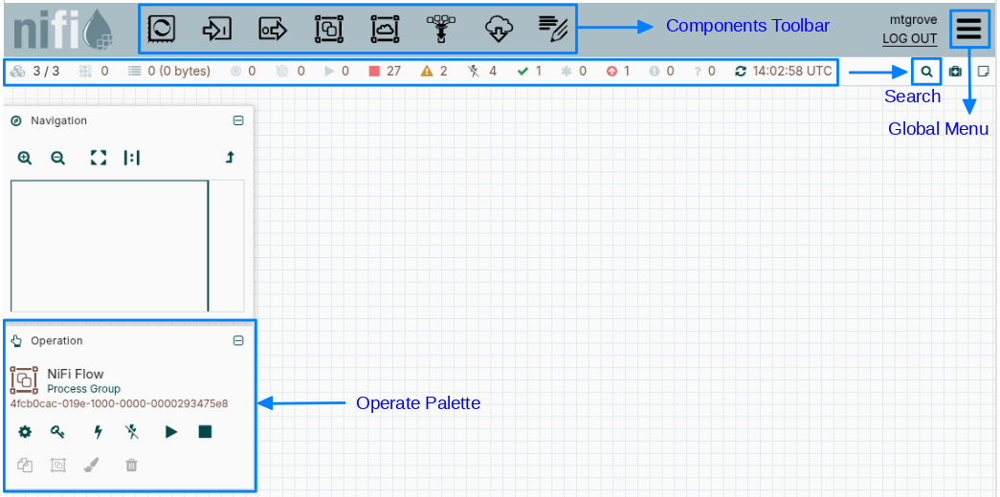
구성 요소 도구 모음은 화면의 상단 왼쪽 부분에서 실행됩니다. 그것은 구성 요소로 구성되어 당신은에 드래그 할 수 데이터 흐름을 구축하는 캔버스. 각 성분은 더 상세하게 설명됩니다 DataFlow 구축.
Status Bar는 구성 요소 툴바 아래에 있습니다. Status bar는 스레드 수에 대한 정보를 제공합니다. 현재 흐름에 능동적으로, 현재 흐름에 존재하는 데이터의 양, 얼마나 많은 원격 프로세스 그룹 존재 각 국가의 캔버스에 (Transmitting, Not Transmitting), 각 국가의 캔버스에 존재하는 몇 가지 프로세서 (정지, 실행, 무효, 비활성화), 여러 버전의 프로세스 그룹은 각 국가의 캔버스에 존재하는 방법 (일시까지, 로컬로 수정, Stale, 로컬로 수정 및 stale, 동기화 실패) 그리고 이 모든 정보의 타임스탬프 마지막으로 새로 고침되었습니다. 또한, NiFi의 인스턴스가 클러스터링된 경우, Status bar는 많은 노드가 있는지 보여줍니다. 클러스터와 현재 연결되는 방법.
Operate Palette은 화면의 왼쪽 측면에 앉아 있습니다. 버튼으로 구성되어 있습니다. DFMs에 의해 사용 흐름을 관리, 뿐만 아니라 관리자에 의해 사용자 액세스를 관리 시스템 속성을 구성하고, 많은 시스템 리소스가 애플리케이션에 제공되어야하는 방법.
캔버스의 오른쪽은 검색, 글로벌 메뉴입니다. 자주 묻는 질문 DataFlow의 검색 구성품. 글로벌 메뉴 캔버스에 기존 구성 요소를 조작 할 수있는 옵션을 포함합니다 :
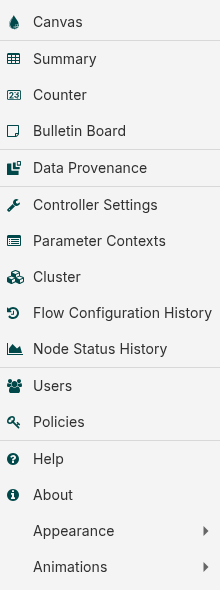
또한 UI는 캔버스 주위에 쉽게 탐색 할 수있는 몇 가지 기능이 있습니다. 당신은 사용할 수 있습니다 캔버스의 주위에 팬에 Navigate Palette, 그리고 확대에. Dataflow의 “Birds Eye View”는 고수준을 제공합니다 dataflow의 전망은 데이터 흐름의 큰 부분에서 팬을 허용한다. 당신은 또한 빵을 찾을 수 있습니다. 스크린의 바닥. Process Groups의 탐색으로 빵 부스러기 쇼 흐름의 깊이와 이 깊이에 도달하기 위해 입력된 각 프로세스 그룹. 각 Process Groups에 나열된 Breadcrumbs는 흐름에 그 수준으로 돌아가는 링크입니다.
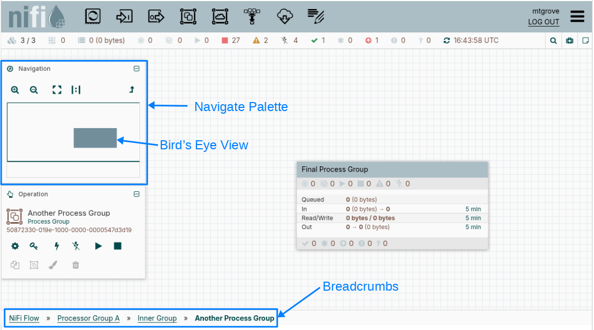
Multi-Tenant Authorization에 UI 접근
Multi-tenant authorization는 명령, 제어 및 데이터 흐름의 다른 부분을 관찰하기 위해 여러 그룹을 사용할 수 있습니다. 권한의 다양한 수준. 인증된 사용자가 NiFi 리소스를 보고 수정하거나 수정할 때 시스템 체크 사용자는 해당 작업을 수행 할 수있는 권한이 있습니다. 이 권한은 시스템의 넓은 또는 개인에 적용할 수 있는 정책에 의해 정의됩니다. 부품. Dataflow Manager 관점의 의미는 NiFi 화포에 액세스 한 번 즉, 기능 범위 당신에 따라 볼 수 있습니다.
글로벌 액세스 정책은 다음과 같습니다.
| - 연혁 | 특별 혜택 |
|---|---|
UI 보기 |
사용자가 UI를 볼 수 있습니다. |
관제사에 접근 |
사용자가 관리 컨트롤러 서비스, 보고 작업, Flow Analysis Rules, Registry Clients, Parameter Providers 및 Nodes를 포함한 컨트롤러를 보고 수정할 수 있습니다. |
질문 검증 |
사용자가 검증된 검색 및 요청을 제출할 수 있습니다. |
접근 제한 성분 |
사용자가 다른 권한이 충분하기 때문에 제한된 구성 요소를 만들 수 있습니다. 제한 사항 특정 권한이 필요한 것을 나타냅니다. 제출은 특정 제한을 위해 부여 될 수 있습니다 또는에 관계없이 부여 제한 사항. 제한에 관계없이 권한이 부여되는 경우, 사용자는 모든 제한된 구성품을 만들 수 있습니다. |
모든 정책 |
사용자는 모든 구성 요소에 대한 정책을 보고 수정할 수 있습니다. |
접근 사용자/그룹 |
사용자는 사용자와 사용자 그룹을 보고 수정할 수 있습니다. |
retrieve site-to-site 세부사항 |
다른 NiFi 인스턴스를 허용하여 Site-To-Site 세부 정보 검색 |
전망 체계 진단 |
사용자가 시스템 진단을 볼 수 있습니다. |
프록시 사용자 요청 |
다른 사람의 대신에 요청을 보낼 수있는 프록시 기계를 허용 |
액세스 카운터 |
사용자가 카운터를 보고 수정할 수 있습니다. |
유효한 구성 요소 수준 접근 정책은:
| - 연혁 | 특별 혜택 |
|---|---|
구성 보기 |
컴포넌트 구성 세부 사항을 볼 수 있도록 허용 |
구성품 수정 |
컴포넌트 구성을 수정할 수 있습니다. |
인증현황 |
이 구성 요소에 의해 생성 된 입증 된 이벤트를 볼 수있는 사용자 |
데이터 보기 |
FlowFile queues의 메타데이터와 콘텐츠를 아웃바운드 연결 및 검증된 이벤트를 통해 사용자를 허용 |
데이터 수정 |
사용자가 빈 FlowFile queues를 아웃바운드 연결에 허용하고 입증 된 이벤트를 통해 재생 제출 |
정책 보기 |
사용자의 목록을 볼 수 있고 구성 요소를 수정할 수 있습니다. |
정책 수정 |
사용자의 목록을 수정할 수 있습니다. |
사이트별 검색 |
NiFi 인스턴스에서 데이터를 수신하는 포트를 허용 |
사이트-to-site를 통해 데이터 전송 |
NiFi 인스턴스에서 데이터를 보낼 포트 허용 |
NiFi 리소스를 볼 수 없거나 수정할 수 없다면 시스템 관리자에게 연락하거나 사용자 및 액세스 정책 구성을 참조하십시오. 시스템 관리자의 가이드 더 많은 정보.
인기있는
NiFi가 안전하게 실행되도록 구성되면 사용자는 DataFlow에 액세스 할 수 있습니다. NiFi 설정에 대한 정보 안전하게, 참조 시스템 관리자의 가이드. NiFi가 익명 액세스를 지원하는 경우 사용자는 액세스 권한을 부여합니다. 로그인할 수 있는 옵션을 지정합니다.
'login' 링크를 클릭하면 로그인을 엽니다. 사용자가 사용자 이름 / 패스워드로 로그인하는 경우 자주 묻는 질문 NiFi가 익명 액세스를 지원하도록 구성되지 않은 경우 사용자는 사용자 이름 / 비밀번호로 로그인됩니다. 즉시 캔버스를 우회하여 로그인 양식으로 전송됩니다.
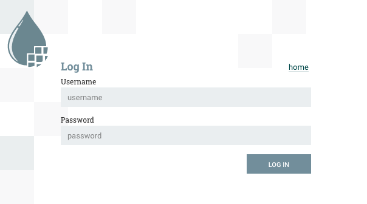
DataFlow 구축
DFM은 NiFi UI를 사용하여 자동화된 데이터 흐름을 구축할 수 있습니다. 단순히 도구 모음에서 캔버스에 구성 요소를 드래그, 특정한 필요를 충족시키기 위하여 구성품을 구성하고, 연결하십시오 함께 구성.
캔버스에 부품 추가
위의 사용자 인터페이스 섹션은 UI의 다른 세그먼트를 설명하고 구성 요소 도구 모음을 지적했습니다. 이 섹션은 도구 모음의 구성 요소의 각을 살펴:
관련 기사: 프로세서는 데이터 인그레스, egress, routing 및 책임으로 가장 일반적으로 사용되는 구성 요소입니다. 조작. 다양한 종류의 프로세서가 있습니다. 사실, 이것은 NiFi에 아주 일반적인 연장 점입니다, 많은 공급 업체가 사용 사례에 필요한 모든 기능을 수행하는 자신의 프로세서를 구현할 수 있음을 의미한다. 프로세서가 캔버스에 끌 때, 사용자는 프로세서의 유형이 사용하도록 선택할 수있는 대화 상자로 표시됩니다.
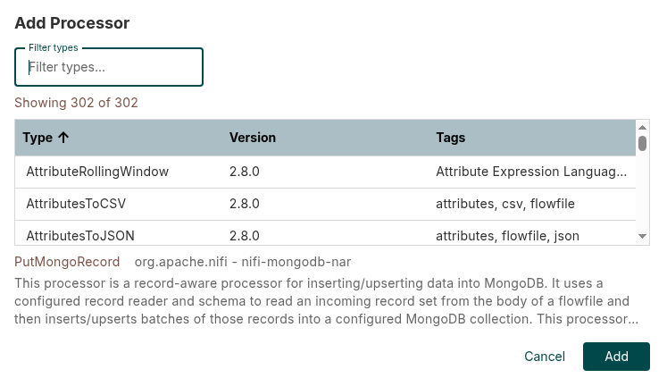
상단 오른쪽 모서리에서 사용자는 프로세서 유형 또는 프로세서와 관련된 태그를 필터링 할 수 있습니다.
프로세서 개발자는 프로세서에 태그를 추가하는 기능이 있습니다. 이 태그는 필터링을 위한 이 대화 상자에서 사용되며
태그 클라우드의 왼쪽 측면에 표시됩니다. 특히 태그가있는 더 많은 프로세서, 더 큰 태그가 나타납니다
태그 클라우드에서. 클라우드에서 태그를 클릭하면 해당 태그를 포함 할 수있는 프로세서를 필터링합니다. 여러
태그는 선택, 그 태그의 모든 포함 된 그 프로세서 만 표시됩니다. 예를 들어, 우리가 그만을 보여주고 싶다면
우리가 ingest 파일에 우리를 허용하는 프로세서, 우리는 모두 선택할 수 있습니다 files 태그와 ingest 유형:

제한된 성분은 표시될 것입니다 이름 옆에 아이콘. 이들은 성분입니다 NiFi REST API/UI를 통해 연산자에 의해 제공된 임의 unsanitized 코드를 실행하는 데 사용할 수 있습니다 또는 얻을 수 또는 NiFi OS 자격 증명을 사용하여 NiFi 호스트 시스템에 데이터를 변경합니다. 이 성분은 다른 허가한 NiFi에 의해 사용될 수 있었습니다 응용 프로그램, escalate 특권을 사용하거나 NiFi 프로세스의 내부에 대한 데이터를 노출 할 수있는 사용자 또는 호스트 시스템. 이러한 모든 기능은 권한으로 간주되어야하며, 관리자는 이러한 능력과 인식되어야합니다. 신뢰할 수있는 사용자의 하위 세트에 대해 명시적으로 활성화합니다. 사용자의 접근 권한을 부여해야 하는 제한된 구성 요소를 생성하고 수정할 수 있습니다. 더 이상 아이콘은 특정 권한이 제한되는 구성품을 표시합니다. 허가는 일 수 있습니다 제한없이 할당됩니다. 이 경우에, 사용자는 모든 제한한 성분에 접근할 것입니다. 대안으로, 사용자는 할 수 있습니다 특정 제한에 대한 할당 된 접근. 사용자가 모든 제한에 액세스 권한을 부여 한 경우, 그들은 그 구성 요소에 대한 접근은 그렇지 않으면 충분한 권한. 더 많은 정보를 원하시면 Multi-Tenant Authorization에 UI 접근 그리고 Versioned Flows의 제한 부품.
"Add"버튼을 클릭하거나 프로세서 유형에 더블 클릭하면 선택한 프로세서를 캔버스에 추가합니다. 떨어졌다.
| 캔버스에 추가 된 모든 구성 요소의 경우 마우스를 선택하고 캔버스에 어디에서 이동할 수 있습니다. 또한 Shift 키를 누른 상태에서 여러 항목을 선택하여 각 아이템을 선택하거나 보관하여 선택할 수 있습니다. Shift 키 아래로 원하는 구성 요소 주위에 선택 상자를 드래그. |
당신은 캔버스에 프로세서를 드래그하면, 당신은 프로세서에 마우스 오른쪽 버튼으로 상호 작용 할 수 있습니다 context 메뉴에서 옵션을 선택합니다. context 메뉴에서 사용할 수있는 옵션은 귀하에게 할당 된 권한에 따라 다를 수 있습니다.
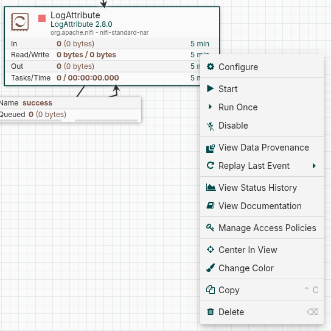
컨텍스트 메뉴에서 사용할 수있는 옵션이 다를 수 있지만, 다음과 같은 옵션은 일반적으로 프로세서와 함께 작동 할 수있는 전체 권한이있을 때 사용할 수 있습니다.
-
제품 설명: 이 옵션은 사용자가 프로세서의 구성을 설정하거나 변경할 수 있습니다. 프로세서 구성).
| 프로세서, 포트, Remote Process Groups, Connections 및 Labels의 경우 원하는 구성 요소를 더블 클릭하여 구성 대화 상자를 열 수 있습니다. |
-
지원하다 or 기타: 이 옵션은 사용자가 프로세서를 시작하거나 중지 할 수 있습니다. 옵션은 프로세서의 현재 상태에 따라 시작 또는 중지 될 것입니다.
-
시작: 이 옵션은 사용자가 선택한 프로세서를 즉시 실행할 수 있습니다. 프로세서가 executing에서 방지되는 경우 (예를 들어, 수신된 FlowFiles 또는 outgoing 연결이 적용되지 않음) 프로세서가 트리거되지 않습니다. 계정 관리 설정 적용 (i.e., 기본 노드 그리고 모든 노드 설정은 기본 노드에서 프로세서를 한 번만 실행하거나 노드마다 한 번만 실행할 수 있습니다. 일과 함께 타이머 구동 그리고 CRON 구동 계획 전략.
-
이름 * or 기타 제품: 이 옵션은 사용자가 프로세서를 활성화하거나 비활성화 할 수 있습니다. 옵션은 프로세서의 현재 상태에 따라 Enable 또는 Disable 일 것입니다.
-
데이터 검증: 이 옵션은 NiFi Data Provenance 테이블을 표시하여 FlowFiles의 데이터 검증 이벤트에 대한 정보로 해당 프로세서를 통해 경로를 표시합니다. 데이터 검증).
-
최근 행사: 이 옵션은 마지막으로 입증 된 이벤트를 재생합니다. 프로세서가 처리 한 마지막 FlowFile을 효과적으로 재생합니다. FlowFile 재생).
-
본문 바로가기: 이 옵션은 프로세서의 통계 정보의 그래픽 표현을 동시에 엽니다.
-
Backlog 보기: 외부 시스템에 대한 backlog를보고 지원하는 프로세서 (queue 또는 화제와 같은),이 옵션은 현재 backlog 정보를 표시합니다. backlog를 컴퓨팅하기 때문에 외부 시스템을 쿼리 할 수 있으므로이 작업이 필요합니다. 구성품 수정 접근, 단순히 구성 보기 접속하다
-
관련 상품: 이 옵션은 프로세서의 사용 설명서에 사용자가 걸립니다.
-
연결 보기→Upstream: 이 옵션은 사용자가 볼 수 있으며 "jump to" 업스트림 연결이 가능합니다. 프로세서가 다른 프로세스 그룹과 연결될 때 특히 유용합니다.
-
연결 보기→Downstream: 이 옵션은 사용자가 볼 수 있으며 "jump to" 다운스트림 연결이 가능합니다. 프로세서가 다른 프로세스 그룹과 연결될 때 특히 유용합니다.
-
오시는 길: 이 옵션은 주어진 프로세서에 캔버스의보기를 중심으로합니다.
-
색상 변경: 이 옵션은 사용자가 큰 흐름의 시각적 관리를 쉽게 만들 수있는 프로세서의 색상을 변경할 수 있습니다.
-
관련 기사: 이 옵션은 클립보드에서 선택한 프로세서의 복사본을 배치하므로 캔버스를 오른쪽 클릭하고 붙여서 붙여넣을 수 있습니다. 복사 / 붙여넣기 동작은 키 입력을 사용하여 수행 할 수 있습니다 Ctrl-C (Command-C) 및 Ctrl-V (Command-V).
-
기타 제품: 이 옵션은 DFM이 캔버스에서 프로세서를 삭제할 수 있습니다.
입력 포트: 입력 포트는 Process Group으로 전송 데이터를 위한 메커니즘을 제공합니다. 입력 포트가 끌 때 캔버스에, DFM은 포트 이름을 지정하는 것이다. Process Group 내의 모든 포트는 고유의 이름을 가지고 있어야 합니다.
모든 구성 요소는 Process Group 내에서만 존재합니다. 사용자가 처음 NiFi 페이지로 이동하면 사용자는 배치됩니다. 루트 프로세스 그룹에. 입력 포트가 루트 프로세스 그룹에 걸린 경우, 입력 포트는 메커니즘을 제공합니다. NiFi의 원격 인스턴스에서 데이터를 수신 사이트맵. 이 경우에, 입력 포트는 형성될 수 있습니다 적절한 사용자에 대한 액세스를 제한하려면 NiFi가 안전하게 실행되도록 구성됩니다. NiFi 설정에 대한 정보 안전하게, 참조 시스템 관리자의 가이드.
산출 항구: 출력 포트는 Process Group의 전송 데이터를 외부로 제공합니다. 프로세스 그룹 출력 포트가 캔버스에 끌 때, DFM은 포트 이름을 지정합니다. 모든 항구 Process Group 내의 고유한 이름이 있어야 합니다.
출력 포트가 Root Process Group에 걸린 경우 출력 포트는 데이터를 전송하는 메커니즘을 제공합니다. NiFi의 원격 인스턴스를 통해 사이트맵. 이 경우에, 항구는 큐로 작동합니다. 원격 인스턴스로 포트에서 NiFi 풀 데이터의 수신 연결의 큐에서 데이터가 제거됩니다. NiFi가 설정된 경우 안전하게 실행하려면, 출력 포트는 적절한 사용자에게 액세스를 제한 할 수 있습니다. 설정에 대한 정보 NiFi는 안전하게 실행합니다. 시스템 관리자의 가이드.
프로세스 그룹: Process Groups는 Dataflow가 이해하기 쉽습니다. 그리고 유지. 또한 Process Groups는 이러한 방식으로 구성품을 그룹화하는 메커니즘으로 사용됩니다. 더 거친 단위로. 예를 들어, Execution Engine 또는 FlowFile Outbound 정책을 구성하여.
Process Group이 캔버스에 끌 때, DFM은 Process Group의 이름을 지정합니다. 프로세스 그룹은 그 부모 그룹 내에서 배열됩니다.
프로세스 그룹을 캔버스에 끌어 놓으면 Process Group에서 마우스 오른쪽 버튼으로 상호 작용하고 Process Group에서 옵션을 선택합니다. 컨텍스트 메뉴 context 메뉴에서 사용할 수있는 옵션은 귀하에게 할당 된 권한에 따라 다를 수 있습니다.
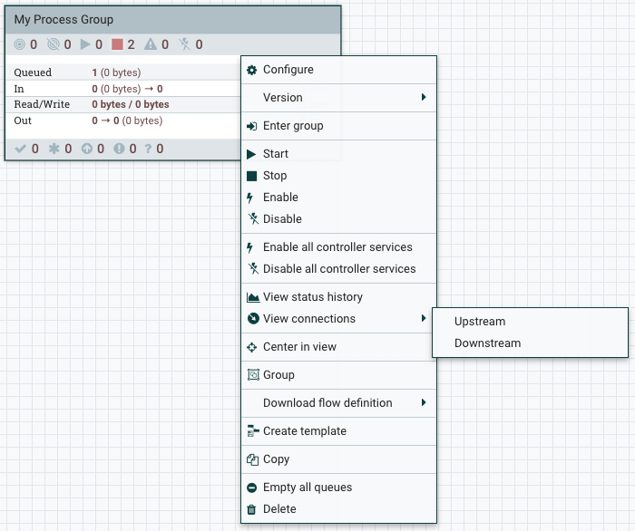
컨텍스트 메뉴에서 사용할 수있는 옵션은 다를 수 있지만, 다음과 같은 옵션은 일반적으로 Process Group과 함께 작업 할 수있는 전체 권한이있을 때 사용할 수 있습니다.
-
제품 설명: 이 옵션은 Process Group의 구성을 설정하거나 변경할 수 있습니다.
-
그룹소개: 이 옵션은 Process Group을 입력할 수 있습니다.
| Process Group에서 두 번 클릭 할 수 있습니다. |
-
지원하다: 이 옵션은 Process Group을 시작할 수 있습니다.
-
기타: 이 옵션은 Process Group을 중지할 수 있습니다.
-
이름 *: 이 옵션은 Process Group의 모든 프로세서를 가능하게 할 수 있습니다.
-
기타 제품: 이 옵션은 Process Group의 모든 프로세서를 비활성화 할 수 있습니다.
-
본문 바로가기: 이 옵션은 Process Group의 통계 정보의 그래픽 표현을 동시에 엽니다.
-
연결 보기→Upstream: 이 옵션은 프로세스 그룹에 오고 있는 "jump to" 업스트림 연결을 볼 수 있습니다.
-
연결 보기→Downstream: 이 옵션은 프로세스 그룹에서 나오는 다운스트림 연결과 "jump to"를 볼 수 있습니다.
-
오시는 길: 이 옵션은 주어진 프로세스 그룹에 캔버스의보기를 중심으로합니다.
-
그룹: 이 옵션은 사용자가 선택한 Process Group 및 캔버스에 선택한 다른 구성품을 포함하는 새로운 Process Group을 만들 수 있습니다.
-
Flow 정의 다운로드: 이 옵션은 JSON 파일로 프로세스 그룹의 흐름 정의를 다운로드 할 수 있습니다. 파일은 백업 또는 수입으로 사용될 수 있습니다. NiFi 등록 사용 방법 NiFi 클립. 교류 정의를 다운로드할 때 2개의 선택권이 있습니다:
-
→ 외부 서비스 없이: 선택된 프로세스 그룹에 의해 참조되는 컨트롤러 서비스(예, 부모 그룹 서비스) 없습니다. 서비스의 흐름 정의에 포함.
-
→ 외부 서비스: 선택된 프로세스 그룹에 의해 참조되는 컨트롤러 서비스(예, 부모 그룹 서비스) 일 수 있습니다 흐름 정의에 포함.
-
-
관련 기사: 이 옵션은 클립보드에서 선택한 Process Group의 복사본을 배치하므로 캔버스를 마우스 오른쪽 클릭하고 붙여넣기로 캔버스에 다른 곳에서 붙여넣을 수 있습니다. 복사 / 붙여넣기 동작은 키 입력을 사용하여 수행 할 수 있습니다 Ctrl-C (Command-C) 및 Ctrl-V (Command-V).
-
빈 모든 큐: 이 옵션은 사용자가 선택한 Process Group에서 모든 큐를 빈 할 수 있습니다. 모든 FlowFiles는 요청의 시간에 대기합니다.
-
기타 제품: 이 옵션은 프로세스 그룹을 삭제하기 위해 DFM을 허용합니다.
(주의: "다운로드 흐름 정의" 버전 프로세스 그룹에 선정되면 다운로드에 버전 정보가 없습니다. 즉, JSON 파일의 결과는 프로세스 그룹이 버전 또는 아닙니다.)
원격 프로세스 그룹: Remote Process Groups는 Process Group과 유사합니다. 그러나 Remote Process Group (RPG)는 NiFi의 원격 인스턴스를 참조합니다. RPG가 캔버스에 끌 때, 오히려 이름을 프린트하는 것보다, DFM은 원격 NiFi 인스턴스의 URL을 위해 프린트됩니다. 원격 NiFi가 클러스터된 인스턴스인 경우, 두 개 이상의 클러스터 노드 URL을 추가하는 것이 권장되므로 노드 중 하나가 사용할 수 없는 경우에도 초기 연결을 만들 수 있습니다. 여러 URL은 comma-separated 형식으로 지정할 수 있습니다.
데이터가 RPG를 통해 NiFi 클러스터 된 인스턴스로 전송되면, RPG는 먼저 클러스터에 노드가 있고 각 노드가 얼마나 바쁜지 결정하는 원격 인스턴스에 연결됩니다. 이 정보는 각 노드에 푸시되는 데이터를 로드하는 데 사용됩니다. 원격 인스턴스는 클러스터에 떨어졌거나 클러스터에 추가된 노드에 대한 정보를 결정하고 각 노드의 부하를 기반으로 하는 부하를 재 계산하는 것입니다. 더 많은 정보를 위해, 단면도를 위에 보십시오 사이트맵.
Remote Process Group을 캔버스에 드래그하면 Remote Process Group을 마우스 오른쪽 버튼으로 클릭하고 컨텍스트 메뉴에서 옵션을 선택하여 상호 작용할 수 있습니다. 메뉴에서 사용할 수있는 옵션은 할당 된 권한에 따라 다릅니다.
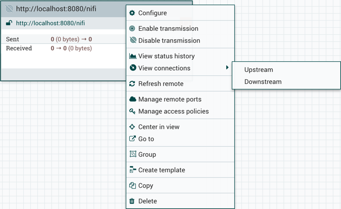
다음 옵션은 일반적으로 원격 프로세스 그룹과 작업 할 수있는 전체 권한이있을 때 사용할 수 있습니다.
-
제품 설명: 이 옵션은 사용자가 Remote Process Group의 구성을 설정하거나 변경할 수 있습니다.
-
Enable 전송: NiFi 인스턴스 간의 데이터 전송 (see) 원격 프로세스 그룹 전송).
-
공급 능력: NiFi 인스턴스 간의 데이터 전송을 비활성화합니다.
-
본문 바로가기: 이 옵션은 Remote Process Group의 통계 정보의 그래픽 표현을 동시에 엽니다.
-
연결 보기→Upstream: 이 옵션은 사용자가 원격 프로세스 그룹에 와서 "jump to" 업스트림 연결을 볼 수 있습니다.
-
연결 보기→Downstream: 이 옵션은 사용자가 원격 프로세스 그룹에서 나가는 다운스트림 연결과 "jump to"를 볼 수 있습니다.
-
원격 제어: 이 옵션은 원격 NiFi 인스턴스의 상태를 볼 수 있습니다.
-
원격 포트 관리: 이 옵션은 원격 프로세스 그룹이 연결되는 NiFi의 원격 인스턴스에 존재하는 입력 포트 및/또는 출력 포트를 볼 수 있습니다. Site-to-Site 구성이 안전하다면 NiFi 연결이 보이지 않는 포트 만 표시됩니다.
-
오시는 길: 이 옵션은 주어진 Remote Process Group의 캔버스를 볼 수 있습니다.
-
바로가기: 이 옵션은 브라우저의 새로운 탭에서 원격 NiFi 인스턴스를 볼 수 있습니다. Site-to-Site 구성이 안전하다면, 사용자는 원격 NiFi 인스턴스에 액세스해야합니다.
-
그룹: 이 옵션은 사용자가 선택한 Remote Process Group 및 캔버스에 선택한 기타 구성품을 포함하는 새로운 Process Group을 만들 수 있습니다.
-
관련 기사: 이 옵션은 클립보드에서 선택한 Process Group의 복사본을 배치하므로 캔버스를 마우스 오른쪽 클릭하고 붙여넣기로 캔버스에 다른 곳에서 붙여넣을 수 있습니다. 복사 / 붙여넣기 동작은 키 입력을 사용하여 수행 할 수 있습니다 Ctrl-C (Command-C) 및 Ctrl-V (Command-V).
-
기타 제품: 이 옵션은 DFM이 캔버스에서 Remote Process Group을 삭제할 수 있습니다.
팟캐스트: Funnels는 많은 연결에서 단일 연결에 데이터를 결합하는 데 사용됩니다. 이것은 2개의 이점이 있습니다. 첫 번째, 많은 연결이 같은 목적지로 만든 경우, 캔버스는 그 연결이 클 수 있습니다 큰 공간에 걸쳐 있다. 이 커넥션을 단일 커넥션으로 funneling하면 단일 커넥션이 될 수 있습니다. 대신 큰 공간에 그려. 둘째, 연결은 FlowFile Prioritizers로 구성될 수 있습니다. 데이터에서 몇몇 연결은 단 하나 연결으로 funneled 할 수 있습니다, 그에 자료의 모두를 우선 순위에 제공 1개의 연결은, 오히려 각 연결에 자료를 자주적으로 전하기.
제품정보: Labels는 dataflow의 일부에 대한 문서를 제공하기 위해 사용됩니다. 라벨이 캔버스에 떨어질 때,
기본 크기로 생성됩니다. 라벨은 아래쪽 모서리에 손잡이를 드래그하여 크기를 변경할 수 있습니다.
라벨은 처음 생성 할 때 텍스트가 없습니다. 라벨의 텍스트는 라벨을 마우스 오른쪽 단추로 추가 할 수 있습니다.
제품 정보 Configure.
구성 요소 버전
프로세서, Controller Services, Reporting Tasks 및 Flow Analysis Rules의 버전에 대한 정보에 액세스 할 수 있습니다. 여러 NiFi 인스턴스를 사용하여 클러스터 된 환경에서 작업 할 때 특히 유용합니다. 구성 요소의 다른 버전 또는 프로세서의 새로운 버전으로 업그레이드 된 경우. 추가 프로세서, Controller Service, Reporting Task 추가 및 Flow Analysis Rule 대화 추가에는 컴포넌트 버전을 식별하는 열이 포함되어 있습니다. 구성 요소의 이름으로, 구성품을 생성하는 조직 또는 그룹, 포함되는 NAR 번들 부품.
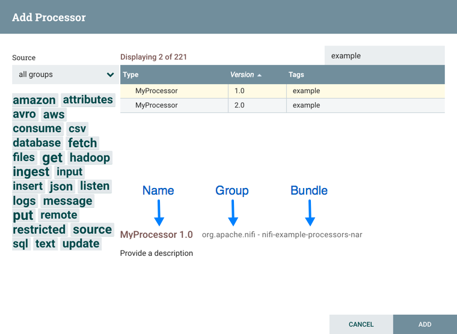
캔버스에 표시된 각 구성 요소는이 정보를 포함합니다.
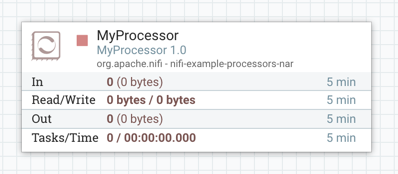
분류 및 필터링 부품
구성 요소를 추가할 때, 시작 소스를 기준으로 버전 번호 또는 필터에 정렬할 수 있습니다.
버전에 따라 정렬하려면, 버전 열을 클릭하여 ascending 또는 Hearting 버전 순서를 표시하십시오.
소스 그룹에 기반을 둔 필터로, 추가 구성 요소 대화의 왼쪽 상단의 소스 드롭 다운을 클릭합니다. 그리고 원하는 그룹을 선택합니다.
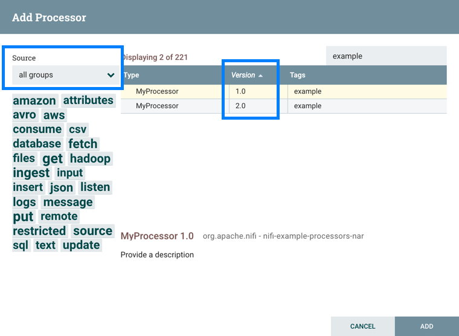
구성 요소 버전 변경
구성 요소 버전을 변경하려면 다음 단계를 수행하십시오.
-
구성 옵션을 표시하기 위해 캔버스에 구성 요소를 마우스 오른쪽 버튼.
-
변경 버전 선택.
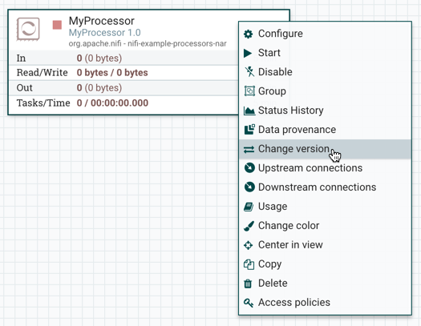
-
구성 요소 버전 대화에서 버전 드롭다운 메뉴에서 실행하려는 버전을 선택하십시오.
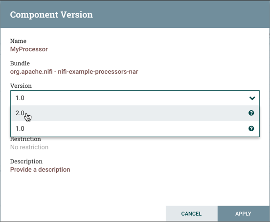
버전 의존성 이해
구성품을 구성할 때 버전 의존성에 대한 정보를 볼 수 있습니다.
-
구성품을 마우스 오른쪽 단추로 클릭하고 구성품을 위한 대화 상자를 표시할 수 있습니다.
-
속성 탭을 클릭합니다.
-
모든 버전의 신뢰할 수 있는 정보를 보려면 정보 아이콘을 클릭하십시오.
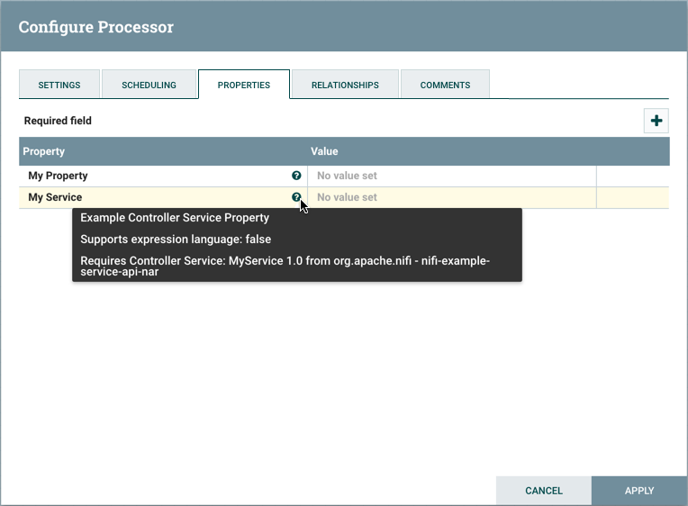
다음 예에서 MyProcessor 버전 1.0은 컨트롤러 서비스 StandardMyService 버전 1.0과 제대로 구성됩니다.
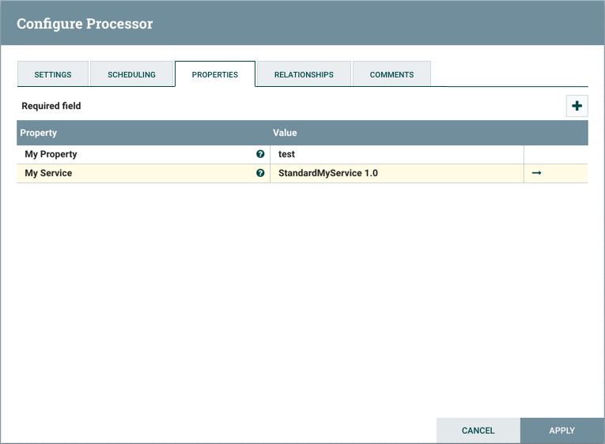
MyProcessor의 버전이 호환되는 버전 (MyProcessor 2.0)로 변경되면 유효 오류가 프로세서에 표시됩니다.
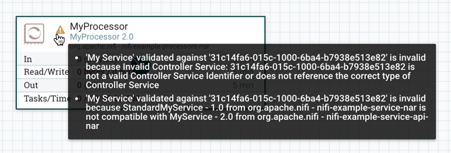
그리고 오류 메시지는 서비스가 더 이상 유효하지 않기 때문에 프로세서의 컨트롤러 서비스 구성에 표시됩니다.
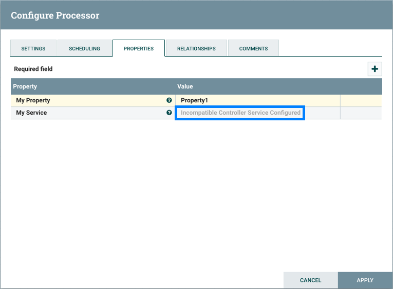
프로세서 구성
프로세서를 구성하려면 프로세서에 마우스 오른쪽 클릭하고 선택 Configure context 메뉴에서 옵션. 대안으로, 단지 프로세서를 더블 클릭. 구성 대화 상자는 4 개로 열립니다.
다른 탭, 아래 논의되는 각. 프로세서 구성을 완료하면 적용 할 수 있습니다.
"Apply"을 클릭하여 변경하거나 "Cancel"을 클릭하여 모든 변경 사항을 취소하십시오.
프로세서가 시작된 후, 프로세서에 표시된 컨텍스트 메뉴가 더 이상 없습니다. Configure
옵션이 있지만 오히려 View Configuration 옵션. 프로세서 설정은 프로세서가 변경될 수 없습니다.
실행. 먼저 프로세서를 중지하고 구성하기 전에 모든 활성 작업을 기다립니다.
다시 프로세서.
특정 제어 문자를 입력하는 것은 지원되지 않으며 입력 할 때 자동으로 필터링됩니다. 뒤에 오는 특성 및 어떤 unpaired Unicode surrogate codepoints는 어떤 윤곽든지에서 유지되지 않습니다:
[#x0], [#x1], [#x2], [#x3], [#x4], [#x5], [#x6], [#x7], [#x8], [#xB], [#xC], [#xE], [#xF], [#x10], [#x11], [#x12], [#x13], [#x14], [#x15], [#x16], [#x17], [#x18], [#x19], [#x1A], [#x1B], [#x1C], [#x1D], [#x1E], [#x1F], [#xFFFE], [#xFFFF]
설정 탭
프로세서 구성 대화의 첫 번째 탭은 설정 탭입니다.
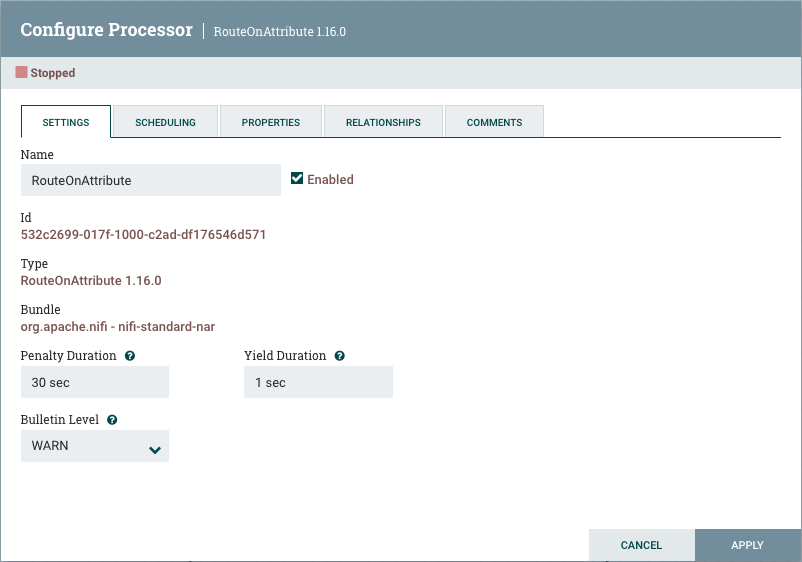
이 탭에는 여러 가지 구성 항목이 포함되어 있습니다. 먼저 DFM이 프로세서의 이름을 변경할 수 있습니다. 기본적으로 프로세서의 이름은 프로세서 유형과 동일합니다. 프로세서 이름 옆에 체크 박스, 나타내는 프로세서가 Enabled인지 여부. 프로세서가 캔버스에 추가되면 활성화됩니다. 만약에 프로세서가 비활성화되어 시작할 수 없습니다. 장애 상태는 프로세서의 그룹이 시작될 때를 나타내는 데 사용됩니다. DFM이 전체 프로세스 그룹을 시작할 때와 같은 (disabled) 프로세서가 제외되어야합니다.
이름 윤곽의 밑에, 가공업자의 유일한 식별자는 가공업자의 유형과 NAR 뭉치와 함께 표시됩니다. 이 값은 수정할 수 없습니다.
다음은 'Penalty Period'와 'Yield Period'를 구성하기위한 두 대화입니다. 처리의 정상적인 과정 도중
data (a FlowFile)의 조각은 이 시간에 처리 할 수 없다는 것을 나타냅니다.
데이터는 나중에 처리 할 수 있습니다. 이 발생하면 프로세서는 FlowFile을 Penalize 할 수 있습니다. 이것은
몇 시간 동안 처리되는 FlowFile을 방지합니다. 예를 들어, 프로세서가 데이터를 푸시하는 경우
원격 서비스에, 그러나 원격 서비스는 이미 프로세서 파일 이름과 같은 파일이
지정, 프로세서는 FlowFile을 처벌 할 수 있습니다. 'Penalty Period'는 DFM이 얼마나 오랫동안 지정할 수 있도록 허용합니다.
FlowFile은 암호화되어야 합니다. 기본값은 30 seconds.
마찬가지로 프로세서는 프로세서가 더 이상 어떤 진행을 할 수 없다는 것을 결정할 수 있습니다.
처리되는 데이터에 관계 없이. 예를 들어, 프로세서가 원격 서비스에 데이터를 푸시하는 경우
서비스는 반응하지 않습니다, 가공업자는 어떤 진도든지 만들 수 없습니다. 결과적으로 프로세서는 'yield'이어야합니다.
몇 시간 동안 실행할 예정된 프로세서를 방지합니다. 그 기간은 설정에 의해 지정됩니다.
'Yield 기한'. 기본값은 1 second.
설정 탭의 왼쪽에있는 마지막 설정 옵션은 Bulletin 레벨입니다. 언제 프로세서 쓰기
로그에, 프로세서는 또한 Bulletin을 생성합니다. 이 설정은 Bulletin의 가장 낮은 수준을 나타냅니다.
사용자 인터페이스에 표시됩니다. 기본적으로 Bulletin 레벨은 설정 WARN즉, 모든 경고와 오류 수준 표시
게시판
스케줄링 탭
프로세서 구성 대화의 두 번째 탭은 스케줄링 탭입니다.
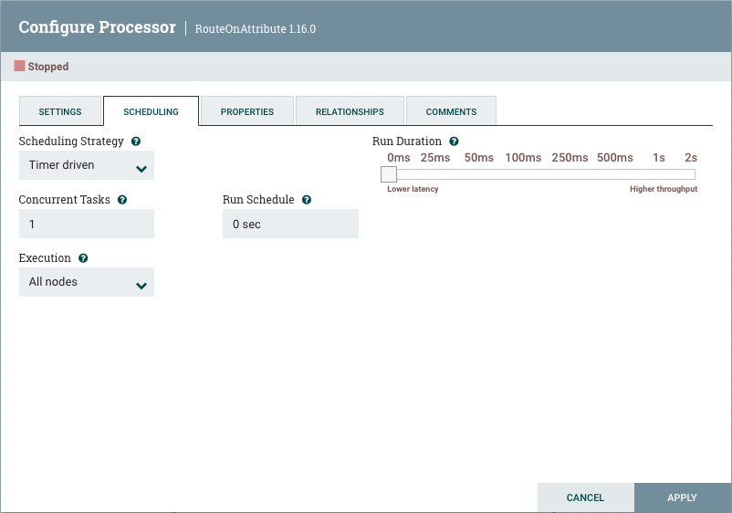
계획 전략
첫번째 구성 옵션은 Scheduling 전략입니다. 스케줄링 구성에 대한 세 가지 옵션이 있습니다:
타이머 구동: 기본 모드입니다. 프로세서는 일정한 간격에서 실행할 수 있습니다. 관련 기사 프로세서는 'Run Schedule' 옵션에 의해 정의됩니다 (아래 참조).
CRON 구동: CRON 구동 스케줄링 모드를 사용할 때, 프로세서는 주기적으로 실행될 예정이며, Timer 구동 스케줄링 모드. 그러나 CRON 구동 모드는 크게 더 융통성을 제공합니다. 구성의 복잡성을 증가. CRON 구동 스케줄링 값은 6개의 필수 필드와 1개의 문자열입니다. 선택 분야, 각 공간에 의해 분리. 이 분야는:
| 제품정보 | 유효 값 |
|---|---|
두 번째 |
0-59 |
소요시간 |
0-59 |
영업시간 |
0-23 |
달의 날 |
1-31 |
월~금 |
1-12 또는 JAN-DEC |
주간의 날 |
0-7 또는 SUN-SAT (0 또는 7 일요일) |
당신은 일반적으로 다음과 같은 방법 중 하나를 지정:
-
이름 *: 1개 이상의 유효값을 지정합니다. comma-separated 리스트를 사용하여 1개 이상의 값을 입력할 수 있습니다.
-
제품정보: <number>-<number> 구문을 사용하여 범위를 지정합니다.
-
계정 관리: <start value>/<increment> 구문을 사용하여 증가를 지정합니다. 예를 들어, 분 필드에서 0/15은 분 0, 15, 30 및 45을 나타냅니다.
몇 가지 유효한 특수 문자를 인식해야합니다.
-
* - 모든 값은 해당 필드에 유효합니다.
-
? — 특정 값이 지정되지 않음을 나타냅니다. 이 특별한 문자는 주일 필드의 달과 일에서 유효합니다.
-
L - 당신은 주 값의 일 중 하나에 L을 부과 할 수, 달에이 날의 마지막 발생을 지정합니다. 제품 정보 예, 1L은 매월 마지막 일요일을 나타냅니다.
예를 들면:
-
문자열
0 0 13 * * *매일 오후 1 시부 터 운영 할 프로세서를 일정으로 나타냅니다. -
문자열
0 20 14 ? * MON-FRI당신은 금요일을 통해 매주 월요일 오후 2시 20 분에서 실행 할 프로세서를 일정 할 것을 나타냅니다.
동시 작업
다음, Scheduling 탭은 'Concurrent Tasks'라는 구성 옵션을 제공합니다. 이 제어 얼마나 많은 스레드 프로세서 이용안내 다른 방법을 Said,이 제어 얼마나 많은 FlowFiles는 같은 시간에이 프로세서에 의해 처리되어야한다. 지원하다 이 값은 일반적으로 프로세서가 동시에 데이터를 처리 할 수 있습니다. 그러나, 이 시스템을 사용 하 여 그런 다음 다른 프로세서에 의해 사용되지 않는 리소스. 이 근본적으로 프로세서의 상대적인 무게를 제공 — 그것은 통제 시스템의 리소스는 다른 프로세서 대신이 프로세서에 할당되어야합니다. 이 분야는 유효합니다 대부분의 프로세서. 있지만, 일부 유형의 프로세서는 단일 동시 작업으로 예정 될 수 있습니다.
실행 일정
'Run Schedule'은 종종 프로세서가 실행 될 예정이라고 예측합니다. 이 필드의 유효 값은 선택한 것에 달려 있습니다.
계획 전략 (위 참조). Timer driven Scheduling Strategy를 사용할 때, 이 값은 숫자로 지정된 시간의 기간입니다.
시간 단위에 따라. 예를 들어, 1 second or 5 mins. 기본 값의 0 sec 프로세서가 종종 실행되어야한다는 것을 의미합니다.
데이터가 처리되기 때문에 가능한 한. 시간 단위 (예 : 시간 단위)에 관계없이 0의 시간 기간 동안 사실입니다. 0 sec,
0 mins, 0 days). CRON driven Scheduling Strategy에 적용 가능한 값에 대한 설명은 설명 참조
CRON 구동 Scheduling 전략 자체.
계정 관리
실행 설정은 노드(s)를 결정하는 데 사용됩니다. 실행 예정 'All Nodes'를 선택하면 클러스터의 모든 노드에 배치됩니다. 제품정보 'Primary Node'는 기본 노드에서만 예정된 이 프로세서에서 발생합니다. 'Primary Node' 실행을 위해 구성된 프로세서는 프로세서 아이콘 옆에 "P"로 식별됩니다.
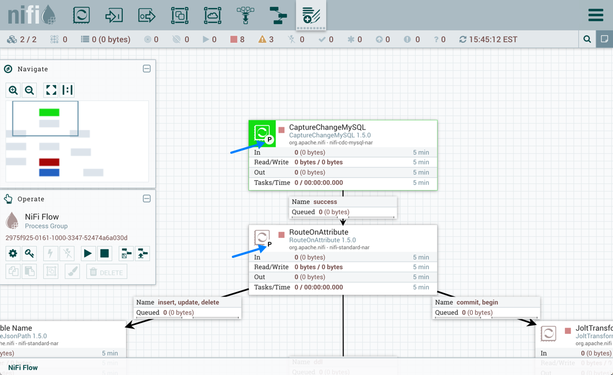
빠르게 'Primary Node' 프로세서를 식별하려면, "P" 아이콘은 요약 페이지에서 프로세서 탭에 표시됩니다.
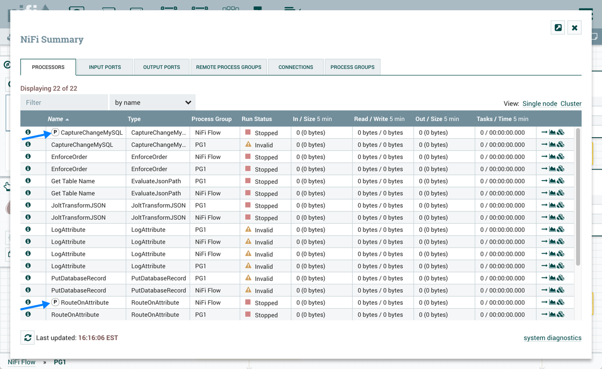
실행 기간
Scheduling 탭의 오른쪽은 'Run Period'를 선택하기위한 슬라이더를 포함합니다. 이 제어 얼마나 긴 프로세서가 예정되어야한다 트리거되는 각 시간을 실행합니다. 슬라이더의 왼쪽에 'Lower latency'가 표시됩니다. 'Higher throughput'가 표시되어 있습니다. 프로세서가 실행되면 FlowFiles를 전송하기 위해 저장소를 업데이트해야합니다. 다음 연결. 저장소가 비싸기 때문에 저장소를 업데이트하기 전에 한 번에 수행 할 수있는 더 많은 작업, 더 많은 작업 프로세서를 처리 할 수 있습니다 (Higher throughput). 그러나 다음 프로세서가 처리를 시작할 수 없다는 것을 의미합니다. 이전 프로세스가 이 저장소를 업데이트 할 때까지 그 FlowFiles. 결과적으로, 대기 시간은 더 길 것입니다 (공정에 필요한 시간) 처음부터 끝까지 FlowFile은 더 길 것입니다). 결과적으로 슬라이더는 DFM이 선호하는 스펙트럼을 제공합니다. 더 낮은 지연 또는 더 높은 처리량.
속성 탭
속성 탭은 Processor-specific 동작을 구성하는 메커니즘을 제공합니다. 기본 속성이 없습니다. 가공업자의 각 유형 속성이 사용 사례에 대한 의미를 정의해야 합니다. 아래, 우리는 RouteOnAttribute 프로세서의 속성 탭을 참조 :
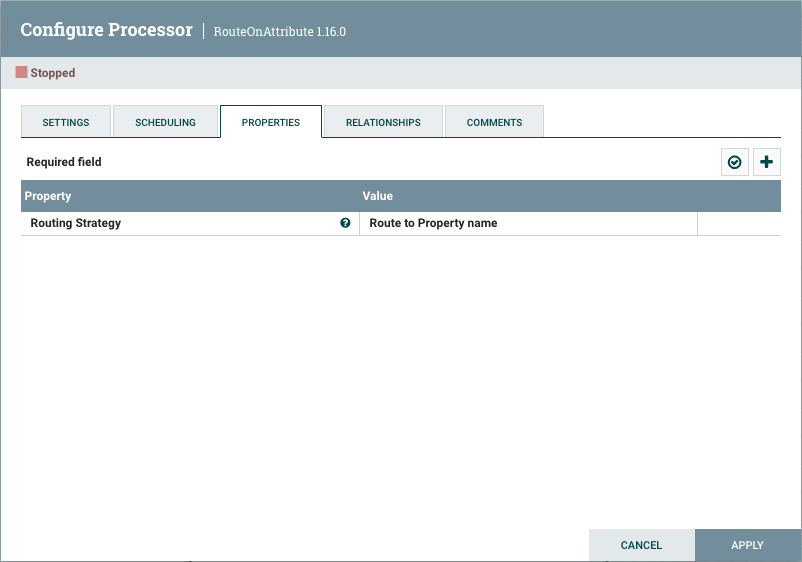
이 프로세서는 기본적으로 단일 속성을 가지고 있습니다: 'Routing Strategy'. 기본값은 'Route to Property name'입니다. 이름 *
이 속성의 이름은 작은 질문 표 기호입니다 (
 ). 이 도움말 기호는 사용자 인터페이스를 통해 다른 곳에서 볼 수 있으며 더 많은 정보를 사용할 수 있음을 나타냅니다.
마우스로 이 기호를 통해 Hovering은 속성과 기본 값에 대한 추가 정보를 제공 할뿐만 아니라
재산에 대한 설정 된 역사적인 값.
). 이 도움말 기호는 사용자 인터페이스를 통해 다른 곳에서 볼 수 있으며 더 많은 정보를 사용할 수 있음을 나타냅니다.
마우스로 이 기호를 통해 Hovering은 속성과 기본 값에 대한 추가 정보를 제공 할뿐만 아니라
재산에 대한 설정 된 역사적인 값.
속성에 대한 값을 클릭하면 DFM이 값을 변경할 수 있습니다. 재산에 허용된 값에 따라, 사용자는 값을 선택하거나 값을 입력하기 위해 드롭다운을 제공 중입니다.
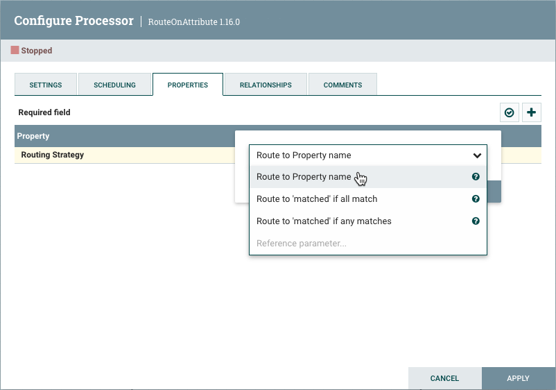
탭의 상단 오른쪽 모서리는 새로운 속성을 추가하기위한 버튼입니다. 이 버튼을 클릭하면 대화 상자를 사용하여 DFM을 제공 할 수 있습니다. 새로운 재산의 이름과 가치를 입력하십시오. 모든 프로세서는 사용자 정의 속성을 허용합니다. 그들을 허용하지 않는 프로세서에서, User-Defined 속성이 적용됩니다.
선택한 프로세서는 configurable Sensitive Value Status for User-Defined 속성을 지원합니다. 가공업자는 나타내야 합니다 configurable Sensitive Value 상태에 대한 지원, 그렇지 않으면 Sensitive Value 선택은 비활성화됩니다 속성 대화 상자를 추가하십시오.
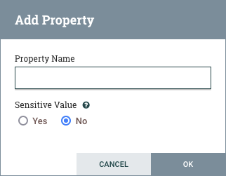
제품정보 Yes Sensitive Value 설정은 NiFi를 구축하여 속성 값을 처리합니다.
구성 persistence 및 Framework 작업에 대한 민감한. NiFi는 흐름을 저장할 때 Sensitive Values를 암호화합니다.
윤곽과 수출한 교류 정의에 있는 과민한 가치를 포함하지 않습니다.
RouteOnAttribute는 사용자 정의 속성을 허용하고 사용자가 속성을 추가 할 때까지 유효하지 않습니다.
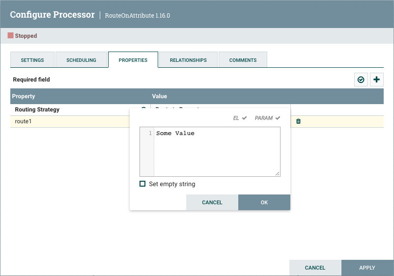
사용자 정의 속성이 추가 된 후, 아이콘이 그 행의 오른쪽에 나타납니다 ( ). 프로세서에서 User-Defined 속성을 제거할 수 있습니다.
일부 프로세서에는 고급 사용자 인터페이스 (UI)가 내장되어 있습니다. 예를 들어, UpdateAttribute 프로세서는 고급 UI가 있습니다. 고급 UI에 액세스하려면, "Advanced"버튼을 클릭하여 구성 프로세서 창의 하단에 나타납니다. 고급 UI가 있는 프로세서만 이 버튼이 있습니다.
일부 프로세서에는 컨트롤러 서비스와 같은 다른 구성 요소를 참조하는 속성이 있습니다. 예를 들어, GetHTTP 프로세서는 StandardSSLContextService 컨트롤러 서비스에 SSLContextService 속성을 가지고 있습니다. DFM이 이 속성을 구성하고 싶지만 아직 생성되지 않고 컨트롤러 서비스를 구성 할 때 아래 이미지에 묘사 된 것처럼 자리에 서비스를 만들 수있는 옵션을 가지고 있습니다. configuring Controller Services에 대한 자세한 내용은 관제사 서비스 이름 *
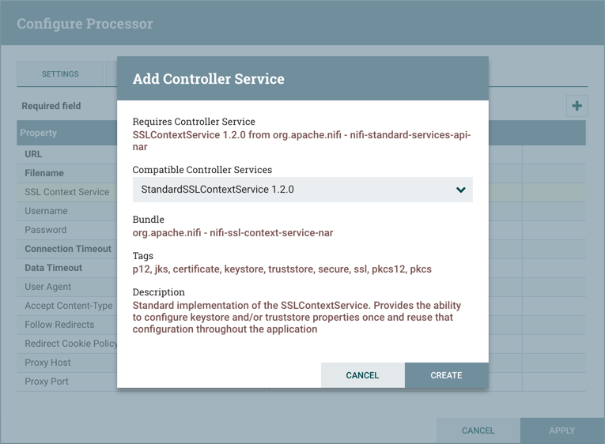
관계 탭
관계 탭은 'Automatically Terminate / Retry Relationships'섹션을 포함합니다. 프로세서에 의해 정의되는 관계의 각각은 여기에 나열되어 설명과 함께.
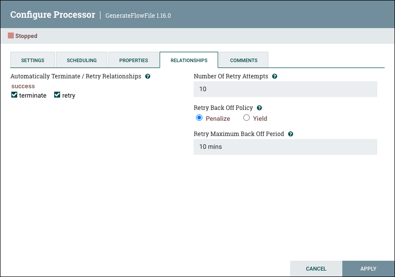
자동 종료
프로세서에 대한 유효성을 고려하고 실행 할 수 있도록, 프로세서에 의해 정의 된 각 관계는 다운 스트림 구성 요소 또는 자동 종료에 연결되어야한다. 관계가 자동 종료되면, 관계가 흐름에서 제거되고 처리가 전체로 간주됩니다. 다운스트림 부품에 이미 연결되는 관계는 자동 종료 될 수 없습니다. 관계는 먼저 사용하는 모든 연결에서 제거해야합니다. 또한, 자동 종료된 것으로 선정된 관계에 대해서는, 관계가 연결에 추가되는 경우 자동 종료 상태가 명확하게됩니다.
자동 Retry
사용자는 주어진 관계에 경로를 경로를 지정하거나 변경할 수 있습니다. FlowFile이 retried로 구성되는 관계에 경로를 지정하면 FlowFile은 re-queued 및 프로세서가 다시 처리하려고합니다. 프로세서가 FlowFile을 다시 복원할 수 있는 관계로 옮길 경우 (같은 관계가 있음) 또는 또 다른 경우, 다시 재조정됩니다, 수까지 사용자가 지정한 시간. 프로세서가 FlowFile을 retries의 지정된 번호 이후에 재시동할 수 있는 관계로 변환하면 FlowFile은 관계가 포함 된 연결 (s) - 또는 자동 종료, 구성으로. 프로세서가 FlowFile을 retried로 구성되지 않는 관계에 경로를 지정하면 즉시 해당 관계로 이동합니다.
예를 들어, 두 개의 관계가있는 프로세서를 고려하십시오. success 그리고 failure·
사용자 설정 failure 10배를 재기하는 관계는 또한 자동 종료에 형성됩니다. 이 글
경우에, 들어오는 FlowFile이 routed인 경우 failure 관계,
최대 10 회 재생됩니다. 10 시도 후, 경로가 있다면 failure 다시, 그것은 자동 종료 될 것입니다. 그러나 어떤 시점에서
오시는 길 success, 그것은 즉시 연결 (s)에 전송 될 것입니다 success 관계 및 더 이상 retried.
Retry Back Off 정책
FlowFile이 재생될 때, 사용자는 두 가지 옵션으로 백오프 정책을 구성할 수 있습니다.
-
Penalize - Retry 시도는 시간에 발생하지만 프로세서는 그동안 다른 FlowFiles를 처리하는 것을 계속합니다. 프로세서는 계속 실행됩니다, FlowFiles를 처리할 수 있습니다.
-
수율 - 프로세서는 설정 탭에서 구성 된 "Yield Duration"에 의해 다시 실행 할 예정되지 않습니다. 이것은 사용될 때 queue에 있는 자료의 순서를 유지하고 첫번째가 가공될 때까지 나중에 FlowFiles를 가공하지 않거나, 형성한 자료가 형성될 때 관계는 다른 데이터의 추가 처리가 성공하지 않다는 것을 나타냅니다.
Process Group 구성
Process Group을 구성하려면 Process Group을 마우스 오른쪽 클릭하고 선택하세요. Configure context 메뉴에서 옵션. 구성 대화 상자는 두 탭으로 열립니다: 일반 및 컨트롤러 서비스.
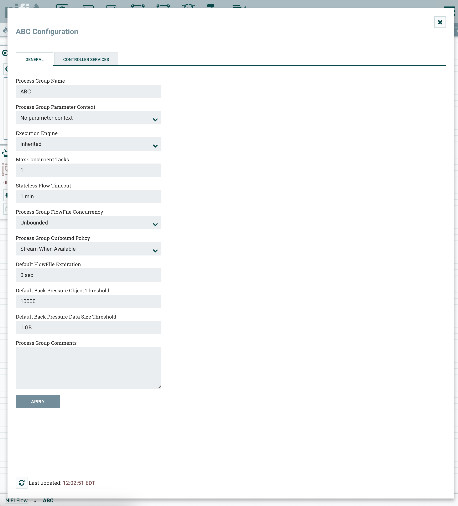
일반 탭
이 탭에는 여러 가지 구성 항목이 포함되어 있습니다. 첫번째는 Process Group 이름입니다. 이것은 캔버스에 Process Group의 상단에 표시된 이름 뿐 아니라 UI의 하단에 Breadcrumbs입니다. Root Process Group (i.e., 최고 수준의 그룹)의 경우 브라우저 탭의 제목으로 표시됩니다. 이 정보가 다른 NiFi 인스턴스에 표시됩니다. 즉, 원격 프로세스 그룹, a.k.a., 사이트맵).
다음 구성 요소는 유량의 구성 요소에 매개 변수를 제공하기 위해 사용되는 Process Group Parameter Context입니다. 이 드롭다운에서 사용자는 Parameter Context가 이 Process Group에 바인딩되어야 하고 Process Group에 바인딩하는 새로운 것을 선택할 수 있습니다. 더 많은 정보를 원하시면 이름 * 그리고 모수 Contexts.
다음 섹션은 Process Group이 실행할 예정된 방법을 결정하는 구성 요소를 제공합니다. 사이트맵 2개의 다른 실행 엔진을 지원합니다: 전통적인 실행 엔진 및 Stateless 실행 엔진. 또한, Execution Engine은 기본 동작인 parent Process Group에서 상속할 수 있습니다. 이름 * 엔진 실행 더 많은 정보.
다음 두 가지 요소, Process Group FlowFile Concurrency 및 Process Group Outbound Policy는 다음 섹션에 덮여 있습니다.
FlowFile 통화
FlowFile Concurrency는 Process Group에 데이터가 가져 오는 방법을 제어하는 데 사용됩니다. 유효한 3개의 선택권이 있습니다:
-
Unbounded (기본값)
-
Node 당 단일 FlowFile
-
Node 당 단일 배치
FlowFile Concurrency가 "Unbounded"로 설정되면 Process Group의 입력 포트는 데이터가 신속하게 수행됩니다. 다시 압력을 방지하지 않는 것을 제공 할 수 있습니다.
FlowFile Concurrency가 "Single FlowFile Per Node"로 구성되면 입력 포트는 한 번에 하나의 FlowFile을 허용합니다. FlowFile이 Process Group에 들어가면, 추가 FlowFiles가 Process Group을 남겼습니다. system/auto-terminated에서 제거되고, 출력 포트를 통해서 출구로 나가기 위하여. 이것은 종종 느린 성능에서 발생합니다. NiFi가 데이터를 처리하는 병렬화. 그러나 사용자가이 접근 방식을 사용 할 수있는 몇 가지 이유가 있습니다. 일반적인 사용 사례 각각의 들어오는 FlowFile은 디렉토리의 파일 목록과 같은 여러 다른 데이터 항목에 대한 참조를 포함합니다. 사용자는 할 수 있습니다 프로세스 그룹을 입력하기 위해 다른 데이터를 허용하기 전에 전체 목록을 처리합니다.
FlowFile Concurrency가 "Single Batch Per Node"로 구성될 때 입력 포트가 비슷하게 동작합니다. "Single FlowFile Per Node" 모드이지만 FlowFile이 혼잡할 때 입력 포트는 모든 데이터를 쿼리에 공급할 때까지 계속 입력 포트는 emptied. 그 시점에서 모든 데이터가 처리 완료 될 때까지 프로세스 그룹에 더 많은 데이터를 가져올 수 없습니다. 프로세스 그룹을 왼쪽 (see) Batch-Oriented 프로세스 그룹 연결).
| FlowFile Concurrency controls only when data will be pulled into the Process Group from the 입력 포트. 프로세서를 방지하지 않습니다. NiFi 외부에서 데이터를 섭취하는 프로세스 그룹. |
아웃바운드 정책
FlowFile Concurrency 은 프로세스 그룹에 데이터를 가져야 하는 방법을 결정하지만, Outbound Policy는 Process Group에서 데이터 흐름을 제어합니다. 유효한 2개의 유효한 선택권이 있습니다:
-
Stream 사용 가능 (기본값)
-
일괄 출력
아웃바운드 정책이 설정되면 "Stream when Available" 출력 포트에 도착하는 데이터는 프로세스 그룹에서 즉시 전송되며, 백업 압력이 적용되지 않습니다.
Outbound Policy가 "Batch Output"으로 구성되면 출력 포트는 Process Group에서 데이터를 전송하지 않습니다. Process Group의 모든 데이터는 출력 포트(i.e.e., 데이터가 처리 완료될 때까지 Process Group을 나타낸다.) 데이터가 모두 동일한 출력 포트에 할당되는지 여부는 중요하지 않습니다. 또는 일부 데이터가 출력 포트 A에 할당되면 다른 데이터가 최대 할당됩니다. 출력 포트 B에 대 한. 이 조건은 FlowFile 처리의 완료 측면에서 동일하게 간주됩니다.
FlowFile Concurrency와 함께 "Batch Output"의 아웃바운드 정책을 사용하여 "Single FlowFile Per Node"의 사용자가 단일 FlowFile을 쉽게 소화 할 수 있습니다.
(그 자체가 데이터의 배치를 표시 할 수 있음) 그런 다음 FlowFile의 모든 처리가 다음 단계로 계속하기 전에 완료 될 때까지 기다립니다
dataflow (i.e., Process Group 외의 다음 구성 요소). 또한, 이 모드를 사용할 때, 각 FlowFile은 Process Group에서 전송됩니다.
Process Group의 각 출력 포트의 "batch.output.<Port Name>"라는 속성의 시리즈를 부여합니다. 값은 FlowFiles의 숫자와 동일합니다.
이 데이터의 배치에 대한 출력 포트에 경로를했다. 예를 들어, 단일 FlowFile이 5 FlowFiles로 분할되는 경우를 고려하십시오. 두 FlowFiles는 출력 포트 A로 이동합니다.
출력 포트 B로, 2는 출력 포트 C로 이동, 및 FlowFiles는 출력 포트 D로 이동. 이 경우, 각각의 FlowFile은 속성이 있습니다. batch.output.A = 2,
batch.output.B = 1, batch.output.C = 2, batch.output.D = 0.
"Batch Output"의 아웃바운드 정책은 "Unbounded"의 FlowFile Concurrency와 함께 사용할 때 어떤 혜택을 제공하지 않습니다. 결과적으로 FlowFile Concurrency가 "Unbounded"로 설정되면 Outbound Policy가 무시됩니다.
Batch-Oriented 프로세스 그룹 연결
NiFi에 있는 일반적인 사용 케이스는 몇몇 배치 동쪽으로 향하게 한 과정을 실행하고 그 과정이 완료한 후에만, 자료의 동일한 배치에 다른 과정을 실행하는 것입니다.
NiFi는 자체 프로세스 그룹에서 이러한 프로세스의 각을 캡슐화함으로써 가능합니다. 첫번째 Process Group의 Outbound 정책은 "Batch Output"으로 구성되어야 합니다. FlowFile Concurrency는 Node당 "Single FlowFile Per Node" 또는 "Single Batch Per Node" 중 하나이어야 합니다. 이 구성으로, 첫번째 Process Group FlowFile Concurrency에 따라 하나의 FlowFile 또는 많은 FlowFiles가 될 데이터의 전체 배치를 처리 할 것입니다. 처리가 완료되면 데이터의 일괄 처리가 완료되면 모든 FlowFiles가 프로세스 그룹을 떠날 준비가 완료 될 때까지 데이터가 개최됩니다. 그 시점에서 데이터는 Process Group에서 일괄 처리로 전송할 수 있습니다. 이 구성 - Process Group이 "Batch Output"의 아웃바운드 정책으로 구성될 때 출력 포트는 "Single Batch Per Node"의 FlowFile Concurrency로 Process Group의 입력 포트에 직접 연결되며 약간 특별한 경우로 처리됩니다. 수신 프로세스 그룹은 입력 큐가 비어있을 때까지뿐만 아니라, 그들은 비어있을 때까지 및 소스 프로세스 그룹은 그 모든 데이터를 전송 Process Group의 배치. FlowFiles의 컬렉션을 통해 프로세스 그룹 간의 단일 배치 데이터로 전송할 수 있습니다. 다수 항구의 맞은편에 퍼집니다.
관광 명소
"Single FlowFile Per Node"의 FlowFile Concurrency를 사용할 때 두 개의 동굴이 있습니다.
첫 번째 입력 포트는 동일한 노드의 프로세스 그룹에서 데이터가 누락되지 않은 경우 Process Group에 데이터를 가져올 수 있습니다. 예를 들어, 5개의 노드 클러스터에서 동시에 처리되는 FlowFiles를 최대 5개까지 처리할 수 있습니다. 또한, 연결이 설정된 경우 부하 Balancing, 클러스터의 다른 노드로 데이터를 전송할 수 있습니다. FlowFile이 여전히 처리되는 동안 Process Group. 결과적으로 Load-Balanced Connections를 사용하지 않는 것이 좋습니다. "Unbounded" FlowFile Concurrency로 구성되지 않는 Process Group 내에서.
"배치 출력"의 아웃 바운드 정책을 사용할 때, 다시 압력을 고려하는 것이 중요합니다. 데이터가 전송되지 않는 경우 고려 모든 데이터가 처리 완료될 때까지 Process Group에서. 또한 출력 포트 A에 연결이 후면 압력 임계값이 있음을 고려 10,000 FlowFiles의 (기본값). 그 큐가 10,000의 임계값에 도달하면 업스트림 프로세서가 더 이상 트리거되지 않습니다. 결과적으로, 데이터는 처리 완료되지 않으며, 흐름은 deadlock에 종료되며 출력 포트가 처리 완료 될 때까지 실행되지 않습니다. 출력 포트가 실행될 때까지 프로세서가 실행되지 않습니다. 이를 피하기 위해 FlowFiles의 큰 숫자가 단일에서 생성 될 것으로 예상되는 경우 입력 FlowFile, 출력 포트에서 끝나는 연결에 대한 다시 압력이 그런 방법으로 구성된다는 것을 권장합니다. FlowFiles의 가장 큰 예상된 수 또는 그 연결에 대 한 뒤 압력은 모두 함께 사용 됩니다 (Back Pressure Threshold 0). 이름 * 뒤 압력 더 많은 정보.
연결의 기본 설정
Process Group 구성 대화의 최종 세 요소는 기본 FlowFile Expiration, Default Back Pressure Object Threshold 및
과태 뒤 압력 자료 크기 Threshold. 이 설정은 새로운 연결을 만들 때 기본 값을 구성합니다. 각 연결은 큐를 나타냅니다,
그리고 모든 큐는 FlowFile expiration, back pressure object count 및 back pressure data size에 대한 설정이 있습니다. 지정된 설정은 여기에 영향을줍니다.
Process Group 내에서 생성 된 모든 새로운 연결에 대한 기본 값; 기존 연결에 영향을 미치지 않습니다. Child Process Groups가 작성한
Configuration Process Group은 기본 설정을 상속합니다. 다시, 기존 프로세스 그룹은 영향을 미치지 않습니다. 이 옵션으로 overridden하지 않는 경우,
root Process Group은 기본 백압 설정을 얻습니다. nifi.properties, 그리고 "0 SEC"의 기본 FlowFile expiration (즉, 만료되지 않습니다).
| Default FlowFile Expiration 를 non-zero 값으로 설정하면 FlowFile expiring 의 시간 제한이 도달될 수 있습니다. |
구성 대화의 마지막 요소는 Process Group 댓글입니다. Process Group에 대한 유용한 정보를 추가하는 메커니즘을 제공합니다.
관제사 서비스
Process Group 구성 대화의 컨트롤러 서비스 탭은 Dataflows에 대한 컨트롤러 서비스 추가.
이름 *
민감한 속성을 포함하여 흐름의 속성의 값은 매개 변수를 사용하여 매개 변수화 될 수 있습니다. 매개변수는 NiFi UI 내에서 생성되고 구성됩니다. 어떤 재산든지 뒤에 오는 조건에 모수를 참조하기 위하여 형성될 수 있습니다:
-
과민한 재산은 Sensitive 모수만 참조할 수 있습니다
-
비 과민한 재산은 비 과민한 모수만 참조할 수 있습니다
-
Reference Controller Services가 매개변수를 사용할 수 없는 속성
-
매개변수는 보고 작업, 흐름 분석 규칙 또는 관리 관제사 서비스에서 참조될 수 없습니다
UI는 속성 값에 사용할 수 있는지 나타냅니다.
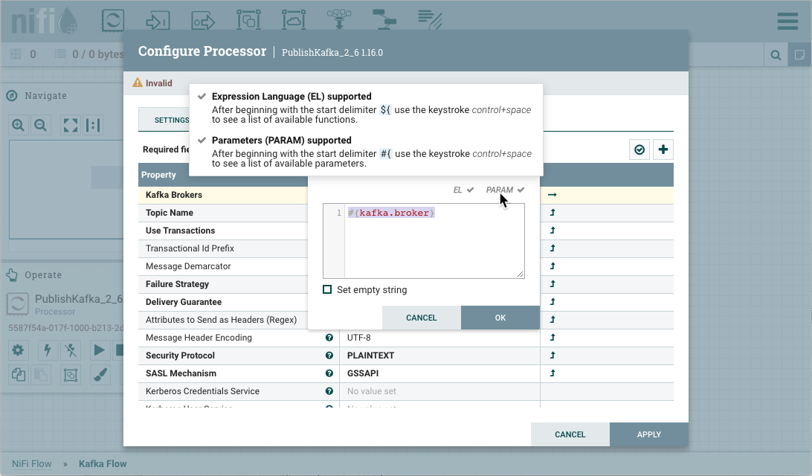
모수 Contexts
모수는 모수 Contexts 안에 창조됩니다. Parameter Contexts는 NiFi 인스턴스에 global/accessible 입니다. 액세스 정책은 매개 변수 Context에 적용 할 수 있습니다. 생성되면, 정책을 읽고 특정 매개 변수 Context에 쓰기도 할 수 있습니다 (see 접근 모수 더 많은 정보).
Parameter Context 만들기
Parameter Context를 만들려면 Global Menu의 Parameter Contexts를 선택하십시오.
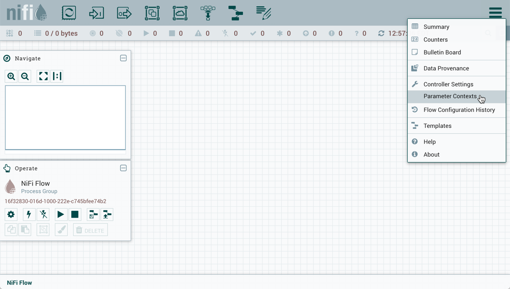
Parameter Contexts 창에서, 클릭 + 상단 오른쪽 모서리에 버튼 및 추가 매개 변수 Context 창이 열립니다. 창에는 두 개의 탭이 있습니다. 설정 및 매개 변수.
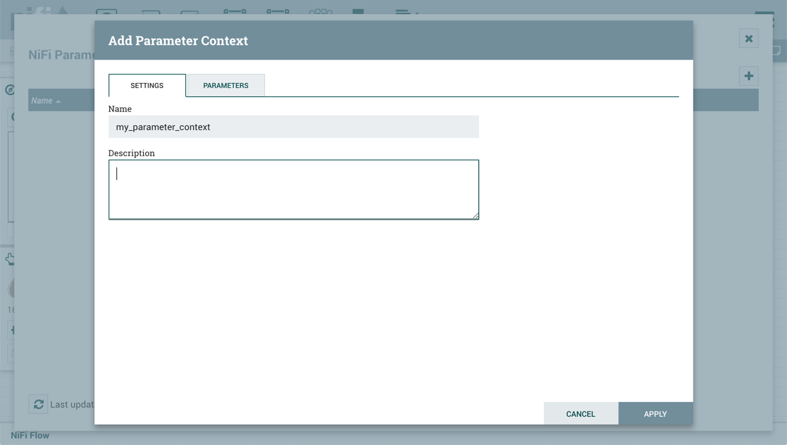
"Settings"탭에서 원하는 경우 Parameter Context 및 설명의 이름을 추가합니다. Parameter Context를 저장하거나 "Parameters"탭을 선택하여 매개 변수를 추가합니다.
매개변수 Context에 추가하기
모수는 모수 Context 창조 도중 추가되거나 기존하는 모수 Contexts에 추가될 수 있습니다.
Parameter Context 작성 중 "Parameters"탭을 선택하십시오. 자주 묻는 질문 + add 매개변수 창을 여는 단추.
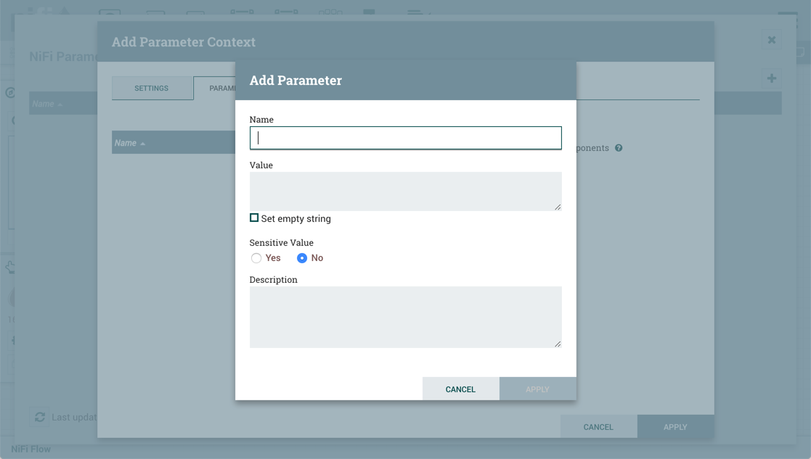
Parameter Context에 매개변수를 추가하려면 Parameter Context 창을 열고 Edit 버튼을 클릭하십시오 () 원하는 매개 변수 Context의 행에.
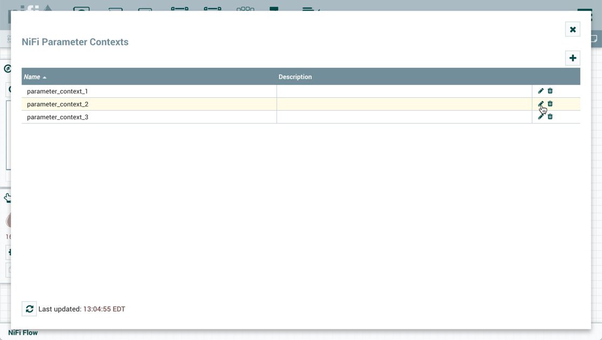
"Parameters"탭에서 클릭 + add 매개변수 창을 여는 단추.
Add Parameter 창에는 다음과 같은 설정이 있습니다.
-
이름 * - 모수를 denote하기 위하여 이용된 이름. 알파벳만 (a-z, A-Z, 0-9), hyphens ( - ), underscores ( ), periods ( . ), 공백이 허용됩니다.
-
주요 특징 - 모수가 참조될 때 사용될 가치. 매개 변수가 Expression Language를 사용하는 경우 Expression Language가 평가 될 것이 중요합니다. 매개변수를 참조하는 구성 요소의 상황에. 오시는 길 매개 변수 및 표현 언어 더 많은 정보를 위한 단면도.
-
빈 문자열을 설정 - 명시적으로 빈 문자열에 매개 변수의 값을 설정합니다. 기본적으로 체크하지 않습니다. (주의: 체크하지만 값이 설정되면 체크 박스가 무시됩니다.)
-
민감한 값 - 매개변수의 값이 민감한 것으로 간주되는 경우 "예"로 설정합니다. 민감한 경우 매개 변수의 값은 UI에서 한 번 적용되지 않습니다. 기본 설정은 "No". 과민한 모수는 비 과민한 재산에 의하여 과민한 재산 및 비 과민한 모수에 의해 참조될 수 있습니다. 매개 변수가 생성되면 감도 플래그가 변경 될 수 없습니다.
-
제품 설명 - 매개 변수가 무엇인지 설명하는 설명, 어떻게 사용되는지, 등. 이 분야는 선택적입니다.
이 설정이 설정되면 "Apply"을 선택합니다. Referencing 구성 요소는 현재 선택한 매개 변수에 의해 참조 된 구성 요소를 나열합니다. 추가 매개 변수 또는 기존 매개 변수를 편집합니다.
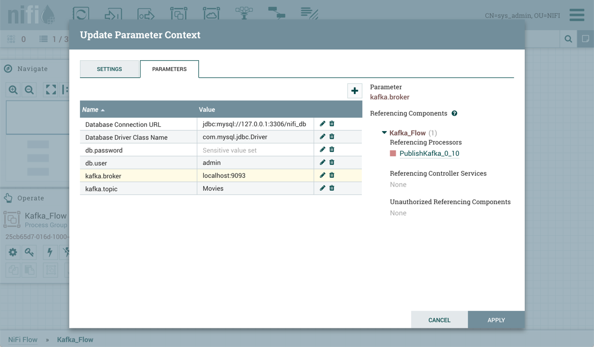
프로세스를 완료하려면 Parameter Context 창에서 "Apply"를 선택하십시오. 다음과 같은 작업은 추가 또는 수정 된 매개 변수를 참조하는 모든 구성 요소를 검증하기 위해 수행됩니다. 영향을받은 프로세서, Disabling/Re-enabling 영향 컨트롤러 서비스, Updating Parameter Context.
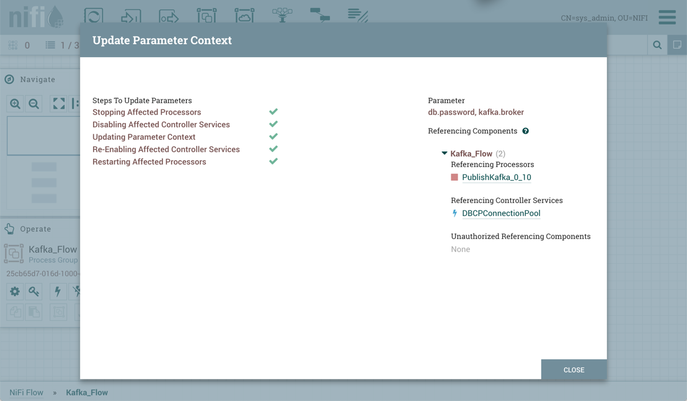
Referencing 구성 요소 섹션 이제 프로세스 그룹에 의해 조직 된 매개 변수 추가 / 편집 / 삭제 된 세트에 의해 참조 된 모든 구성 요소의 집계를 나열합니다.
매개 변수 및 표현 언어
Expression Language를 사용하는 매개 변수를 추가하면 Expression Language가 평가될 수 있는 context를 이해하는 것이 중요합니다. 표현은 항상 평가됩니다.
프로세서 또는 컨트롤러 서비스의 컨텍스트에서 매개변수를 참조합니다. 예를 들어, 이름을 가진 매개 변수가 있는 시나리오 Time 값이 추가됩니다. ${now()}·
Expression Language 결과가 평가될 때 시스템 시간을 결정합니다. 매개변수로 추가될 때, 시스템 시간은 매개변수가 추가될 때 평가되지 않습니다, 그러나 오히려 때
프로세서 또는 컨트롤러 서비스는 Expression을 평가합니다. 즉, 프로세서가 그 값이 설정된 속성이 있다면 #{Time} 그것은 속성의 경우 정확히 같은 방식으로 작용합니다.
값 설정 ${now()}. 재산이 참조되는 각 시간은, 다른 타임스탬프를 일으킬 것입니다.
또한 일부 속성은 Expression Language를 허용하지 않지만 Expression Language를 허용하지만 FlowFile 속성에 대한 표현을 평가하지 않습니다. 어떻게 이해하는지
이 작품은 매개 변수를 고려 File 그 값은 ${filename}. 그런 다음 세 가지 속성을 고려, 각각의 다른 표현 언어 범위와 플로우 파일 이름
· test.txt. 각 속성이 설정된 경우 #{File}, 그 후 테이블은 결과값을 보여줍니다.
| 구성 속성 값 | Expression 언어 범위 | 효과적인 재산 가치 | 지원하다 |
|---|---|---|---|
#{파일} |
FlowFile 속성 |
테스트.txt |
파일명은 다음과 같이 해결됩니다. |
#{파일} |
- 연혁 |
빈 문자열 |
FlowFile 속성은 범위가 아니며, "filename"이라는 JVM 수준에서 정의된 시스템 속성 또는 환경 변수가 없습니다. |
#{파일} |
이름 * |
${파일명} |
리터 텍스트 "${filename}"은 압축되지 않습니다. |
Process Group에 Parameter Context 할당
매개 변수를 참조하는 구성 요소의 경우 Process Group은 먼저 Parameter Context를 할당해야합니다. Process Group 내에서 할당된 프로세서 및 컨트롤러 서비스는 그 Parameter Context 내에서만 참조 매개 변수만 있을 수 있습니다.
Process Group은 하나의 Parameter Context만 지정할 수 있으며 주어진 Parameter Context는 여러 Process Group에 할당될 수 있습니다.
| 사용자는 사용자가 볼 수 있는 매개변수 Context of the Process Group to one of the Parameter Contexts that user has the view policy for. 또한 Parameter Context를 설정하려면 Process Group의 수정 정책이 있어야 합니다. 이름 * 접근 모수 더 많은 정보. |
Process Group에 Parameter Context를 지정하려면 Operate Palette 또는 Process Group context 메뉴에서 Configure를 클릭하십시오.
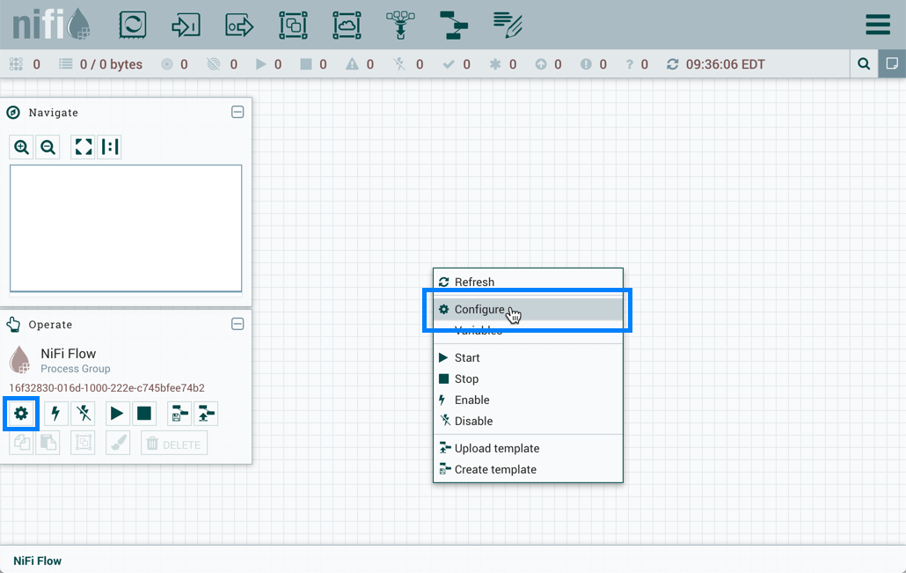
Flow Configuration 창에서 "General"탭을 선택하십시오. Process Group Parameter Context drop-down 메뉴에서 기존 Parameter Context를 선택하거나 새로운 것을 만듭니다.
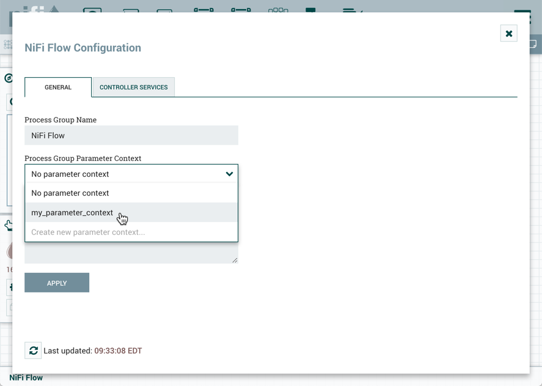
설정 변경을 저장하려면 "Apply"을 선택합니다. Process Group context 메뉴는 이제 지정된 Parameter Context에 대한 Update Parameter Context 창에 빠른 액세스를 허용하는 "Parameters" 옵션을 포함합니다.
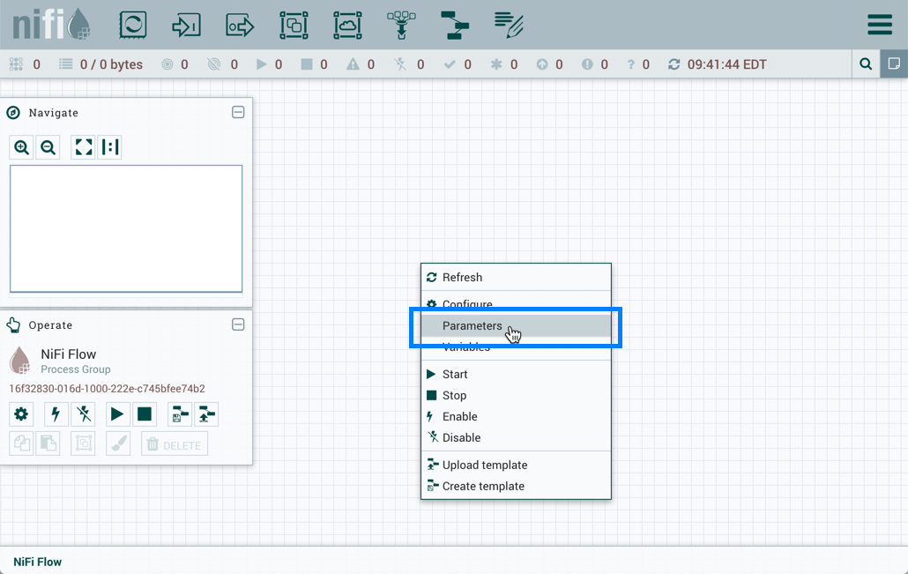
Process Group의 Parameter Context가 변경된 경우, Process Group의 모든 매개변수를 참조하는 모든 구성 요소가 종료되고 검증되고 재시작된 구성 요소는 이전에 실행되고 여전히 유효합니다.
| Parameter Context가 Process Group에서 설정되지 않은 경우, 이름 * 부모 Process Group의 Parameter Context를 상속합니다. 대신, 모수는 참조될 수 있습니다. 이미 매개 변수를 참조하는 모든 구성 요소는 유효하지 않습니다. |
Referencing 모수
모수 참고 Syntax
매개변수를 참조할 수 있는 권한을 구성하려면 # 시작으로 상징, curly braces에서 둘러싸인 매개 변수의 이름:
#{Parameter.Name}
이 추가를 사용하여 탈출 할 수 있습니다. # 처음에 문자. 이것을 설명하기 위해 매개 변수가 있음을 가정하십시오. abc 값이 있다. xxx 그리고 모수 def 값이 있다. yyy. 그런 다음 사용자 정의 속성 값은 이러한 효과적인 값으로 평가됩니다.
User-Entered 문학 재산 가치 |
효과적인 재산 가치 |
회사 소개 |
|
|
간단한 대변 |
|
|
추가적인 문학 자료를 가진 간단한 대변 |
|
|
추가적인 문학 자료를 가진 다수 대변 |
|
|
No { 매개변수 교체에 대한 } |
|
|
No { 매개변수 교체에 대한 } |
|
|
문학 해석을위한 탈출 된 # |
|
|
문학 해석을위한 탈출 된 #, 간단한 헌법에 따라 |
|
|
문학 해석을위한 탈출 된 #, 두 번 |
|
|
문학 해석을위한 탈출 된 #, 두 번, 간단한 헌법에 따라 |
|
예외는 재산 세트 가동에 던졌습니다 |
|
안에 매개변수를 참조할 때 Expression 언어, 모수 참고는 첫째로 평가됩니다. 예를 들어, 교체하기 xxx 이름 * zzz 제품정보 abc 모수:
${ #{abc}:replace('xxx', 'zzz') }
구성요소 설정 도중 매개변수를 만들고 창조하십시오
매개변수는 쉽게 당신의 교류에 있는 성분을 구성하기 때문에 참조되거나 창조될 수 있습니다. 예를 들어, 프로세스 그룹에 할당 된 매개 변수 Context "Kafka Settings"가 있습니다. "Kafka Settings"는 매개 변수를 포함 kafka.broker 그리고 kafka.topic1.
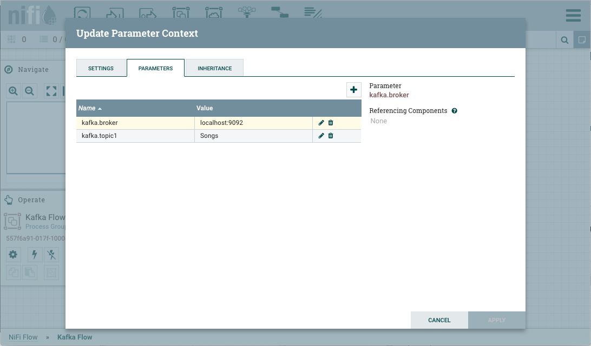
참고하기 kafka.broker PublishKafka 프로세서의 "Kafka Brokers" 속성에 대한 값으로 기본 값을 지우고 시작 delimiter와 새로운 항목을 시작합니다. #{. 다음 키 입력을 사용 control+space 유효한 모수의 명부를 보여주기 위하여:
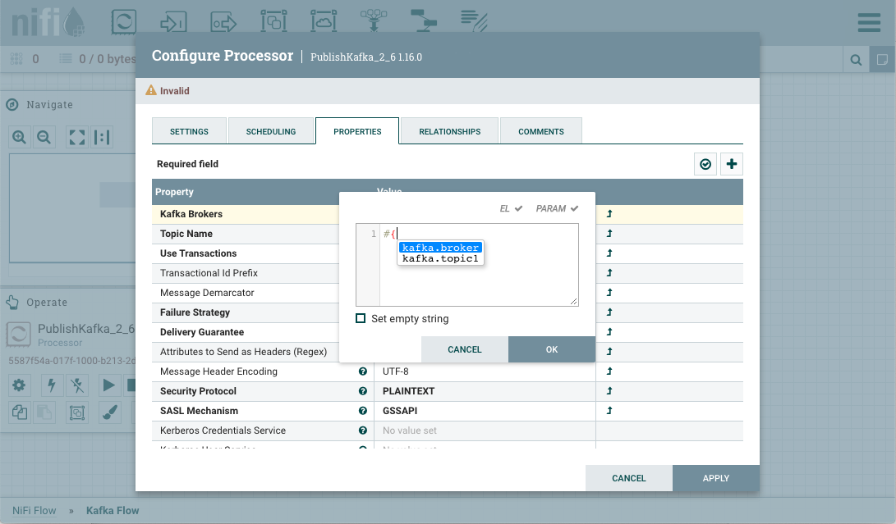
제품정보 kafka.broker 그리고 닫히는 curly brace를 가진 입장을 완료하십시오 }.
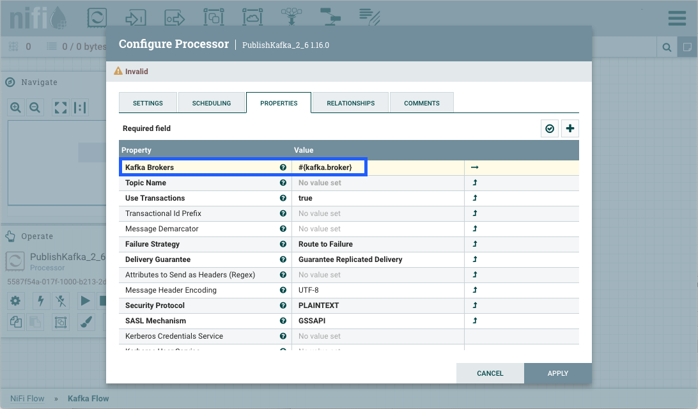
이 프로세스를 설명하는 도움말 텍스트는 Expression Language 및 Parameters eligibility Indicators를 통해 hovering 할 때 표시됩니다.
모수는 또한 비행에 창조될 수 있습니다. 예를 들어, "Topic Name" 속성에 대한 매개 변수를 만들려면 "Convert to Parameter" 아이콘을 선택하십시오 () 그 속성의 행. 이 아이콘은 사용자가 매개 변수 Context를 수정하기 위해 적절한 권한을 가지고 있다면만 사용할 수 있습니다. 접근 모수 더 많은 정보).
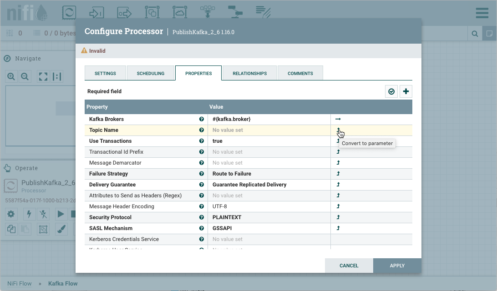
추가 매개변수 대화 상자가 열립니다. 원하는 새로운 매개 변수를 구성합니다.
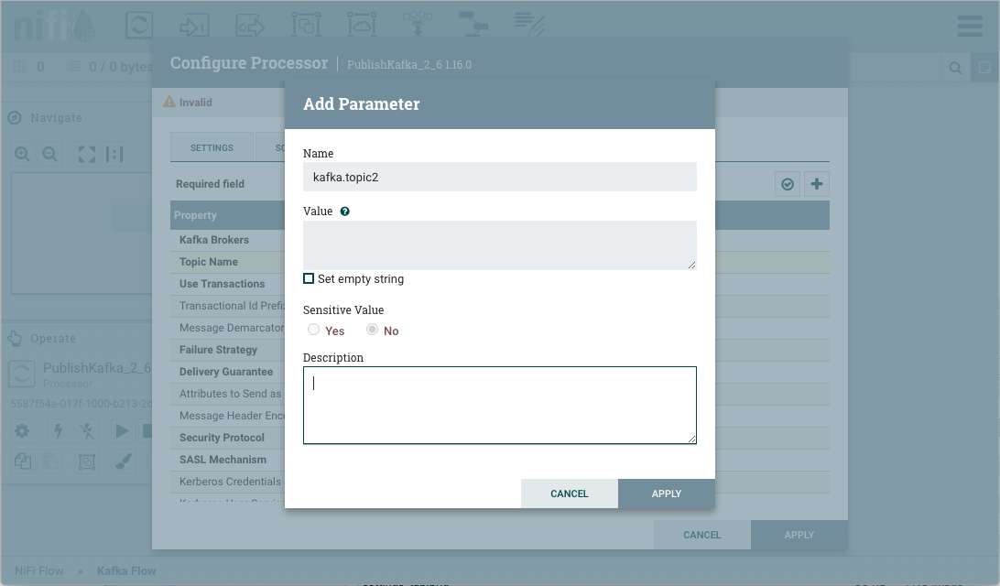
"Apply"을 선택하십시오. Process Group의 Parameter Context가 업데이트되고 새로운 매개 변수는 적절한 구문을 적용한 속성에 의해 자동으로 참조됩니다.
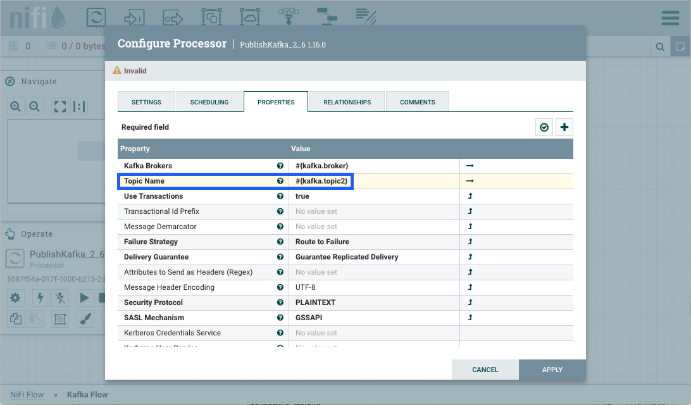
선택 가능한 속성 값은 참조 매개 변수도 할 수 있습니다. 이전에 설명 된 "Convert to Parameter" 메소드를 적용 할뿐만 아니라 옵션 "Reference 매개변수.."는 값 드롭다운 메뉴에서 사용할 수 있습니다.
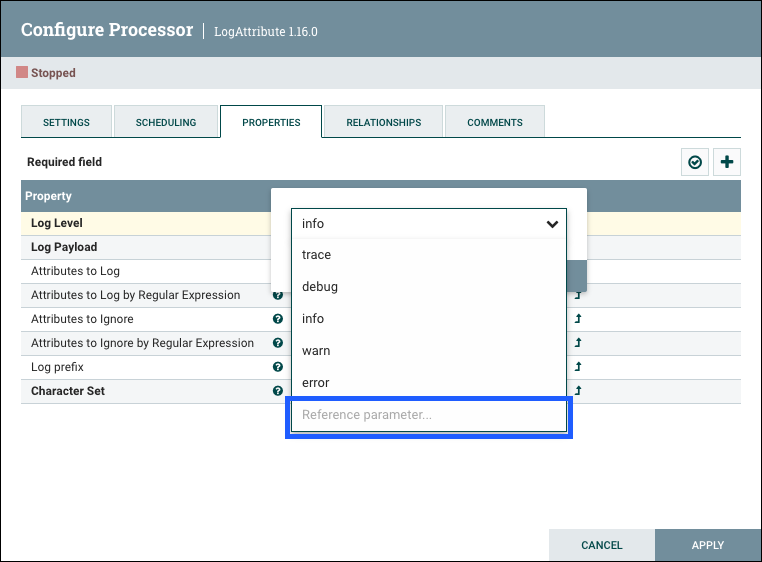
"Reference Parameter..."을 선택하면 컴포넌트의 프로세스 그룹과 사용자의 액세스 정책에 할당된 매개변수 컨텍스트에 의해 결정되는 유효한 매개 변수의 드롭다운 목록을 표시합니다.
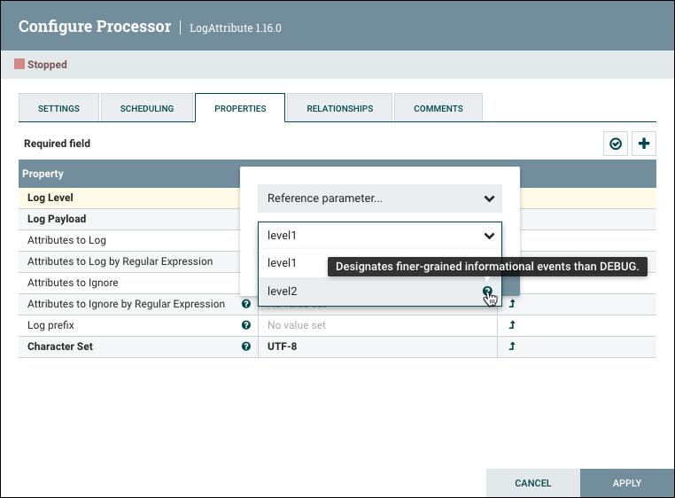
질문 표 아이콘을 통해 Hovering () 매개변수의 설명을 표시합니다.
Sensitive 속성과 매개 변수 사용
과민한 재산은 유일한 참고 과민한 모수일지도 모릅니다. 이것은 중요합니다. 관련 제품. 과민한 모수 자체의 가치는 흐름 레지스트리로 보내지 않을 것입니다, 재산은 과민한 모수를 참조한다는 사실. 더 많은 정보 보기 Versioned Flows의 매개 변수.
민감한 속성의 값은 단일 매개 변수 참조로 설정해야합니다. 예를 들어, 값 #{password}123 그리고 #{password}#{suffix} 할 수 없습니다. 제품정보 #{password}123 민감한 재산의 가치의 일부를 탐험 할 것입니다. 이것은 비 과민한 재산에, 가치와 같은 입니다 #{path}/child/file.txt 유효하다.
Parameter Value 참조
모수의 제품정보 자체는 다른 모수에 참고일지도 모릅니다. 매개변수의 값이 정확히 때 #{otherParameter} (or #{'Other Parameter'} alias의 유효값은 참고값으로 대체됩니다. alias의 유효값은 참고값으로 대체됩니다.
이것은 하나의 별칭입니다. 매개 변수의 값은 단일 참조가되어야하며 다른 점은 다음과 같습니다.jdbc://#{db_host}:3306) 또는 다수 참고 (#{a}#{b})는 aliases로 대우되지 않는 것과 같이 남아 있습니다.
참조 된 매개 변수는 경계 매개 변수 Context의 효과적인 범위에서 볼 수있는 매개 변수가 될 수 있습니다 : 동일한 Context에 정의 된 매개 변수, 다른 매개 변수 Context에서 상속 된 매개 변수 또는 매개 변수는 소스 모수 공급자. 참조 및 참조 된 매개 변수는 동일한 감도가 있어야합니다. 그렇지 않으면 참조는 해결되지 않습니다.
해결은 한 수준 깊은 수행 — 별명은 다음과 같습니다. 예를 들면, 만약 매개변수 A 값 #{B} 그리고 모수 B 값 #{C}, 다음 A 리터 값에 대한 해결 #{C}, 값이 아닌 C.
참조 된 매개 변수의 값 캐스케이드를 투명하게 업데이트 : 별명으로 구성된 구성 된 구성 요소는 영향을받는 구성 요소로 식별되며, 유효성 검사 및 매개 변수 Context 업데이트의 일부로 재시작하면, 직접 underlying 매개 변수를 참조했다.
illustrate에, 매개 변수를 가정 Shared 제품 설명 db_host 값으로 myserver.example.com, 및 모수 Context App 수상내역 Shared 그리고 alias 정의 host 값으로 #{db_host}. 가공업자 경계에 App 설정하기 #{host} 해결하기 myserver.example.com.
별칭 매개 변수 (App에서) |
참조 매개 변수 (공유) |
효과적인 재산 가치 |
|
|
|
|
|
|
|
|
|
모수 공급자
매개변수 공급자는 NiFi (e.g. HashiCorp Vault)에 외부 소스에 저장될 매개변수를 허용합니다. 매개변수 공급자의 모수는 모든 referencing 모수 Contexts에 fetched 그리고 적용될 수 있습니다.
Parameter Provider를 추가하려면 Global Menu에서 Controller Settings를 선택하십시오.
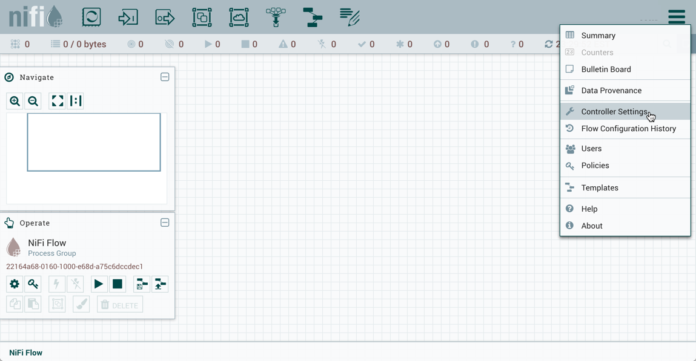
이것은 NiFi 설정 창을 표시합니다. Parameter Providers 탭을 선택하고 클릭 + 상단 오른쪽 모서리에있는 버튼은 새로운 매개 변수 공급자를 만듭니다.
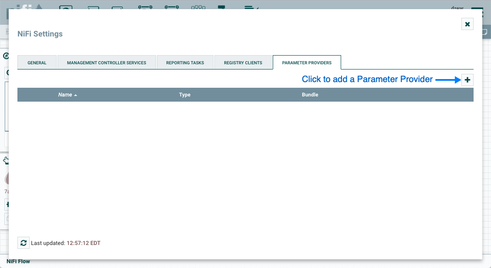
Parameter Provider 창을 엽니다. 이 창은 Add Processor 창과 유사합니다. 그것은 오른쪽 및 태그 클라우드에서 사용할 수있는 매개 변수 공급자의 목록을 제공합니다, 왼쪽에 매개 변수 공급자에 사용되는 가장 일반적인 카테고리 태그를 보여줍니다. DFM은 태그 클라우드에 태그를 클릭 할 수 있습니다. 매개 변수 공급자 목록을 원하는 범주에 맞게 축소합니다. DFM은 창의 오른쪽 상단에 필터 필드를 사용하여 원하는 매개 변수 공급자를 검색하거나 상단 왼쪽의 소스 드롭 다운을 사용하여 목록을 생성 한 그룹에 필터링합니다. 목록에서 매개 변수 공급자를 선택하면 DFM은 아래 공급자의 설명을 볼 수 있습니다. 원하는 매개 변수 공급자를 선택 하 고 추가를 클릭, 또는 단순히 두 번 클릭 공급자의 이름을 추가.
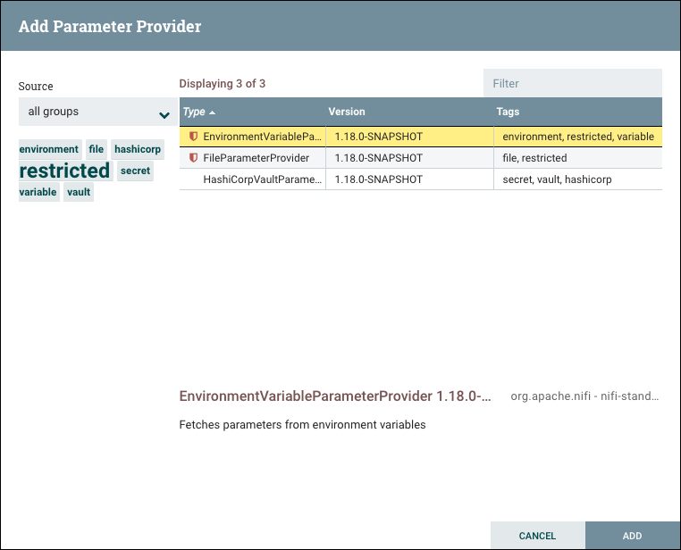
매개변수 공급자가 추가되면 DFM은 멀리 오른쪽 열에 "Edit"버튼을 클릭하여 구성 할 수 있습니다. 이 열의 다른 버튼은 "Fetch Parameters", "Remove"및 "Access Policies"를 포함합니다.
"View Details", "Usage", "Alerts"버튼을 클릭하여 매개 변수 공급자에 대한 정보를 얻을 수 있습니다.
DFM이 "Edit"버튼을 클릭하면 매개 변수 공급자 창이 열립니다. 세 개의 탭이 있습니다. 설정, 속성 및 댓글. 이 창은 구성 가공업자 창과 유사합니다. 설정 탭은 DFM의 위치를 제공하여 매개변수 공급자에게 고유한 이름을 부여합니다. 또한 UUID, Type 및 Bundle 정보를 제공 업체에 나열하고 매개 변수 공급자를 참조하는 다른 구성 요소 (예 : 매개 변수 컨텍스트)의 목록을 표시합니다. DFM은 각 설정에 대한 자세한 정보를 볼 수있는 질문 마크 아이콘을 통해 마우스를 hover 할 수 있습니다.
속성 탭은 매개변수 공급자를 위해 구성 될 수있는 다양한 속성을 나열합니다. DFM은 각 속성에 대한 자세한 정보를 볼 수있는 질문 마크 아이콘을 통해 마우스를 hover 할 수 있습니다.
댓글 탭은 오픈 텍스트 필드입니다. DFM은 공급자에 대한 의견을 포함 할 수 있습니다. 매개변수 공급자를 구성한 후, "Apply"을 클릭하여 구성을 저장하고 창을 닫거나 "Cancel"을 클릭하여 변경을 취소하고 창을 닫습니다.
매개변수 공급자에서 fetch 매개변수를 원할 때, "Fetch"버튼을 클릭하십시오 ().
접근 모수
매개 변수에 대한 사용자 권한은 다음 단계의 액세스 정책을 통해 관리됩니다.
-
모수 Context
-
프로세스 그룹
-
제품정보
| 액세스 정책을 구성하는 방법에 대한 추가 정보 액세스 정책 System Administrator의 가이드 섹션. |
Parameter Context 액세스 정책
Parameter Contexts를 볼 수 있는 사용자의 경우, "access the controller" view policy 또는 "access 매개변수 contexts" view policy에 추가해야 합니다. Parameter Contexts를 수정하려면 해당 수정 정책에 추가해야합니다. 이 정책은 Global Menu에서 "Policies"를 통해 액세스됩니다. 이름 * 글로벌 액세스 정책 System Administrator의 더 많은 정보를 위한 가이드 섹션.
| "access 매개변수 컨텍스트" 정책은 overridden이 없는 "access the controller" 정책에서 상속됩니다. |
정책 보기 및 수정은 개별 매개 변수 컨텍스트에 설정하여 사용자가 컨텍스트에 매개 변수를 추가할 수 있습니다. 글로벌 메뉴에서 "Parameter Contexts"를 선택하십시오. "Access Policies"버튼을 선택하십시오 () 원하는 매개 변수의 행에서 이러한 정책을 관리합니다.
이름 * 구성 요소 레벨 액세스 정책 System Administrator의 더 많은 정보를 위한 가이드 섹션.
Process Group 액세스 정책
사용자는 사용자가 볼 수 있는 매개변수 Context of the Process Group to one of the Parameter Contexts that user has the view policy for. 또한 Parameter Context를 설정하려면 Process Group의 수정 정책이 있어야 합니다. Process Group 액세스 정책은 Process Group을 강조하고 "Access Policies"버튼을 선택하십시오.) Operate 팔레트에서.
Component 액세스 정책
구성 요소의 매개 변수에 속성을 참조하거나, 사용자는 구성 요소에 대한 정책을보고 수정해야합니다. 이 정책은 사용자가 구성 요소의 프로세스 그룹에 정책을보고 수정 한 경우 상속되지만이 정책은 구성 요소 수준에 overridden 될 수 있습니다.
매개 변수를 수정하려면 사용자가 매개 변수를 참조하는 모든 구성 요소에 대한 정책을보고 수정해야합니다. 이 매개 변수를 변경하기 때문에 필요한 구성 요소가 중지 / 시작 및 그 작업을 수행하기 때문에, 사용자는 구성 요소의 동작을 수정합니다.
이름 * 구성 요소 레벨 액세스 정책 System Administrator의 더 많은 정보를 위한 가이드 섹션.
Expression Language로 Custom Properties 사용
FlowFile 속성을 참조하기 위해 NiFi Expression Language를 사용할 수 있으며 다른 값과 비교하여 데이터를 생성하고 구성할 때 값을 조작합니다. Expression Language에 대한 자세한 내용은 여기를 참조하십시오. Expression 언어 가이드.
FlowFile 속성, 시스템 속성 및 Expression 내의 환경 속성을 사용하는 것 외에도 Language, Expression Language 사용에 대한 사용자 정의 속성을 정의 할 수 있습니다. 사용자 정의 속성 정의 처리 및 처리 데이터 흐름에 더 많은 유연성을 제공합니다. 사용자 정의 속성을 만들 수 있습니다. 연결, 서버 및 서비스 속성을 위해 더 쉬운 dataflow 구성.
NiFi 속성은 사용자 정의 속성을 만들 때 알아야 할 해상도의 우선순위가 있습니다.
-
Processor-specific 속성
-
FlowFile 속성
-
FlowFile 속성
-
환경 (시스템 특성 및 운영 시스템 환경 변수)
관제사 서비스
컨트롤러 서비스는 작업, 흐름 분석 규칙, 프로세서 및 구성 또는 작업 실행을 위해 활용할 다른 서비스에 의해 사용될 수있는 공유 서비스입니다.
| 컨트롤러 서비스는 컨트롤러 레벨에 정의되어 작업, 흐름 분석 규칙 및 기타 서비스를보고하는 것이 제한됩니다. 데이터 흐름의 프로세서에 의해 사용 컨트롤러 서비스는 루트 프로세스 그룹 또는 하위 프로세스 그룹(s)의 구성에 정의되어야 합니다. |
| NiFi 인스턴스가 보안되면 컨트롤러 서비스를 볼 수 있는 능력은 귀하에게 할당된 권한에 따라 다릅니다. 하나 이상의 컨트롤러 서비스에 액세스 할 수없는 경우 UI에 액세스 할 수 없습니다. 액세스 권한은 글로벌 또는 컨트롤러 서비스 별에 할당 될 수 있습니다 (see Multi-Tenant Authorization에 UI 접근 더 많은 정보). |
Management Controller 서비스 추가
Management Controller Service를 추가하려면, Global Menu에서 Controller Settings를 선택합니다.
이것은 NiFi 설정 창을 표시합니다. 창에는 6개의 탭이 있습니다: 일반, 관리 관제사 서비스, 보고 작업, 교류 분석 규칙, Registry 클라이언트 및 모수 공급자. 일반 탭은 인스턴스의 전체 최대 스레드 수에 대한 설정을 제공합니다.
일반 탭의 오른쪽은 관리 컨트롤러 서비스 탭입니다. 이 탭에서 DFM은 클릭 할 수 있습니다. + 상단 오른쪽 코너의 버튼은 새로운 컨트롤러 서비스를 만듭니다.
추가 컨트롤러 서비스 창이 열립니다. 이 창은 Add Processor 창과 유사합니다. 그것은 오른쪽 및 태그 클라우드에서 사용할 수있는 컨트롤러 서비스의 목록을 제공합니다, 컨트롤러 서비스에 사용되는 가장 일반적인 카테고리 태그를 보여주는, 왼쪽. DFM은 태그 클라우드에 태그를 클릭 할 수 있습니다. 컨트롤러 서비스 목록에서 원하는 범주에 맞게. DFM은 창의 오른쪽 상단에 필터 필드를 사용하여 원하는 컨트롤러 서비스를 검색하거나 상단 왼쪽의 소스 드롭다운을 사용하여 만든 그룹에 의해 목록을 필터링합니다. 목록에서 컨트롤러 서비스를 선택하면 DFM은 아래 서비스의 설명을 볼 수 있습니다. 원하는 컨트롤러 서비스를 선택 하 고 추가를 클릭, 또는 단순히 두 번 클릭 서비스의 이름을 추가.
컨트롤러 서비스를 추가하면 "Configure"버튼을 클릭하여 구성할 수 있습니다. 먼 밝은 란. 이 열의 다른 버튼은 "Enable", "Remove"및 "Access Policies"를 포함합니다.

"Usage", "Comments"및 "Alerts"버튼을 클릭하여 컨트롤러 서비스에 대한 정보를 얻을 수 있습니다.
DFM이 "Configure"버튼을 클릭하면 컨트롤러 서비스 창이 열립니다. 세 개의 탭이 있습니다: 설정, 속성 및 댓글. 이 창은 구성 가공업자 창과 유사합니다.
설정 탭은 DFM의 위치를 제공하여 컨트롤러 서비스를 고유한 이름을 부여합니다. 또한 서비스용 UUID, Type, Bundle 및 Support 정보를 나열하고 서비스를 참조하는 다른 구성 요소 (관리 작업 또는 기타 컨트롤러 서비스)의 목록을 제공합니다.
마지막으로, Bulletin 레벨은 수정 될 수 있습니다. Controller Service가 로그에 쓸 때마다 Controller Service는 Bulletin을 생성합니다. 이 설정은 사용자 인터페이스에서 보이는 Bulletin의 가장 낮은 수준을 나타냅니다. 기본적으로 Bulletin 레벨은 WARN로 설정되며, 모든 경고와 오류 레벨의 게시판을 표시할 수 있습니다.
속성 탭은 특정 컨트롤러 서비스에 적용되는 다양한 속성을 나열합니다. 구성 프로세서와 마찬가지로 DFM은 각 속성에 대한 자세한 정보를 볼 수있는 질문 마크 아이콘을 통해 호버 할 수 있습니다.
댓글 탭은 오픈 텍스트 필드입니다. DFM은 서비스에 대한 의견을 포함 할 수 있습니다. 컨트롤러 서비스를 구성한 후, "Apply"을 클릭하여 구성을 저장하고 창을 닫거나 "Cancel"을 클릭하여 변경 사항을 삭제하고 창을 닫습니다.
Dataflows에 대한 컨트롤러 서비스 추가
Dataflow에 대한 컨트롤러 서비스를 추가하려면 Process Group을 클릭하고 구성을 선택하거나 Operate Palette에서 구성을 클릭합니다.
Operate Palette에서 캔버스에 선택하지 않고 구성을 클릭하면 Root Process Group의 Controller Service를 추가합니다. 그 Controller Service는 dataflow의 모든 배열 프로세스 그룹에 사용할 수 있습니다. 캔버스에서 Process Group을 선택하면 Operate Palette 또는 Process Group 컨텍스트 메뉴 중 구성을 클릭하면 해당 Process Group과 아래에서 정의된 모든 프로세서 및 컨트롤러 서비스에 서비스를 사용할 수 있습니다.
관제사 서비스를 추가하는 뒤에 오는 단계를 사용하십시오:
-
Operate Palette 또는 Process Group context 메뉴에서 구성을 클릭합니다. 이 프로세스 그룹 구성 창을 표시합니다. 창에는 두 개의 탭이 있습니다. 일반 및 컨트롤러 서비스. 더 보기 일반 탭 프로세스 그룹에 대한 일반 정보에 관한 설정입니다.
-
Process Group Configuration 페이지에서 Controller Services 탭을 선택합니다.
-
자주 묻는 질문
+추가 컨트롤러 서비스 대화 상자를 표시하는 버튼. -
원하는 컨트롤러 서비스를 선택하고 추가를 클릭합니다.
-
Configure 아이콘을 클릭하여 필요한 Controller Service 구성 작업을 수행합니다.) 오른쪽 열에.
Enabling/Disabling 관제사 서비스
Controller Service가 설정된 후, 실행하기 위해 사용해야 합니다. "Enable"버튼을 사용하여 이것을하십시오 () 컨트롤러 서비스 탭의 오른쪽 열에. 기존/런닝 컨트롤러 서비스를 수정하기 위해 DFM은 중지 / 비활성화해야 합니다. (모든 보고 작업 및 컨트롤러 서비스 참조). "Disable"버튼을 사용하여 이것을하십시오 (). 컨트롤러 서비스에 의해 참조되는 각 구성품을 사냥하는 것보다 DFM은 컨트롤러 서비스를 비활성화 할 때 중지 / 비활성화 할 수있는 능력을 가지고 있습니다. 관제사 서비스를 가능하게 할 때, DFM는 관제사 서비스 및 모든 referencing 성분 또는 시작/enable 단지 관제사 서비스 자체를 시작하는 선택권이 있습니다.
업무 보고
보고서 작업은 NiFi 인스턴스에서 일어나는 일에 대한 통계 보고서를 제공하는 배경에서 실행됩니다. DFM은 Controller Services 프로세스와 유사한 보고 작업을 추가하고 구성합니다. Reporting Task를 추가하려면 Global Menu에서 Controller Settings를 선택하십시오.
이것은 NiFi 설정 창을 표시합니다. Reporting Tasks 탭을 선택하고 클릭 + 오른쪽 상단 모서리의 버튼은 새로운 보고 작업을 만듭니다.
Add Reporting Task 창이 열립니다. 이 창은 Add Processor 창과 유사합니다. 그것은 오른쪽 및 태그 클라우드에서 사용할 수있는보고 작업 목록을 제공합니다, 왼쪽에보고 작업에 사용되는 가장 일반적인 카테고리 태그를 보여줍니다. DFM은 태그 클라우드의 모든 태그를 클릭하여보고 작업 목록을 원하는 범주에 맞게 축소 할 수 있습니다. DFM은 창의 오른쪽 상단에 필터 필드를 사용하여 원하는 보고 작업을 검색하거나 상단 왼쪽의 소스 드롭다운을 사용하여 만든 그룹에 의해 목록을 필터링합니다. 목록에서보고 작업을 선택하면 DFM은 아래 작업의 설명을 볼 수 있습니다. 원하는 보고 작업을 선택 하 고 추가를 클릭, 또는 단순히 두 번 클릭 서비스의 이름을 추가.
Reporting Task가 추가되면 DFM은 멀리 오른쪽 열에 "Edit"버튼을 클릭하여 구성 할 수 있습니다. 이 열의 다른 버튼은 "시작", "Remove", "State"및 "Access Policies"를 포함합니다.
"View Details", "Usage", "Comments"및 "Alerts"버튼을 클릭하여보고 작업에 대한 정보를 얻을 수 있습니다.
DFM이 "Edit"버튼을 클릭하면 작업 창이 열립니다. 세 개의 탭이 있습니다. 설정, 속성 및 댓글. 이 창은 구성 가공업자 창과 유사합니다. 설정 탭은 DFM의 위치를 제공하여보고 작업을 고유한 이름을 부여합니다. 또한 작업에 대한 UUID, Type 및 Bundle 정보를 나열하고 작업의 Scheduling Strategy 및 Run Schedule에 대한 설정을 제공합니다 ( 프로세서에서 동일한 설정으로). DFM은 각 설정에 대한 자세한 정보를 볼 수있는 질문 마크 아이콘을 통해 마우스를 hover 할 수 있습니다.
속성 탭은 작업을 구성 할 수있는 다양한 속성을 나열합니다. DFM은 각 속성에 대한 자세한 정보를 볼 수있는 질문 마크 아이콘을 통해 마우스를 hover 할 수 있습니다.
댓글 탭은 오픈 텍스트 필드입니다. DFM이 작업에 대한 의견을 포함 할 수 있습니다. Reporting Task 구성 후, "Apply"을 클릭하여 구성을 저장하고 창을 닫거나 "Cancel"을 클릭하여 변경 사항을 삭제하고 창을 닫습니다.
보고 작업을 실행하려면 "시작"버튼을 클릭하십시오 ().
Flow Analysis 규칙
유량 분석 규칙은 구성 요소 또는 (parts of) 흐름을 분석 할 수 있습니다. 최적의 유량 설계를 조정하거나 유지 할 수있는 규칙 위반을 일으킬 수 있습니다. 각 규칙은 Flow Analysis Rule 창에 설정할 수 있는 추천 또는 정책일 수 있습니다. 추천 유형 규칙의 규칙 위반은 나중에보고 볼 수 있지만 그렇지 않으면 기능에 영향을 미치지 않습니다. 정책 유형 규칙의 규칙 위반은 나중에보고보고 볼 수 있지만 또한 기능에 영향을 미칠 수 있습니다 : 정책이 잘못되고 남아있는 구성 요소 규칙 위반이 해결 될 때까지. DFM은 Controller Services 프로세스와 유사한 Flow Analysis Rules를 추가하고 구성합니다. Flow Analysis Rule을 추가하려면 Global Menu의 Controller Settings를 선택하십시오.
이것은 NiFi 설정 창을 표시합니다. Flow Analysis Rules 탭을 선택하고 클릭 + 오른쪽 상단 모서리의 버튼은 새로운 흐름 분석 규칙을 만듭니다.
Flow Analysis Rule 창을 엽니다. 이 창은 Add Processor 창과 유사합니다. Flow Analysis Rules에 사용되는 가장 일반적인 카테고리 태그를 보여주는 오른쪽 및 태그 클라우드에서 사용 가능한 Flow Analysis Rules의 목록을 제공합니다. DFM은 태그 클라우드의 모든 태그를 클릭하여 원하는 카테고리에 맞는 Flow Analysis Rules 목록을 축소 할 수 있습니다. DFM은 창의 오른쪽 상단에 필터 필드를 사용하여 원하는 유량 분석 규칙을 검색하거나 상단 왼쪽의 소스 드롭 다운을 사용하여 만든 그룹에 의해 목록을 필터링합니다. 목록에서 흐름 분석 규칙을 선택하면 DFM은 아래 규칙의 설명을 볼 수 있습니다. 원하는 흐름 분석 규칙을 선택하고 추가를 클릭, 또는 단순히 추가 서비스의 이름을 더블 클릭.
Flow Analysis Rule이 추가되면, DFM은 far-right 컬럼의 "Configure"버튼을 클릭하여 구성할 수 있습니다. 이 열의 다른 버튼은 "Enable", "Disable", "View Configuration", "Remove", "State"및 "Access Policies"를 포함합니다.
"View Details", "Usage", "Alerts"버튼을 클릭하여 Flow Analysis Rules에 대한 정보를 얻을 수 있습니다.

DFM이 "Configure"버튼을 클릭하면 Flow Analysis Rule 창이 열립니다. 세 개의 탭이 있습니다. 설정, 속성 및 댓글. 이 창은 구성 가공업자 창과 유사합니다. 설정 탭은 DFM의 위치를 제공하여 Flow Analysis Rule을 고유한 이름을 부여합니다. 또한 규칙에 대한 UUID, Type 및 Bundle 정보를 나열하고 유형 (등록 또는 정책)에 대한 설정을 제공합니다. DFM은 각 설정에 대한 자세한 정보를 볼 수있는 질문 마크 아이콘을 통해 마우스를 hover 할 수 있습니다.
속성 탭은 규칙을 구성 할 수있는 다양한 속성을 나열합니다. DFM은 각 속성에 대한 자세한 정보를 볼 수있는 질문 마크 아이콘을 통해 마우스를 hover 할 수 있습니다.
댓글 탭은 오픈 텍스트 필드입니다. DFM은 규칙에 대한 의견을 포함 할 수 있습니다. Flow Analysis Rule을 구성한 후, "Apply"을 클릭하여 구성을 저장하고 창을 닫거나 "Cancel"을 클릭하여 변경을 취소하고 창을 닫습니다.
Flow Analysis Rule을 활성화하려면 "Enable"버튼을 클릭하십시오 ().
Flow Analysis Rule을 활성화하려면 "Disable"버튼을 클릭하십시오 (). 규칙을 비활성화하여 모든 대응 위반 null과 void를 렌더링합니다.
연결 부품
프로세서 및 기타 구성 요소가 캔버스에 추가되면 다음 단계가 연결됩니다. NiFi는 처리 된 후 각 FlowFile을 수행하는 것을 알고 있습니다. 이것은 창조에 의해 수행된다 각 성분 사이 연결. 사용자가 구성 요소의 중심 위에 마우스를 뒤집을 때, 새로운 연결 아이콘 ( )는 나타납니다:
사용자는 두 번째 구성 요소가 강조 될 때까지 하나의 구성 요소에서 다른 연결 거품을 드래그합니다. 사용자 정의 마우스를 해제, 'Create Connection' 대화 상자가 나타납니다. 이 대화 상자는 두 탭으로 구성됩니다: 'Details' 및 'Settings'. 그들은 아래에서 논의. 같은 프로세서에 다시 반복하므로 연결을 그릴 수 있습니다. 이것은 일 수 있습니다 DFM이 프로세서를 원하면 실패 관계로 이동하면 FlowFiles를 다시 처리하려고합니다. 반복의 이 유형을 창조하기 위하여 연결, 단순히 연결 거품을 멀리 드래그하고 같은 프로세서로 다시 강조 될 때까지. 다음 마우스를 해제 그리고 같은 'Create Connection' 대화 상자가 나타납니다.
세부사항 탭
'Create Connection' 대화 상자의 세부 탭은 구성 요소 이름을 포함하여 소스 및 대상 구성 요소에 대한 정보를 제공합니다, 구성 요소 유형 및 프로세스 그룹은 구성 요소가 생명을 불어 넣습니다.
또한, 이 탭은 이 연결에 포함해야 하는 관계가 선택하는 능력을 제공합니다. 적어도 하나 관계는 선택해야 합니다. 1개의 관계만 사용할 수 있는 경우에, 그것은 자동적으로 선정됩니다.
| 여러 연결이 동일한 관계에 추가되면, 관계에 경로를 갖는 FlowFile 자동으로 '클래드'이며, 복사는 해당 연결의 각각에 전송됩니다. |
계정 설정
설정 탭은 연결의 이름을 구성하는 기능을 제공합니다, FlowFile Expiration, Back Pressure Thresholds, Load Balance Strategy and Prioritization:

연결 이름은 선택 사항입니다. 지정하지 않은 경우, 연결에 표시된 이름은 연결에 능동적 인 관계의 이름입니다.
FlowFile 만료
FlowFile expiration는 적시 유행에서 가공될 수 없는 자료가 교류에서 자동적으로 제거될 수 있는 개념입니다.
예를 들어, 데이터의 볼륨이 원격 사이트에 전송 될 수있는 볼륨을 초과 할 때 유용합니다.
이 경우, 만료는 우선 순위 데이터를 보장하기 위해 Prioritizers와 함께 사용될 수 있습니다.
처음 처리하고 특정 기간 내에 처리 할 수없는 경우 (예를 들어 1 시간) 떨어질 수 있습니다. 만료 기간은 NiFi 인스턴스에 입력된 데이터를 기준으로 합니다. 다른 단어에서 주어진 연결에 대한 파일 만료가 '1 시간'으로 설정되고 NiFi 인스턴스에서 1 시간의 연결에 도달 한 파일이 만료됩니다. 기본값
가치의 0 sec 데이터가 결코 만료되지 않는다는 것을 나타냅니다. '0 SEC' 이외의 파일 만료가 설정되면, 작은 시계 아이콘이 연결 라벨에 나타납니다. 그래서 DFM은 캔버스에 흐름을 볼 때 at-a-glance를 볼 수 있습니다.
뒤 압력
NiFi는 Back Pressure의 두 가지 구성 요소를 제공합니다. 이 임계 값은 얼마나 많은 데이터를 표시해야
커넥션의 소스가 더 이상 실행할 수 없습니다 구성 요소의 앞에 큐에 존재할 수 있습니다.
이 시스템은 데이터로 오버런을 방지 할 수 있습니다. 제공되는 첫 번째 옵션은 "Back Pressure object 임계 값"입니다.
압력이 적용되기 전에 큐에 있을 수 있는 FlowFiles의 수입니다. 두 번째 구성 옵션
"Back 압력 데이터 크기 임계 값입니다." 이 데이터의 최대 양을 지정합니다 (크기에서) 이전에 할당되어야한다
뒤 압력을 적용하십시오. 이 값은 데이터 크기에 따라 숫자를 입력하여 구성됩니다 (B 바이트를 위해, KB 제품정보
킬로바이트 MB megabytes의 경우, GB gigabytes 또는 TB terabytes의 경우).
기본적으로 각 새로운 연결이 추가되면 기본 Back Pressure Object Threshold가 발생합니다. 10,000 objects 및 Back Pressure Data Size의 위협 1 GB·
이 기본값은 적절한 속성을 수정하여 변경할 수 있습니다. nifi.properties의 장점 파일.
|
다시 압력이 활성화되면, 작은 진전 막대가 연결 라벨에 나타납니다, 그래서 DFM은 캔버스에 흐름을 찾고 때 그것을 볼 수 있습니다. queue 비율에 근거를 둔 진도 막대기 변화 색깔: 녹색 (0-60%), 황색 (61-85%) 및 빨강 (86-100%).
막대기에 마우스를 밀어 정확한 비율을 표시합니다.
큐가 완전히 풀 때, 연결은 빨간색으로 강조됩니다.
부하 Balancing
Load Balance 전략
클러스터의 노드의 흐름에 데이터를 배포하려면, NiFi는 다음과 같은 로드 밸런스 전략을 제공합니다:
-
짐 균형 없음: 클러스터의 노드 사이에 잔액 FlowFiles를 로드하지 마십시오. 기본값입니다.
-
속성에 의해 파티션: 사용자가 지정한 FlowFile Attribute의 값에 따라 주어진 FlowFile을 보내는 노드를 정의합니다. Attribute의 동일한 값이 있는 모든 FlowFiles는 클러스터에서 동일한 노드로 전송됩니다. 대상 노드가 클러스터에서 분리되거나 통신 할 수없는 경우 데이터는 다른 노드에 실패하지 않습니다. 데이터는 다시 노드를 기다리고 있습니다. 또한 노드가 참여하거나 클러스터가 데이터의 잔량에 부합하는 경우, 일관된 해싱은 모든 데이터의 중복을 방지하기 위해 적용됩니다.
-
둥근 robin: FlowFiles는 라운드로빈 패션 클러스터에서 노드로 배포됩니다. 노드가 클러스터에서 분리되거나 노드와 통신할 수없는 경우, 데이터는 노드가 다른 노드(s)에 자동으로 redistributed됩니다. 노드가 클러스터의 빠른 다른 노드로 데이터를 수신할 수 없으면 노드가 하나나 건너날 수도 있습니다. 클러스터에 걸쳐 데이터 배포의 처리량을 극대화하기 위해 더 반복.
-
단일 노드: 모든 FlowFiles는 클러스터에서 단일 노드로 전송됩니다. 어떤 노드는 설정할 수 없습니다. 노드가 클러스터에서 분리되거나 노드와 통신할 수없는 경우 노드에 할당되는 데이터는 노드가 다시 사용할 때까지 누락될 때까지 유지됩니다.
| UI 설정 외에도, 클러스터 노드 속성 Load balancing과 관련해서 구성되어야 합니다. nifi.properties의 장점. |
| NiFi는 재시작을 통해 클러스터에 있는 노드를 주장합니다. 노드가 연결될 때까지 데이터의 적분을 방지합니다. 클러스터가 종료되고 노드가 백업되지 않을 경우, 사용자는 UI의 "Cluster" 대화 상자를 통해 클러스터에서 노드를 제거 할 책임이 있습니다. Nodes 관리 더 많은 정보). |
짐 균형 압축
로드밸런싱을 선택한 후, 사용자가 클러스터에서 노드를 전송할 때 데이터를 압축해야 할지 여부를 구성할 수 있습니다.
뒤에 오는 압축 선택권은 유효합니다:
-
압축하지 마십시오: FlowFiles는 압축되지 않습니다. 기본값입니다.
-
Compress 속성만: FlowFile 속성은 압축되지만 FlowFile 내용이 아닙니다.
-
속성 및 콘텐츠 압축: FlowFile 속성 및 내용이 압축됩니다.
회사연혁
탭의 오른쪽은 더 높은 우선 순위 데이터가 되기 때문에 큐에 데이터를 우선 순위화 할 수있는 능력을 제공합니다 가공된 첫번째. Prioritizers는 상단 ('Available Prioritizers')에서 바닥 ('Selected Prioritizers')로 끌 수 있습니다. 다수 우선권은 선정될 수 있습니다. 'Selected Prioritizers' 목록의 상단에있는 우선 순위가 가장 높습니다. 이름 * 두 개의 FlowFiles가 이 우선 순위에 따라 동일한 값을 가지고 있다면, 두 번째 우선 순위는 결정할 것입니다. 첫번째로 가공하는 FlowFile, etc로. 우선 순위가 더 이상 원하지 않는 경우, 다음에서 끌 수 있습니다 '선택 우선 순위표 'Available Prioritizers' 목록.
다음 우선 순위는 다음과 같습니다.
-
퍼스트 인퍼터: 연결에 도달 한 두 개의 FlowFiles를 먼저 처리됩니다.
-
가장 새로운 FlowFileFirstPrioritizer: 두 FlowFiles를 제공, dataflow에서 가장 최신 하나는 먼저 처리됩니다.
-
가장 오래된FlowFileFirstPrioritizer: dataflow에서 가장 오래된 두 FlowFiles를 먼저 처리한다.
-
우선 순위AttributePrioritizer: 주어진 두 FlowFiles, "priority"라는 속성은 추출됩니다. 가장 낮은 우선 순위 값이 먼저 처리됩니다.
-
UpdateAttribute 프로세서가 "priority" 속성을 FlowFiles에 추가하기 위해 사용되어야합니다.
-
그 속성만 있다면 먼저 갈 것이다.
-
"priority" 속성에 대한 값은 "a"가 "z"와 "1" 전에 "9" 이전의 알파벳이 될 수 있습니다.
-
"priority" 속성은 긴, unicode 문자열 주문으로 파싱 할 수 없습니다. 예를 들어 : "99"및 "100"은 "99"로 FlowFile이 처음 제공되지만 "A-99"와 "A-100"은 "A-100"을 사용하여 FlowFile을 정렬합니다.
-
우선순위가 선택되지 않거나 선택한 우선순위는 비교된 FlowFiles 사이에서 차별화되지 않습니다. 처리 순서는 더 지정되지 않습니다 그러나 NiFi의 버전 사이에서 변화할지도 모르다 구현 세부사항.
| 으로 Load Balance 전략 구성, 연결에는 로컬 큐에 노드 당 큐가 있습니다. 우선 순위는 각 큐에 데이터를 독립적으로 분류합니다. |
연결이 더 많은 FlowFiles가 있을 때 nifi.queue.swap.threshold, 새로운 FlowFiles 그 연결에 도착
활성 큐에 대해 사전에 통보되지 않습니다, 대신 그들은 교환에 직접 전송됩니다. 그들은 그들이 그 때의 앞에 있을 것이라
메모리로 돌아가기.
|
구성 및 컨텍스트 메뉴 옵션 변경
연결이 두 가지 구성 요소 사이에 그려지면 연결의 구성이 변경 될 수 있으며 연결은 새로운 목적지로 이동 할 수 있습니다. 그러나 연결의 측면에 프로세서는 구성이나 목적지 변경 전에 중단되어야합니다.
연결의 구성을 변경하거나 다른 방법으로 연결과 상호 작용하려면 연결에 마우스 오른쪽 버튼으로 클릭하여 연결 컨텍스트 메뉴를 엽니다.
다음 옵션은 다음과 같습니다:
-
제품 설명: 이 옵션은 사용자가 연결의 구성을 변경할 수 있습니다.
-
본문 바로가기: 이 옵션은 한 번에 연결 통계 정보의 그래픽 표현을 엽니다.
-
회사 소개: 이 옵션은 처리될 수 있는 FlowFiles의 큐를 나열합니다.
-
본문 바로가기: 이 옵션은 캔버스에 연결의 소스와 목적지 구성 요소 사이에 긴 거리가 있다면 유용합니다. 이 옵션을 클릭하면 캔버스의 전망이 연결의 소스로 이동합니다.
-
오시는 길: "Go to source" 옵션과 마찬가지로이 옵션은 캔버스의 대상 구성 요소에 대한보기를 변경하고 두 개의 연결된 구성 요소 사이에 긴 거리가있는 경우 유용합니다.
-
오시는 길: 이 옵션은 다른 경우 캔버스의 앞에 연결됩니다 (다른 연결과 같은) 그것을 겹쳐 쌓입니다.
-
빈 큐: 이 옵션은 DFM을 통해 처리될 수 있는 FlowFiles의 큐를 명확하게 할 수 있습니다. 이 옵션은 특히 테스트 중 유용 할 수 있습니다. DFM이 큐에서 데이터를 삭제하는 것에 대해 우려하지 않을 때. 이 옵션이 선택되면 사용자는 큐에 데이터를 삭제하려는 것을 확인해야합니다.
-
기타 제품: 이 옵션은 DFM이 두 가지 구성 요소 사이의 연결을 삭제할 수 있습니다. 연결의 양쪽에 구성 요소가 멈추어지고 연결이 삭제되기 전에 빈해야합니다.
가공업자 Validation
프로세서를 시작하기 전에 프로세서의 구성이 유효하다는 것을 확인하는 것이 중요합니다. 상태 표시기는 프로세서의 왼쪽에 표시됩니다. 프로세서가 잘못된 경우, 표시 노란색 경고 표시 표시 표시 표시 표시 표시를 표시할 것입니다:
이 경우 마우스를 가진 지표 아이콘을 통해 hovering은 유효성 검사를 보여주는 툴팁을 제공합니다. 프로세서의 오류. 유효성 검사 오류가 발생하면 상태 표시가 변경됩니다. Stop 아이콘으로, 프로세서가 유효하며 시작될 준비가되었지만 현재는 실행되지 않습니다.
사이트맵
NiFi의 1개의 인스턴스에서 또 다른 한개에 자료를 보낼 때, 사용될 수 있는 많은 다른 의정서가 있습니다. 이름 * 프로토콜은 NiFi Site-to-Site Protocol입니다. Site-to-Site는 안전하고 효율적으로 데이터 전송/ 노드에서 데이터를 전송하는 것이 쉽습니다. 하나의 NiFi 인스턴스 또는 데이터는 다른 NiFi 인스턴스 또는 기타 consuming 애플리케이션에서 노드에 애플리케이션을 생성합니다.
Site-to-Site를 사용하여 다음 혜택을 제공합니다.
-
설정하기
-
원격 NiFi 인스턴스/ 클러스터의 URL(s)를 입력한 후, 사용 가능한 포트(endpoints)는 드롭다운 목록에서 자동으로 발견되고 제공됩니다.
-
-
제품정보
-
Site-to-Site는 선택적으로 데이터를 암호화하고 인증 및 권한 부여를 제공하기 위해 인증서의 사용을 만듭니다. 각 항구는 형성될 수 있습니다 특정 사용자만 허용하고, 그 사용자는 포트가 존재하는 것을 볼 수 있습니다. 인증서 구성에 대한 정보, 자세히보기 보안 설정 의 단면도 시스템 관리자의 가이드.
-
-
확장 가능
-
원격 클러스터의 노드로, 이러한 변경은 자동으로 감지되고 데이터는 클러스터의 모든 노드를 가로지르는 것입니다.
-
-
제품 정보
-
Site-to-Site는 FlowFiles의 일괄 처리가 한 번에 전송하여 연결의 오버 헤드를 방지하고 여러 작업을 수행 할 수 있습니다. 동료 간의 왕복 요청.
-
-
제품 정보
-
Checksums는 발송인과 수신기 둘 다에 의해 자동적으로 생성되고 자료가 전달된 후에 비교해, 순서에서 손상이 발생하지 않도록하십시오. checksums가 일치하지 않는 경우, 거래는 단순히 취소되고 다시 시도됩니다.
-
-
자동 로드 균형
-
노드가 온라인 또는 원격 클러스터에서 떨어지거나, 노드의 로드가 heavier 또는 라이터가 되고, 지시된 데이터의 양 노드가 자동으로 조정됩니다.
-
-
FlowFiles는 속성을 유지
-
FlowFile이 이 프로토콜을 통해 전송되면 FlowFile의 속성의 모든 것 자동으로 전송됩니다. 이것은 많은 상황에서 매우 유리 할 수 있습니다, 모든 컨텍스트와 enrichment NiFi 여행의 한 인스턴스에 의해 결정 된 데이터, 데이터의 쉬운 여정 및 사용자가 허용 쉽게 데이터를 검사합니다.
-
-
옵션 정보
-
새로운 기술과 아이디어가 등장함에 따라 Site-to-Site 통신을 처리하기위한 프로토콜이 변경 될 수 있습니다. 연결이 될 때 Remote NiFi 인스턴스로 만들어진 Handhake는 프로토콜과 프로토콜의 버전이 사용 될 것이라고 협상하기 위해 수행됩니다. 이것은 여전히 모든 이전 인스턴스와 백워드 호환성을 유지하면서 새로운 기능을 추가 할 수 있습니다. 또한 취약점이 있다면 또는 부족은 프로토콜에서 발견되지 않습니다, 그것은 프로토콜의 손상된 버전에 대한 NiFi의 새로운 버전을 허용.
-
Site-to-Site는 두 개의 NiFi 인스턴스 사이의 프로토콜 전송 데이터입니다. 두 끝은 독립 NiFi 또는 NiFi 클러스터일 수 있습니다. 이 섹션에서, NiFi 인스턴스는 통신을 시작 Site-to-Site 클라이언트 NiFi 인스턴스 다른 끝으로 Site-to-Site 서버 NiFi 인스턴스 각 NiFi 인스턴스에 필요한 구성을 명확하게 합니다.
NiFi 인스턴스는 Site-to-Site 프로토콜을 위한 클라이언트와 서버 둘 다 있을 수 있지만, 특정 Site-to-Site 통신 내에서 클라이언트 또는 서버일 수 있습니다. 예를 들어, 3 NiFi 인스턴스 A, B 및 C가있는 경우. B에 데이터를 푸시하고 B는 C에서 데이터를 끌어냅니다. A - 푸시 → B ← 풀 - C. 그리고 B는 뿐만 아니라 계정 관리 A와 B 간의 통신뿐만 아니라 회사 소개 에서 B와 C.
NiFi 인스턴스가 클라이언트 또는 서버가 데이터 흐름을 설계하고 각 인스턴스를 구성하는 것을 이해하는 것이 중요합니다. 다음은 데이터 흐름 방향을 기반으로 한 어떤 구성 요소가 실행되는 요약입니다.
-
푸시: 클라이언트 제품정보 원격 프로세스 그룹에 데이터, 서버 이름 * 입력 포트로
-
잡아당기기: 클라이언트 이름 * Remote Process Group의 데이터, 서버 제품정보 출력 포트를 통해 데이터
Site-to-Site 클라이언트 NiFi 인스턴스 구성
원격 프로세스 그룹: Site-to-Site를 통해 원격 NiFi 인스턴스와 통신하기 위해서는 간단히 드래그 원격 프로세스 그룹 캔버스에, 원격 NiFi 인스턴스의 URL(s)을 입력합니다 ( Remote Process Group의 구성 요소에 대한 자세한 내용은 참조) 원격 프로세스 그룹 전송 이 가이드의 단면도.) URL은 그 인스턴스의 사용자 인터페이스 또는 클러스터의 경우, 클러스터 노드의 URL을 사용할 수 있는 동일한 URL입니다. 이 시점에서, 당신은 같은 방법으로 원격 프로세스 그룹에서 연결을 드래그 할 수 있습니다 또는 프로세서 또는 로컬 프로세스 그룹에서 연결. 연결을 드래그하면 포트가 연결되는 것을 선택할 수 있습니다. 원격 프로세스 그룹을 위해 1 분까지 걸릴 수 있으므로 포트가 사용할 수 있는지 결정하십시오.
연결이 Remote Process Group에서 출발하는 경우, 표시된 포트는 원격 그룹의 출력 포트가 될 것입니다. 이로 인해 원격 인스턴스에서 데이터를 끌어올릴 수 있습니다. 대신 Remote Process Group에 종료하면 표시된 포트는 원격 그룹의 입력 포트가 될 것입니다. 즉, 원격 인스턴스에 데이터를 푸시 할 것입니다.
| 원격 인스턴스가 보안 데이터 전송을 사용하도록 구성되면 인증된 포트만 볼 수 있습니다. 교통안내 NiFi 설정에 대한 정보는 안전하게 실행됩니다. 시스템 관리자의 가이드. |
교통 프로토콜: Remote Process Group 생성 또는 구성 대화상자에서 다음 이미지와 같이 Site-to-Site 통신을 사용할 수 있습니다.
기본적으로, 설정 사이트맵 전용 포트를 사용하여 원시 소켓 통신을 사용합니다. HTTP 정보 수송 의정서는 특히 먼 경우에 유용합니다 NiFi 인스턴스는 HTTP(S) 프로토콜을 통해 액세스하거나 특정 HTTP 프록시 서버에서만 접근할 수 있는 제한적인 네트워크에 있습니다. HTTP Proxy Server, BASIC 및 DIGEST 인증을 통해 액세스 할 수 있습니다.
Local Network 인터페이스: 일부 경우에, 다른 한 개의 네트워크 인터페이스를 선호하는 데 바람직 할 수있다. 예를 들어 유선 인터페이스와 무선 경우 인터페이스 모두 존재, 유선 인터페이스는 선호 될 수있다. 이 상자에 사용하기 위해 네트워크 인터페이스의 이름을 지정하여 구성할 수 있습니다. 만약에 입력 값은 유효하지 않습니다, Remote Process Group은 유효하지 않으며이 해결 될 때까지 다른 NiFi 인스턴스와 통신하지 않습니다.
Site-to-Site Server NiFi 인스턴스 구성
사이트 맵: NiFi가 안전하게 실행되는 경우, 다른 NiFi 인스턴스에 대한 주문에서 정보를 검색하려면 Global Access "retrieve site-to-site details" policy에 추가해야합니다. 이것은 다른 인스턴스가 이름, 설명, 사용 가능한 동료 (노드를 클러스터링 할 때), 통계, OS 포트 정보 및 사용 가능한 입력 및 출력 포트와 같은 세부 사항을 쿼리 할 수 있습니다. 보안된 인스턴스의 입력 및 출력 포트를 활용하면 다음과 같은 추가 정책 구성이 필요합니다.
입력 포트: 다른 NiFi 인스턴스를 사용하여 로컬 인스턴스에 데이터를 푸시 할 수 있도록하려면 간단히 드래그 할 수 있습니다. 입력 포트 당신의 화포의 뿌리 과정 그룹에. 포트의 이름을 입력 한 후, 흐름에 추가됩니다. 이제 입력 포트에서 마우스 오른쪽 버튼으로 클릭하고 포트에 사용되는 concurrent 작업의 이름과 숫자를 조정할 수 있습니다.
아이 Process Group의 Site-to-Site의 입력 포트를 만들려면 포트의 이름을 입력하고 드롭다운 메뉴에서 수신 "Remote Connection (site-to-site)"를 선택하십시오.
Site-to-Site가 안전하게 실행되도록 구성되면 입력 포트의 "receive data via site-to-site" 구성 요소 액세스 정책을 관리해야합니다. 정책에 추가 된 사용자 만 포트와 통신 할 수 있습니다.
산출 항구: 입력 포트와 마찬가지로 DataFlow Manager는 추가 할 수 있습니다. 산출 항구 루트 프로세스 그룹에. 출력 포트는 지정된 NiFi 인스턴스를 원격으로 연결하여 출력 포트에서 데이터를 끌어냅니다. 캔버스에 출력 포트를 드래그 한 후, 오른쪽 클릭하고 이름을 조정하고 여러 동시 작업을 허용하는 구성을 선택합니다. 출력 포트의 "receive data via site-to-site" 컴포넌트 액세스 정책을 관리하여 사용자가 구성한 인스턴스에서 데이터를 끌어낼 수 있는 권한이 있습니다.
아이 Process Group의 Site-to-Site의 출력 포트를 생성하려면 포트의 이름을 입력하고 Send To drop-down 메뉴에서 "Remote Connection (site-to-site)"를 선택하십시오.
NiFi의 다른 인스턴스 외에도 일부 애플리케이션은 NiFi 인스턴스에서 데이터를 푸시하거나 수신하기 위해 Site-to-Site 클라이언트를 사용할 수 있습니다.
| NiFi 인스턴스에서 Site-to-Site를 활성화하고 구성하는 방법에 대한 자세한 내용은 Site-to-Site 속성 의 단면도 시스템 관리자의 가이드. |
| 액세스 정책을 구성하는 방법에 대한 자세한 내용은 액세스 정책 의 단면도 시스템 관리자의 가이드. |
예 Dataflow
이 섹션은 dataflow를 구축해야 하는 단계를 설명했습니다. 지금, 모두 함께 넣어. 다음 예제 dataflow 단지 두 개의 프로세서로 구성 : GenerateFlowFile 및 LogAttribute. 이 프로세서는 일반적으로 테스트에 사용됩니다, 그러나 그들은 또한 사용할 수 있습니다 데모 목적으로 빠른 흐름을 구축하고 행동에 NiFi를 참조하십시오.
GenerateFlowFile 및 LogAttribute 프로세서를 캔버스에 드래그하고 (위의 가이드 라인을 사용), 다음과 같이 구성 :
-
FlowFile 생성
-
스케줄링 탭에서, 실행 일정을 설정: 5 SEC. GenerateFlowFile 프로세서는 많은 FlowFiles를 매우 빠르게 만들 수 있음을 참고하십시오. 이 흐름은 시스템 NiFi가 실행되지 않도록 런 일정을 설정하는 이유입니다.
-
속성 탭에서, 파일 크기를 설정: 10 KB
-
-
로그인하기
-
설정 탭에서 Auto-terminate 관계 아래에서, 성공 옆에 체크 박스를 선택하십시오. 이 프로세서가 성공적으로 처리 한 후 FlowFiles를 종료합니다.
-
설정 탭에서도 Bulletin 레벨을 Info로 설정합니다. 이 방법, dataflow가 실행될 때, 이 프로세서는 Bulletin 아이콘을 표시합니다 (see 프로세서의 Anatomy) 및 사용자는 프로세서가 로깅하는 속성을 볼 수있는 마우스를 통해 hover 할 수 있습니다.
-
dataflow는 다음과 같습니다.
이제 dataflow를 시작하고 중지하는 방법에 다음 섹션을 참조하십시오. Dataflow가 실행되면 각 프로세서의 얼굴에 표시된 통계 정보를 참고해야 합니다. 프로세서의 Anatomy).
엔진 실행
NiFi는 2개의 다른 실행 엔진을 지원합니다: 전통과 Stateless.
Execution Engine은 주어진 Process Group 내의 컴포넌트가 어떻게 실행되는지 결정합니다. 2개의 실행 엔진은 많은 방법에서 다릅니다. 각에는 자체 프로와 단점이 있으며, NiFi와 같은 플로우 개발자는 개별 프로세스 그룹에 사용할 수 있는 실행 엔진을 구성할 수 있습니다. 이 섹션은 두 모델 사이의 차이를 강조합니다.
전통적인 실행 엔진
전통적인 실행 엔진은 기본값입니다. 전통적인 엔진으로, Process Group 내의 각 구성품은 독립적으로 예정되어 있습니다. Queues는 가공업자와 각 가공업자 사이 완충기 자료에 이용됩니다 다른 프로세서의 queue 안에 데이터를 독립적으로 운영합니다. 주어진 큐 내에서 거주하는 데이터는 NiFi가 재시작되는 경우 NiFi가 재시작되는 경우, 데이터가 복원될 것입니다. 재시작하기 전에 재편한 경우
Stateless 실행 엔진
Process Group이 Stateless Execution Engine을 사용하도록 구성되면 전체 프로세스 그룹은 프로세서와 훨씬 더 유사합니다. Process Group은 Concurrent Tasks의 지정된 수를 부여합니다. 각 Concurrent Task는 흐름의 전체 실행을 책임집니다. 소스 프로세서 (즉, 처리 그룹 내에서 프로세서가 들어오지 않는 연결이 없습니다) 한 번 실행에 트리거됩니다. 어떤 입력이 있는 경우 Process Group의 포트는 단일 FlowFile을 실행하고 가져올 수있는 기회를 가질 것입니다. 그 시점에서 흐름은 모든 방법을 실행합니다. 완료, if possible*, 추가 데이터가 흐름에 가져 오기 전에.
* 일부 시나리오에서 dataflow는 추가 데이터에 가져오지 않고 완료할 수 없습니다. 예를 들어, MergeContent Processor는 추가 입력이 필요할 수 있습니다. 진행하기 전에. 이 경우, 소스 구성 요소가 진행 될 때까지 다시 트리거 할 수 있습니다.
Stateless 그룹 내에서 큐에 의존하는 데이터는 지속되지 않습니다. 결과적으로, NiFi가 재시작되면, 데이터가 재편화되지 않습니다. 재시작하기 전에. 대신 Stateless 그룹이 잃어버린 데이터. 이것은 아래의 논의 될 몇 가지 흥미로운 기회를 제공합니다, in Stateless vs Standard Execution Engine을 사용할 때.
비교 및 대비
이제 우리는 다른 실행 엔진의 역할의 전반적인 이해를 가지고, 우리는 비교하고 실행 엔진의 각각이 다릅니다 어떻게 대조 몇몇 중요한 기능의 각각에서.
관련 기사
전통적인 엔진은 각 가공업자를 개별적으로 계획합니다. 하나의 프로세서는 5 분마다 한 번 실행 할 수 있으며 다른 프로세서가 실행 될 예정 가능한 한 빨리, 8 동시 작업을 사용. 프로세서 사이의 큐의 기본 작업은 다른 속도로 작동하기 위해 프로세서를 허용하는 것입니다. 소스가 있다면 목적지보다 빠른 실행, 구성 된 backpressure 임계 값이 도달 할 때까지 데이터를 쿼리 할 것입니다. 그런 다음, 소스는 데이터를 생산 중지하므로 목적지 잡을 수있는 기회가 있습니다. 너무 많은 FlowFiles가 누락되면 FlowFiles (i.e., 속성 등)은 Java heap을 배출하기 위해 디스크로 교환됩니다. 이 접근법은 파이프라인을 통해 처리의 각 단계에 dedicate하는 많은 자원에 대한 흐름 개발자에게 매우 정밀한 곡물 통제를 줍니다.
반면, Stateless Engine은 시작부터 끝까지 전체 흐름을 실행하기 위해 단일 스레드를 사용합니다. 소스 구성 요소는 흐름에 데이터를 가져 가기 위해 먼저 트리거됩니다. FlowFile이 흐름에 가져 가면 데이터가 모든 데이터에서 작동 할 때까지 트리거 된 큐의 목적지. 대부분의 시간, 이것은 단일 가공업자의 invocation. 흐름의 다음 프로세서는 그 후 실행에 트리거됩니다. queues가 무시되는 모든 backpressure. FlowFiles는 결코 디스크에 스왑. 그러나, 이것은 일반적으로 우려가 아닙니다, 한 번에 단일 FlowFile은 일반적으로 흐름에 처리됩니다.
Execution Engine을 구성하면 Process Group에 사용할 수 있지만, Flow Developer는 Stateless Engine을 사용하는 Concurrent Tasks의 최대 수를 지정할 수 있습니다. 값이 N로 설정되면 1보다 더 큰 상태없는 흐름의 N 사본이 동시 실행됩니다. 교류의 각 사본을 위해, 근원 성분은 방아쇠를 당기고, 그 후에 선에 있는 다음 가공업자, 등. N이 1보다 큰 경우, 처리 데이터에 사용되는 유량의 각 프로세서의 N 사본이있을 것입니다. 견적 요청 프로세서가 내부적으로 물건을 저장해야 하는 경우, MergeContent와 같은, 흐름의 각 사본은 내부 상태의 별도 사본이 있습니다. 결과적으로 MergeContent가 구성되는 경우 최소 1,000개의 FlowFiles를 병합하고 흐름은 8개의 Concurrent Tasks로 실행되며, 8개의 FlowFiles의 각각은 총 7,992개의 FlowFiles를 위한 최대 999개의 FlowFiles가 있습니다. 모든 데이터를 merging. 따라서, 흐름 디자이너는 진행하기 전에 몇 가지 조건을 기다리는 프로세서와 함께 Stateless Engine을 사용할 때주의해야합니다.
Stateless Flows는 연속적으로 실행되지 않는 소스 프로세서를 포함 할 수 있습니다. 예를 들어, GetFile Processor는 흐름의 첫 번째 프로세서가 될 수 있습니다. 욕망은 프로세서를 실행할 수 있습니다 5 분마다 한 번만. 이것은 프로세서가 개별적으로 예약되지 않기 때문에 일을 보완 할 수 있습니다. 그 끝에 모든 소스 프로세서는 종종 그들이해야하는 방법을 결정하기 위해 검사됩니다. 예약 어떤 구성 요소는 가장 작은 실행 일정 (즉, 가장 빠른 예정) 자주 Stateless 흐름을 계획하는 방법을 결정합니다. 예를 들어, 거기에 있다면 ListFile Processor는 매 분마다 한 번씩 실행하도록 구성된 ListS3 Processor와 각 분마다 한 번 실행하도록 구성된 ListS3 Processor를 매 분마다 실행할 수 있습니다.
Stateless Engine을 사용할 때 Timer-Driven Scheduler는 항상 사용됩니다. CRON 스케줄링은 이 시간에 Stateless 흐름을 지원하지 않습니다. CRON 스케줄링이 원하는 경우, 종종 충분합니다. CRON 구동 프로세서를 위한 전통 엔진을 사용하려면 Stateless Process Group에 연결하십시오.
전통적인 엔진은 각 개별 프로세서의 런타임을 구성할 수 있습니다. 이것은 종종 크게 성능 향상. Stateless 흐름을 사용할 때 사용할 수 없습니다. 상태없는 유량은 유량에 사용되는 프로세서에 따라 자동으로 관리됩니다. 유량의 어떤 프로세서가 직렬로 트리거되면, Stateless Flow는 사용하지 않습니다. 한 번의 직업보다 더 큰 런타임. 그렇지 않으면 최대 100 밀리 초 동안 실행됩니다. 어떤 직업이 실패를 생산하는 경우, 실행 기간은 짧습니다.
회사연혁
Transactionality는 아마도 전통 엔진과 Stateless 엔진 사이의 가장 스타크 차이입니다. 전통적인 엔진으로, 가공업자는 거래 경계입니다. 즉, 프로세서는 FlowFile에서 일부 작업을 수행하고 트랜잭션이 완료됩니다. FlowFile은 흐름의 다음 프로세서로 전송되며, 첫 번째 프로세서로 모든 종류의 정리를 수행합니다.
예를 들어, JMS Queue의 프로세서 소모를 고려하십시오. 전통적인 엔진으로, 가공업자는 JMS에서 메시지를 소모할 것입니다. 그런 다음 FlowFile을 작성합니다.
JMS 메시지, FlowFile을 success 관계 및 세션을 커밋합니다. 이 시점에서 프레임 워크는 데이터가 언젠가는 것을 보장합니다.
저장소와 FlowFile을 아웃바운드 큐에 추가합니다. 마지막으로 JMS 소비자는 메시지 수령을 인정 할 수있는 기회를 제공 할 것입니다.
이 시점에서, 어떤 것들이 FlowFile에 발생할 수 있습니다. 그것은 떨어질 수 있습니다. 변환될 수 있습니다. 그것은 두 가지 다른 목적지로 밀어 될 수 있습니다. 또는 일부 때문에 흐름에 머물 수 있습니다. downstream 시스템, 데이터베이스와 같은 다운. 또한, 메시지는 이미 인정 받고 있습니다. 이 때문에 NiFi persist가 중요합니다. 그 데이터는 다시 시작하면 데이터를 처리 할 수 있습니다.
이 패러다임의 강력한 장점은 소스가 지속되거나 거래가 필요하지 않다는 것입니다. 예를 들어 클라이언트는 NiFi에 HTTP POST 요청을 만들 수 있습니다. 까지 NiFi는 "200 OK"또는 "201 Created"또는 이와 유사한 메시지로 응답하여 흐름에 따라 메시지가 처리 될 것이라고 가정합니다.
다른 한편, 데이터의 소스가 실제로, 거래는 JMS 큐와 같은, 이것은 바람직 할 수있다. NiFi가 종료되면 하드웨어 실패로 인해, 이미 인정 된 데이터는 배달되지 않습니다. NiFi 인스턴스는 데이터를 소유하고 데이터를 처리하기 위해 주문에 백업해야합니다.
그러나 Stateless Engine이 대신 사용될 때 semantics 변화. 거래 경계는 더 이상 프로세서가 아니지만 대신 전체 프로세스 그룹이됩니다.
동일한 흐름이 Stateless 엔진을 사용하여 실행되면 JMS 소비자는 여전히 JMS 메시지를 수신하고 FlowFile을 만듭니다. 여전히 FlowFile을 전송합니다. success
관계 및 세션을 커밋합니다. Stateless Engine으로, 대신에, persisting data to the underlying repository and giving the JMS consumer the opportunity to trust
메시지의 영수증, 그것은 대신 다음 프로세서에 따라 FlowFile을 통과. 그 프로세서는 FlowFile을 처리하고 그것을 전달합니다. JMS 소비자는 제공하지 않습니다
FlowFile이 전체 흐름을 성공적으로 수행 할 때까지 메시지를 인정 할 수있는 기회.
지금, 이것은 흐름을 구축하는 방법에 대해 생각의 매우 다른 방법을 제공합니다. 그것은 또한 몇 가지 중요한 새로운 기능을 제공합니다. 예를 들어, 우리는 어떻게 할 수있는 능력이 후속 프로세서는 데이터 처리 실패가 있음을 나타냅니다. 이렇게하려면 출력 포트가 "Failure Port"로 구성될 수 있습니다.
이제 FlowFile이 포트에 경로를 갖는 경우 전체 거래가 돌아옵니다. 흐름에 있는 어떤 FlowFiles는 떨어질 것입니다. JMS 소비자는 메시지를 인정하지 않지만 대신 "negative acknowledgment," 또는 NAK를 다시 보낼 것입니다. 결과적으로 JMS Broker는 나중에 메시지를 redeliver합니다. 이 접근법의 주요 이점은 NiFi 인스턴스가 종료된 경우입니다. (예를 들어, 하드웨어 실패로 인해 또는 클라우드 환경에서 다른 것을 실행하기 위해 NiFi 인스턴스를 재개), 또 다른 NiFi 인스턴스(또는 다른 소프트웨어)는 JMS 메시지를 소비하고 처리할 수 있습니다. NiFi 인스턴스를 보장 할 필요가 없습니다. 재시작할 수 있습니다.
또한 실패의 양도와 관련, Stateless 엔진을 사용할 때 timeouts의 표기입니다. Process Group의 구성 옵션 중 하나는 "Stateless Flow Timeout"입니다. 이 데이터는 예상 금액 내에서 처리되며 전체 트랜잭션을 롤백하지 않는 경우 이를 보장 할 수 있습니다. 기본적으로 타임아웃은 1분으로 설정됩니다. 모든 데이터는 Stateless Flow로 가져가서 1분 이내에 처리하거나, 타임아웃이 발생하며, 전체 거래가 다시 압연됩니다. 전통적인 엔진에는 타임 아웃의 표기가 없습니다. dataflow에 대해
Stateless Flow가 입력 포트로 시작합니다. 우리는, 예를 들어, Process Group의 소스에서 데이터를 소비 그것은 전통적인 엔진을 사용합니다. 그런 다음 Stateless Flow를 사용하여 데이터를 처리 할 수 있습니다. 이 경우, 모든 데이터가 실패 포트로 갈 경우, 전체 거래는 다시 압연, 그리고 원래 입력 FlowFile은 실패를 트리거하는 FlowFile 대신 Failure Port로 이전됩니다. timeout이 발생하면, 원래 FlowFile은 penalized 및 Transfer back입니다. 그것의 본래 큐에 그래서 그것은 다시 가공될 수 있습니다.
데이터 내구성
NiFi의 주요 이점은 그것의 자료 내구성입니다. 많은 ETL 제품 및 데이터 운동이 제공하는 동안, NiFi는 대신 데이터 내구성을 제공합니다. 모든 데이터는 persisted 그것의 underlying 저장소에. 재시작시, NiFi는 중단된 데이터 처리를 계속합니다. 이것은 사실상 모든 프로토콜을 안정적으로 처리 할 수 있다는 것을 의미합니다. 수신기가 직접 TCP 연결과 같은 백 애플리케이션 레벨 acknowledgments를 보낼 수 없습니다.
그러나, 이것은 전통 엔진의 사실이지만, Stateless Engine의 사실이 아닙니다. 콘트라스트에서, Stateless Engine은, 디자인에 의하여, 자료를 재시작에 떨어뜨립니다. 즉, Stateless 엔진은 NiFi에 의해 persisted 경우에 안전한 선택이 아닙니다. 그러나 JMS, Apache Kafka, Amazon Kinesis 등과 같은 응용 수준의 acknowledgments를 제공하는 프로토콜을 위해. 그것은 중대한 선택일 수 있습니다. 또한, HTTP와 같은 프로토콜의 경우, NiFi는 데이터를 수신 할 수있는 프로세서를 제공합니다, 일부 처리를 수행하고, 다음 acknowledgment를 보내. 또한, NiFi가 들어오는 연결을 수용 할 때도 안전합니다. 여기에서 키는 NiFi에서 전송되는 응용 수준의 acknowledgment 메시지입니다.
데이터 주문
NiFi는 FlowFile Prioritizers의 사용으로 각 큐에 데이터를 주문할 수 있습니다. Dataflow 개발자가 특정 데이터가 가장 중요하다는 것을 결정할 수 있습니다. 처리 및/또는 첫 번째 목적지로 전송되도록 합니다. 이것은 믿을 수 있는 커뮤니케이션 매체가 있는 위치에서 특히 강력한 입증되었습니다, 어느 통신 채널은 간헐적으로 하 고 때 가장 중요 한 데이터를 먼저 보낼 필요가 있을 때.
Stateless Engine은, 그러나, 더 높은 거래의 정도를 가진 처리 자료에 디자인되고 일반적으로 목적지 동안 자료의 다량을 완충기하지 않습니다 신뢰할 수 없습니다. 이와 같이 구성된 Prioritizers를 무시하고 항상 First In First Out (FIFO) queue를 사용하여 데이터를 처리합니다.
데이터 검증
정상적인 상황에서, Stateless 엔진을 사용하여 교류에 의해 생성되는 자료 입증은 동일한 underlying Provenance Repository에 persisted 전통적인 엔진과 같은 입증 자료는 같은 방법으로 나타납니다. 그러나 Stateless Engine이 실패에 대한 트랜잭션을 다시 롤 할 수 있기 때문에, 우리는 고려해야 Data Provenance의 역할을 하는 방법. 그렇지 않으면 내용이 변경되었는지 표시 할 수 있습니다. 그러면 속성이 변경되고, 데이터가 복제되었습니다. 그러나 재시작시 데이터는 여전히 Stateless Engine의 외부에 할당되고 이것이 FlowFile의 내용이 실제로 다르다는 것을 믿는다는 것을 우리를 이끌 것입니다.
이처럼 Provenance 이벤트는 Stateless Flow에 대한 거래가 완료 될 때까지 Provenance Repository에 저장되지 않습니다. FlowFile이 Failure Port로 갈 경우
또는 직업이 끝나는 경우, Provenance 이벤트는 discard입니다. 그러나이 규칙에 두 예외가 있습니다. SEND 그리고 REMOTE_INVOCATION 이벤트. 거래가 되는 경우에도
다시 압 연, 데이터가 전송 된 사실, 또는 일부 원격 인발이 다시 압 연 될 수 없다. 따라서 Provenance Repository는 여전히 사실에 업데이트됩니다.
이 이벤트가 발생했습니다.
사이트맵
NiFi 사이트의 메커니즘은 하나의 NiFi 인스턴스에서 효율적이고 신뢰할 수 있고 안전한 방식으로 다른 속성을 포함하여 FlowFiles를 전송하는 방법을 제공합니다. 이것은 하나의 NiFi 인스턴스가 클라이언트 역할을하는 Remote Process Group을 사용하고 다른 NiFi 인스턴스에 소켓 연결을 설정합니다. 사용시 전통적인 엔진, NiFi 인스턴스는 클라이언트 또는 서버로 작동할 수 있습니다. 즉, 원격 프로세스 그룹과 입력 포트 모두의 사용을 만들 수 있습니다. 먼 연결. Stateless Engine을 사용할 때, NiFi 인스턴스는 Remote Process Group의 사용을 만들 수 있으며 푸시 또는 풀 데이터에 클라이언트 역할을 할 수 있습니다. 그러나, 그것은 할 수 없습니다 원격 연결을 허용하는 입력 포트의 사용을 만들고 따라서 서버로 작동할 수 없습니다.
가공업자 내부 국가
Stateless Engine을 사용할 때 Concurrent Tasks의 수는 1 개보다 큰 값으로 설정되어 각 Concurrent Task는 각 프로세서의 다른 복사로 실행됩니다. 이 때문에 내부 상태를 유지해야하는 프로세서는 흐름의 사본 사이 상태를 공유하지 않습니다. 예를 들어, 흐름이 MergeContent 프로세서가 있는 경우 데이터의 해산하기 전에 1,000 FlowFiles를 축적해야 하며, Concurrent Tasks의 수는 3개로 설정되어 각 동시 작업은 총 999 FlowFiles까지 가질 수 있습니다. 의 2,997 데이터가 병합되지 않고 FlowFiles. 이것은 프로세서가 내부 상태를 필요로하는 흐름을 설계하는 경우 마음으로 유지하는 것이 중요합니다.
또한, 이 때문에, 기본 노드에서만 실행할 예정된 프로세서로 구성되는 유량은 단일 Concurrent Task를 사용하도록 제한됩니다. 값 설정 1개 이상의 경고가 시작될 때 기록되고 1개의 가치는 형성된 가치에 관계 없이 사용될 것입니다.
Stateless 흐름 실패 처리
전통적인 엔진을 가진 취급 실패는 곧 입니다. 데이터는 경로 failure 관계, 예를 들면, 그리고 따라 처리됩니다.
이것은 곧 전달되는 동안, 그것은 항상 원한 결과가 아닙니다, 그러나.
Stateless Engine은 실패가 매우 다르게 취급합니다.
실패 항구
Stateless Engine은 FlowFile이 출력 포트에 도달하면 "Failure Port"라는 의미로 출력 포트를 구성할 수 있습니다. 전체 거래는 실패. 이 출력 포트는 Process Group hierarchy 내에서 모든 레벨에서 살 수 있습니다. 이 발생하면 전체 거래가 돌아옵니다. 즉, 현재 거래에서 처리되는 FlowFiles는 discarded 될 것입니다. 거래의 소스가 입력 포트 인 경우, 입력 포트가 주어진 실패 출력 포트로 전송되는 FlowFile. 거래의 소스가 프로세서였다면, 프로세서는 부정적인 acknowledgment ("NAK")를 보내거나 어떤 리소스를 정리 할 수있는 기회를 주게됩니다. 자주 묻는 질문
Stateless Flow 설계 고려 사항
단일 소스, 단일 목적지
Stateless 거래가 돌아올 수 있기 때문에, 일반적으로 하나의 소스와 단일 목적지로 구성된 흐름을 가지고하는 가장 좋은 연습입니다. FlowFile이 단일 소스에서 수신되는 경우를 고려하십시오. 세 가지 다른 목적지로 보내질 것입니다. 2에 성공적으로 전송 된 후 3개의 목적지의 경우, 목적지가 주기적인 정비를 위해 아래로 있기 때문에 제 3의 목적지에 보내질 것입니다. 결과적으로 거래는 뒤로 구르고 있습니다. 데이터는 다음 두 번째 시간을 당겨. 그것은 다시 첫 번째 두 목적지에 전송하고 다시 세 번째 목적지로 밀어 실패. 다시 구른다. 이것은 많은 시간이 발생할 수 있으며, 데이터는 첫 번째 두 목적지로 전송됩니다. 또는 때로는 첫 번째 목적지와 두 번째 실패로만 전송됩니다.
그런 상황에서, 흐름은 제일에 아주 비효율적입니다, 첫번째 2개의 목적지가 idempotent 때. 최악의 경우, 첫 번째 및 두 번째 목적지는 idempotent가 아니며 매우 중요합니다. 데이터 복제의 통제되지 않는 금액.
이 문제는 흐름이 여러 목적지로 구성되면 더 합성됩니다. 흐름을 고려, 예를 들어, 두 개의 프로세서를 가지고, 각각의 결과 데이터에 대한 책임 다른 근원. 그런 데이터는 단일 FlowFile과 함께 합병되어 3개의 목적지로 밀어 넣습니다. 이제 데이터가 소스 프로세서를 다시 압연하면 각 소스의 다른 데이터. 결과적으로, 출판된 데이터는 idempotent가 될 수 없으며, 각각의 다른 데이터로 구성되며, 그 소스의 각 데이터의 페어링 다른 각 시간입니다.
결과적으로 Stateless가 단일 소스와 단일 목적지로 흐르는 것을 권장합니다. 최소로, 마지막 이외의 목적지는 idempotent이어야합니다.
사용 주의 때 Merging
각 동시 작업은 Stateless Flow의 별도 복사본을 실행하기 때문에, 합병에 필요한 최소 인접 FlowFiles의 최소 숫자가 필요하다는 것을 염두에두고 중요합니다 ( MergeContent를 통해) 또는 MergeRecord, 예를 들어) 동시 작업의 수에 의해 증가 할 수 있습니다. 그런 것처럼, 그것은 그 많은 데이터가 queue에 대한 상당한 시간을 취할 수 있습니다. 또한 Stateless 유량은 장기간 작동할 수 있는 시간을 제한할 수 있습니다. 이 때문에 이러한 유형의 프로세서에 대한 제한을 구성 할 때 주의를 사용하는 것이 중요합니다.
항상 Max Bin Age를 설정하는 것이 좋습니다. Stateless Flow의 타임 아웃보다 적은 데이터 흐름이 연속적으로 타임 아웃을하지 않도록합니다. 그것은 연속적으로 진실 거래가 적절한 데이터 전송을 방지하지 않도록 한 번의 시간을 일으키고 불필요한 대기 시간을 일으킬 수 있으며 트랜잭션이 처리되면 상당한 양의 컴퓨팅 리소스를 사용할 수 있습니다. 지속적으로 구른 뒤입니다.
결과적으로, 거래가 연속적으로 타임 아웃되지 않을 정도로 작은 것을 유지되는 여러 FlowFiles를 병합하는 프로세서를 사용하는 것이 좋습니다. 또는 Max Bin Age 또는 이와 동등한 것, 이러한 프로세서에 대해 구성되므로 데이터의 큰 양이 유효하지 않을 때도 성공적으로 계속 될 수 있습니다. 그것은 또한 가치가있다 더 큰 출력이 FlowFiles가 바람직하다면 Concurrent Tasks의 낮은 수를 사용하여 더 큰 출력을 생산할 가능성이 더 큽니다. 들어오는 데이터가 가로질러 나올 것입니다. 교류의 몇몇 사본.
Stateless vs Standard Execution Engine을 사용할 때
우리는 지금까지 두 개의 실행 엔진 사이의 차이를 논의했습니다. 대화를 펼치는 것이 중요합니다. 엔진 또는 다른 실행.
일반적으로, Stateless Engine은 3개의 조건이 충족될 때 선호될지도 모릅니다: 근원은 거래, 거기 1개의 목적지이고, 여러 프로세서에서 주어진 FlowFile의 처리를 단일 트랜잭션으로 처리하는 것이 좋습니다.
첫째, 소스는 거래해야합니다. 이것은 NiFi가 데이터를 수신 한 것을 나타내는 메커니즘을 가지고 있어야하며 데이터의 소스는 있어야합니다. acknowledgment를 수신하지 않는 경우 데이터를 다시 종료하기위한 메커니즘. 이것은 JMS, Kafka, Amazon SQS 및 Kinesis와 같은 대부분의 누비질 프로토콜의 경우입니다. 그것은 또한 HTTP 요청 또는 RPC 요청의 경우. 그러나, 상단에 더 높은 수준의 프로토콜이 없는 직접 TCP 연결과 같은 저수준 프로토콜의 경우는 아닙니다.
둘째로, 1개의 목적지가 있어야 합니다. 자주 묻는 질문 단일 소스, 단일 목적지 위의 섹션, Stateless Flow는 일반적으로 단일 소스와 단일 목적지가 있어야합니다.
그리고 세 번째로 하나의 거래로 전체 흐름을 치료하는 것이 바람직해야합니다. 들어오는 FlowFile의 일부가 처리되지 않으면 전체 거래가 실패합니다. 그렇지 않으면 원하는 행동, 전통적인 엔진은 대신 사용되어야한다.
일반적으로 말하자면, 전통적인 엔진은 다소 더 나은 성과를 제공할 것입니다, 단순히 프로세서 사이 FlowFiles의 더 큰 수를 할당하고 더 많은 리소스를 할당할 수 있기 때문에 개별 가공업자에. 또한, 목적지가 다운되면, 전통적인 엔진은 목적지가 유효하게 될 때까지 데이터를 할당하고 주기적으로 검색 할 수 있습니다. 다시. 전송할 수 있는 상태에 데이터를 얻기 위해 필요한 모든 변환 및 처리는 NiFi가 데이터를 쿼리하고 복원하기 때문에 한 번 이상 수행 할 필요가 없습니다. 흐름에 적절한 단계에. 또 하나의 FlowFile이 여러 목적지로 전달되어야 하는 경우, 전통적인 엔진은 Stateless Engine이 trivial을 만듭니다. 문제 해결.
다른 고려 사항이 각 상황에 대한 계정으로 가져갈 필요가 있지만, 이것은 종종 고려하는 가장 중요한 개념입니다.
DataFlow의 명령 및 제어
구성 요소가 NiFi 캔버스에 추가되면 정지 상태에 있습니다. 구성 요소가 발생할 경우 트리거되어, 구성품이 시작되어야 합니다. 일단 시작되면, 구성 요소는 언제든지 중지 될 수 있습니다. 에 의해 중지된 상태, 구성할 수 있습니다, 시작, 또는 비활성화.
부품 시작
구성 요소를 시작하려면 다음 조건을 충족해야합니다.
-
구성 요소의 구성은 유효해야합니다.
-
구성 요소에 대한 모든 정의 관계는 다른 구성 요소 또는 자동 정의에 연결해야합니다.
-
구성 요소는 중지해야합니다.
-
구성 요소는 활성화해야합니다.
-
구성 요소는 활성 작업이 없습니다. 활동 작업에 대한 자세한 내용은 "Anatomy of ..."를 참조하십시오. 아래 부분 DataFlow의 모니터링 (프로세서의 Anatomy, 프로세스 그룹의 Anatomy, 원격 프로세스 그룹의 Anatomy).
부품은 모든 구성품을 선택하여 시작 후 "시작"버튼을 클릭하십시오 ( ) 에서 Palette을 운영하거나 단일 구성 요소를 클릭하고 컨텍스트 메뉴에서 시작을 선택합니다.
Process Group을 시작하면 Process Group 내의 모든 구성품(Child Process Group 포함)이 됩니다. 유효하지 않거나 비활성화 된 그 구성 요소의 예외로 시작하십시오.
일단 시작되면 프로세서의 상태 지표가 Play 기호로 변경됩니다 ( ).
구성 요소 축소
구성 요소는 실행되는 언제든지 중지 할 수 있습니다. 컴포넌트는 컴포넌트에서 마우스 오른쪽 클릭으로 중지됩니다. 컨텍스트 메뉴에서 중지를 클릭하거나 구성 요소를 선택하고 "Stop"버튼을 클릭하십시오 ( ) Operate 팔레트에서.
Process Group이 중지되면 Process Group 내의 모든 구성품(Child Process Group 포함) 중지됩니다.
일단 중지되면, 구성 요소의 상태 표시는 스톱 기호로 변경됩니다 (
 ).
).
컴포넌트를 중지하면 현재 작업을 중단하지 않습니다. Rather, 새로운 작업을 스케줄링 수행한다. 작업의 수는 프로세서의 상단 오른쪽 모서리에 표시됩니다 (See 프로세서의 Anatomy 더 많은 정보). 이름 * 구성 요소의 작업 종료 실행 작업을 종료하는 방법.
구성 요소의 작업 종료
구성 요소가 중지되면 현재 작업을 중단하지 않습니다. 이것은 현재 실행을 완료 할 수 있지만 새로운 작업은 많은 경우에 원하는 행동이다. 몇몇 경우에, 그것은 실행 업무를 종결하기 위하여 바람직합니다, 특히 작업이 걸려있는 경우 더 이상 반응하지 않거나 새로운 흐름을 개발하는 동안.
실행 작업을 종료 할 수 있도록 (s), 구성 요소는 먼저 중지해야합니다 (see 구성 요소 축소). 구성 요소가되면 중지된 상태, 종료 옵션은 여전히 실행중인 경우에만 사용할 수 있습니다 (참고 프로세서의 Anatomy). 종료 옵션 (주)) 컨텍스트 메뉴 또는 구성품이 선택된 동안 Operate Palette을 통해 액세스할 수 있습니다.
적극적으로 종결 된 작업의 수는 활성 작업의 수 옆에 모체로 표시됩니다 (). 예를 들어, Terminate가 선택된 시간에 하나의 활성 작업이 있다면, 이것은 "0 (1)"를 표시한다 - 의미 0 활성 작업 및 1 작업 종료.
작업은 즉시 종료되지 않을 수 있습니다. 다른 구성 요소는 다르게 종료 명령에 응답 할 수 있습니다. 그러나, 성분은 일 수 있습니다 설정 및 시작 / 종료 상태에 여전히 작업이 있는지 여부에 관계없이 중지.
Enabling/부품 해제
구성 요소가 활성화되면 시작할 수 있습니다. 사용자는 그(것)들의 일부일 때 사용할 수 있는 분대를 선택할 수 있습니다 아직도 조립되는 dataflow, 예를 들어. 일반적으로, 구성 요소가 실행되지 않는 경우, 구성 요소 중지된 상태에 남아있는 것보다 비활성화됩니다. 이것은 컴포넌트를 구별하는 데 도움이됩니다. 의도적으로 실행되지 않고 일시적으로 중단 될 수있다 (예를 들어, 구성 요소를 변경하기 위해 윤곽) 그리고 inadvertently는 결코 재시작하지 않았습니다.
구성품을 재사용할 수 있는 경우 구성품을 선택하여 활성화할 수 있습니다. "Enable"버튼을 클릭하십시오 ( ) Operate 팔레트에서. 선택된 구성 요소 또는 구성 요소가 비활성화 될 때만 사용할 수 있습니다. 대체적으로, 구성품은 "Enabled" 옵션 옆에 체크 박스를 검사하여 활성화 할 수 있습니다. 프로세서 구성 대화 상자 또는 포트의 구성 대화 상자의 설정 탭.
일단 활성화되면, 구성 요소의 상태 지표는 잘못된 것으로 변경됩니다 (
 ) 또는 정지 (
), 성분이 유효한지 여부에 따라서.
) 또는 정지 (
), 성분이 유효한지 여부에 따라서.
컴포넌트를 선택하고 "Disable"버튼을 클릭하여 비활성화됩니다. ) Operate Palette에서, 또는 설정 탭의 "Enabled" 옵션 옆에 체크 박스를 삭제하여 프로세서 구성 대화 상자 또는 포트의 구성 대화 상자.
항구와 가공업자만 활성화되고 비활성화될 수 있습니다.
원격 프로세스 그룹 전송
Remote Process Groups는 원격 인스턴스에서 데이터를 전송하거나 검색하는 메커니즘을 제공합니다. NiFi의. Remote Process Group (RPG)이 캔버스에 추가되면 전송이 해제됩니다. 아이콘에 의해 표시 ( ) 왼쪽 코너에서. 전송이 비활성화되면 마우스 오른쪽 클릭으로 활성화 할 수 있습니다. RPG를 클릭하고 "Enable transmission"메뉴 아이템을 클릭합니다. 이것은 연결이 있는 모든 포트가 발생합니다. 데이터 전송을 시작합니다. 그런 다음 변속기 Enabled 아이콘으로 변경하는 상태 지표를 일으킬 것입니다 ( ).
Remote Process Group과의 문제가 발생하면 경고 표시 ( 경고 표시)
) 대신 왼쪽 모서리에 존재할 수 있습니다. 마우스를 가진 이 경고 표시기를 통해 Hovering는 제공할 것입니다
문제에 대한 더 많은 정보.
개인 항구 전송
DFM이 원격 프로세스 그룹 내에서 특정 포트에만 사용할 수 있거나 변하기 쉬운 전송을 할 때 시간이 있습니다. Remote Process Group에서 마우스 오른쪽 클릭하여 "Manage Remote Port" 메뉴 항목을 선택할 수 있습니다. 이 포트가 구성될 수 있는 설정 대화 상자를 제공합니다:
왼쪽 측면은 NiFi의 원격 인스턴스가 전송되는 모든 입력 포트를 나열합니다. 올바른 측면은 이 인스턴스가 데이터를 끌어낼 수 있는 출력 포트의 모든 목록입니다. 원격 인스턴스가 안전한 통신을 사용하는 경우 (NiFi 인스턴스의 URL은 시작 https://, 오히려 http://), 원격 인스턴스가 이 인스턴스에 사용할 수없는 포트는 표시되지 않습니다.
| 표시된 포트가 이 대화 상자에서 표시되지 않은 경우, 인스턴스가 적절한 권한이 있음을 확인하고 Remote Process Group의 흐름은 현재이다. Remote Process Group Ports 대화 상자를 닫고 Remote Process Group의 아래쪽 모서리를 볼 수 있습니다. 흐름이 지속될 때의 날짜와 시간은 표시됩니다. 흐름이 나타날 경우, 원격 프로세스 그룹에서 마우스 오른쪽 버튼으로 업데이트하고 "Refresh Remote"를 선택합니다. (참고) 원격 프로세스 그룹의 Anatomy 더 많은 정보). |
각 항구는 그것의 이름, 그것의 묘사, Concurrent 작업의 형성된 수 및 이 항구에 보내지 않는 자료가 압축될 것입니다. 또한, 포트의 구성 배치 설정 (Count, Size and Duration)이 표시됩니다. 이 정보의 왼쪽에 toggle 스위치는 포트를 켜거나 해제합니다. 연결이 없는 포트는 다음과 같습니다.
온/오프 toggle 스위치는 원격 프로세스 그룹에 있는 각 항구를 위한 가능하게 하고 분리가능한 전송을 자주적으로 제공합니다. 연결되는 포트는 현재 전송이 불가능합니다. 연필 아이콘을 클릭하여 구성할 수 있습니다.) on/off toggle 스위치의 밑에. 이 아이콘을 클릭하면 DFM이 Concurrent Tasks 수를 변경할 수 있도록 허용하거나 압축이 포트 또는 배치 설정에서 데이터를 전송할 때 사용되어야 합니다.
입력 포트의 경우 일괄 설정 제어 NiFi는 트랜잭션의 원격 입력 포트에 데이터를 보냅니다. NiFi는 FlowFiles를 전송합니다. 수신 관계에 제한 (Count, Size, Period)이 충족 될 때까지. 설정이 구성되지 않은 경우, 500 밀리 초 배치 기간은 기본적으로 사용됩니다.
출력 포트의 경우 일괄 설정은 NiFi가 트랜잭션의 원격 출력 포트에서 데이터를 수신하는 것을 선호하는 원격 NiFi를 말합니다. 원격 NiFi는 지정된 설정 (Count, Size, Duration)을 사용하여 FlowFiles의 전송을 제어합니다. 설정이 구성되지 않은 경우, 5 초 일괄 처리 기간은 기본적으로 사용됩니다.
DataFlow에서 탐색
NiFi는 다양한 메커니즘을 제공합니다. 더 보기 NiFi 사용자 인터페이스 단면도는 NiFi 화포의 주위에 탐구하는 각종 방법을 설명합니다; 그러나, 일단 순서가 화포에 있는 경우에, 1개의 성분에서 다른 사람에 얻는 추가 방법이 있습니다. 여러 프로세스 그룹이 흐름에 존재할 때, Breadcrumbs는 화면 하단에 나타나며, 그 사이에 탐색하는 방법을 제공합니다. 또한, 현재 캔버스에 볼 수있는 프로세스 그룹을 입력하기 위해, 단순히 두 번 클릭, 그 다음에 "drilling down". 프로세스 그룹을 떠나려면 여러 가지 방법이 있습니다 : 캔버스에 마우스 오른쪽 클릭으로 열린 컨텍스트 메뉴에서; 'Navigation' 패널에서 'Leave group' 버튼; modal 또는 context 메뉴가 열면 'esc'키로. 연결은 또한 흐름 내에서 다른 한 위치에서 점프하는 방법을 제공합니다. 연결을 마우스 오른쪽 버튼으로 클릭하고 "소스로 이동"또는 "지하 목적지로 이동"을 선택하여 연결이나 다른 한쪽 끝에 점프합니다. 이것은 큰, 복잡한 dataflows에서 아주 유용할 수 있습니다, 연결 선은 화포의 긴 경간 큰 지역일지도 모릅니다. 마지막으로, 모든 구성 요소는 흐름 내에서 앞으로 또는 뒤로 점프 할 수있는 능력을 제공합니다. 모든 구성 요소 (예, 프로세서, 프로세스 그룹, 포트 등)를 마우스 오른쪽 클릭하고 "업스트림 연결"또는 "Downstream 연결"을 선택하십시오. 대화 상자 창을 열고, 사용자가 점프 할 수있는 가능한 업스트림 또는 다운스트림 연결을 표시합니다. 이것은 특히 유용합니다 때 backward 방향에 dataflow를 따르기 위하여. 일반적으로 처음부터 끝까지 데이터 흐름의 경로를 따르는 것은 쉽습니다, 배열 된 프로세스 그룹으로 드릴링; 그러나, 그것은 다른 방향으로 데이터 흐름을 따라 더 어려울 수 있습니다.
Component 연결
하이퍼 링크는 NiFi 캔버스의 구성 요소로 직접 탐색 할 수 있습니다. 이것은 특히 유용합니다 때 Multi-Tenant 인증 설정. 예를 들어 URL은 특정 프로세스 그룹에 직접 전달할 수 있습니다.
NiFI 인스턴스의 기본 URL은 HTTPS://localhost:8443/nifi루트 프로세스 그룹에 점. 구성 요소가 캔버스에 선택되면 URL은 구성 요소의 프로세스 그룹 ID 및 구성 요소 ID로 업데이트됩니다. https://localhost:8443/nifi/?processGroupId=<UUID>&componentIds=<UUID>;. 다음 스크린 샷에서, 프로세스 그룹 PG1의 GenerateFlowFile 프로세서는 선택한 구성 요소입니다.
| 캔버스에 여러 구성 요소에 연결은 지원되며 URL의 길이가 2000 문자 제한을 초과 할 수 없다는 제한이 있습니다. |
DataFlow의 검색 구성품
NiFi UI는 캔버스에 쉽게 구성 요소를 찾을 수 있도록 사용자의 검색 기능을 제공합니다. 이름, 유형, 식별자, 번들, 구성 속성 및 구성 값으로 구성 요소를 찾을 수 있습니다. 필터 및 키워드를 사용하여 특정 조건을 기반으로 검색 결과의 정제 및 좁은 수를 검색 할 수 있습니다.
프로세서1
필터링
필터는 키가 사전 정의되고 주어진 값에 따라 특정 조건을 확인하는 키 값 쌍으로 검색 상자에 추가 할 수 있습니다. 구문은 "key:value"입니다.
그룹:myGroup 프로세서1
필터는 다른 검색 조건 및 여러 필터와 함께 사용할 수 있습니다. 유일한 제약은 검색이 필터로 시작되어야한다는 것입니다. 알 수없는 값으로 알려진 필터 또는 알려진 필터는 무시됩니다. 동일한 필터 키가 여러 번 나타나면 첫 번째가 사용됩니다. 다른 필터의 순서는 결과에 영향을 미치지 않습니다.
범위:here 재산: 수입품을 제외하고
지원된 필터는 다음과 같습니다:
제품정보: 이 필터는 현재 Active Process Group을 기반으로 검색 범위를 좁힙니다. 유효 값은 "here"입니다. 이 필터의 사용은 "scope:here"처럼 보입니다. 다른 값은 잘못된 것으로 간주됩니다. 따라서 필터는 검색 중 무시됩니다.
이름 *: 이 필터는 제공된 Process Group 이름 또는 ID를 기반으로 검색 범위를 좁힙니다. 검색은 그룹에 제한됩니다 (그리고 그 구성 요소 포함 하위 그룹 및 그들의 구성 요소) 필터 값 일치의 이름 또는 아이. 그룹이 필터를 일치하지 않으면 결과 목록이 비어 있습니다.
제품 정보: 이를 통해 사용자는 검색 결과에 표시된 속성을 막을 수 있습니다. 유효 값은 "no", "none", "false", "exclude"및 "0"입니다.
키워드:
사용자는 특정 조건을 확인 할 수있는 검색 상자에 사전 정의 (case-insensitive) 키워드를 사용할 수 있습니다.
지원하다
키워드는 필터 (아래 참조)와 함께 사용할 수 있지만 다른 검색 조건 (다른 사람들은 키워드로 처리되지 않습니다) 한 키워드는 한 번에 사용할 수 있습니다. 그러나 키워드도 같은 시간에 일반 검색 조건으로 치료됩니다.
범위:무효
지원된 키워드는 다음과 같습니다:
-
계획된 상태
-
지원하다: 결과 목록에 장애인 포트 및 프로세서를 추가합니다.
-
잘못된 정보: 구성 요소가 유효하지 않은 결과 목록에 포트 및 프로세서를 추가합니다.
-
지원하다: 포트 및 프로세서를 결과 목록에 추가합니다.
-
이름 *: 포트 및 프로세서를 결과 목록에 추가합니다.
-
인증 및 인증: 시간에 유효한 결과 목록에 프로세서를 추가합니다.
-
-
계획 전략
-
시간: 스케쥴링 전략이 "Timer Driven"인 결과 목록에 프로세서 추가
-
뚱 베어: Scheduling Strategy가 "CRON Driven"인 결과 목록에 프로세서 추가
-
-
계정 관리
-
주요 특징: 프로세서를 기본 노드에서만 실행할 수 있는 결과 리스트에 추가합니다. ( 프로세서가 현재 실행 중인 경우).
-
-
뒤 압력
-
뒤 압력: 한 번에 다시 압력을 적용하는 결과 목록에 연결 추가.
-
압력: "뒤 압력".
-
-
회사연혁
-
회사연혁: 만료된 FlowFiles를 포함하는 결과 리스트에 연결 추가.
-
구매하기: "expiration".
-
-
관련 기사
-
배송안내: Data를 적시에 전달하지 않는 결과 목록에 Remote Process Groups를 추가합니다.
-
관련 제품: Remote Process Groups를 한 번에 데이터를 전송하는 결과 목록에 추가합니다.
-
변하기 쉬운: "전송하지 않음".
-
관련 제품: "전송".
-
DataFlow의 모니터링
NiFi는 DataFlow에 대한 정보를 제공합니다. 건강과 상태. Status bar는 전체 시스템 건강에 대한 정보를 제공합니다. (보기) NiFi 사용자 인터페이스). 가공업자, 과정 그룹 및 먼 과정 그룹 자신의 작업에 대한 미세한 세부 정보를 제공합니다. 연결 및 프로세스 그룹은 정보를 제공합니다 queues의 데이터의 양에 대해. 요약 페이지는 모든 구성 요소에 대한 정보를 제공합니다. 탭 형식으로 캔버스에 디스크 사용을 포함하는 System Diagnostics도 제공합니다. CPU 활용 및 Java Heap 및 Garbage 수집 정보. 클러스터된 환경에서, 이 정보는 전체 클러스터를 가로지르는 각 노드 또는 집계로 사용할 수 있습니다. 우리는 이것을 탐구합니다. 아래에서 artifacts를 감시하십시오.
프로세서의 Anatomy
NiFi는 캔버스에 각 프로세서에 대한 상당한 양의 정보를 제공합니다. 다음 다이어그램 프로세서의 anatomy를 보여줍니다 :
이미지는 다음과 같은 요소를 설명합니다.
-
가공업자 유형: NiFi는 다양한 종류의 프로세서를 제공합니다. 수행 할 작업의. 프로세서의 각 유형은 특정 작업을 수행하도록 설계되었습니다. 프로세서 type (PutFile, this example)는 이 프로세서가 수행한 작업을 설명합니다. 이 경우, 프로세서는 FlowFile을 디스크에 쓰기 - 또는 "Puts"는 FlowFile을 파일에 보냅니다.
-
Bulletin 지표: 일부 이벤트가 발생했을 때, Bulletin을 notify로 생성합니다. 사용자 인터페이스를 통해 NiFi를 모니터링하는 사람들. DFM은 구성할 수 있습니다. Bulletins는 "Bulletin level" 필드를 업데이 트함으로써 사용자 인터페이스에 표시됩니다. "Settings"탭의 프로세서 구성 대화 상자. 기본값은
WARN즉, 경고 및 오류는 UI에 표시됩니다. 이 아이콘은 Bulletin이 존재하지 않는 것이 아닙니다. 가공업자. 그것이 존재할 때, 마우스와 아이콘을 통해 hovering은 도구 팁을 설명합니다. 가공업자에 의해 제공된 메시지 뿐 아니라 Bulletin 수준. NiFi의 인스턴스가 클러스터링된 경우, Bulletin을 방출하는 Node도 표시됩니다. 5 분 후에 자동으로 만료됩니다. -
상태 표시: 프로세서의 현재 상태를 표시합니다. 다음 표시는 가능합니다:
-
지원하다: 프로세서는 현재 실행 중입니다.
-
뚱 베어: 프로세서는 유효하고 활성화되지만 실행되지 않습니다.
-
잘못된 정보: 프로세서가 활성화되었지만 현재 유효하지 않고 시작할 수 없습니다.
이 아이콘을 통해 Hovering은 프로세서가 유효하지 않은 이유를 나타내는 도구 끝을 제공합니다.
-
지원하다: 프로세서가 실행되지 않으며 활성화 될 때까지 시작할 수 없습니다. 이 상태는 프로세서가 유효하지 않다는 것을 나타내지 않습니다.
-
-
가공업자 이름: 이것은 프로세서의 사용자 정의 이름입니다. 기본적으로 프로세서의 이름은 가공업자 유형과 동일. 예를 들어,이 값은 "Copy to /review"입니다.
-
Active 작업: 이 프로세서가 현재 실행중인 작업의 수. 이 번호는 제약 "Concurrent task"에 의해 프로세서 구성 대화 상자의 "Scheduling"탭에서 설정. 여기에서 우리는 프로세서가 현재 하나의 작업을 수행하는 것을 볼 수 있습니다. NiFi 인스턴스가 클러스터링된 경우, 이 값은 클러스터의 모든 노드에서 실행되는 작업의 수를 나타냅니다.
-
5분 통계: 프로세서는 tabular 형태로 여러 다른 통계를 보여줍니다. 이들의 각 통계는 지난 5 분 동안 수행 된 작업의 양을 나타냅니다. NiFi의 경우 인스턴스는 클러스터링되어, 이 값은 Nodes가 결합된 모든 작업을 수행하는 방법을 나타냅니다. 지난 5 분 동안. 이 미터는:
-
In: 프로세서가 들어오는 연결의 queues에서 끌어 올린 데이터의 양. 이 값은 <count> (<size>)로 표현됩니다. <count>는 FlowFiles의 수입니다. queues와 <size>에서 당겨진 이 FlowFiles의 내용의 총 크기입니다. 이 예제에서, 프로세서는 총 14.16 메가바이트 (MB)의 입력 큐에서 29 FlowFiles를 끌어 냈습니다.
-
읽기 / 쓰기: 프로세서가 디스크에서 읽은 FlowFile 콘텐츠의 총 크기와 쓰기 디스크에. 이 프로세서가 필요한 I/O 성능에 대한 귀중한 정보를 제공합니다. 일부 프로세서는 데이터를 읽지 않고 데이터를 읽을 수 있습니다. 데이터만 쓸 수 있습니다. 다른 사람들은 자료를 읽거나 쓰지 않으며, 몇몇 가공업자는 둘 다 읽을 것입니다 데이터 작성 이 예에서 지난 5 분 동안이 프로세서는 4.88을 읽었습니다. FlowFile 콘텐츠의 MB와 4.88 MB를 기록했습니다. 이것은 우리가 기대할 것 이다, 이 프로세서는 단순히 FlowFile의 내용을 디스크에 복사합니다. 참고, 그러나, 이 입력 큐에서 당겨지는 데이터의 양과 동일하지 않습니다. 이것은 일부 때문에 입력 queues에서 이미 출력 디렉토리에 존재 한 파일 및 이 발생했을 때 FlowFiles 를 경로를 설정한다. 그러므로, 그 파일 이미 출력 디렉토리에 존재한 데이터는 디스크에 읽거나 쓰지 않았습니다.
-
기타: 프로세서가 아웃바운드 연결으로 전송되는 데이터의 양. 이 글 프로세서가 자체를 제거하는 FlowFiles, 또는 FlowFiles를 포함하지 않고 연결 그것은 자동 종료됩니다. 위의 "In"metric과 같이, 이 값은 <count> (<size>)로 표현됩니다. <count>는 아웃바운드 연결과 <size>로 이전된 FlowFiles의 수입니다. FlowFiles의 내용의 총 크기입니다. 이 예에서 모든 관계가 구성됩니다. auto-terminated, 그래서 FlowFiles는 밖으로 옮겨진 것과 같이 보고됩니다.
-
작업/시간: 이 프로세서가 지난 5 분 동안 실행하기 위해 방아쇠가 발생하고, 그 작업을 수행하는 데 걸리는 시간의 양. 시간의 형식은 <hour>:<minute>:<second>입니다. * 이름 찍은 시간의 양은 5 분을 초과 할 수 있으므로 많은 작업이 병렬로 실행 될 수 있습니다. 제품 정보 예를 들어, 프로세서가 60 Concurrent 작업과 함께 실행할 예정이면 각 작업이 하나 걸립니다. 두 번째 완료, 그것은 모든 60 작업이 단일 초에 완료 될 수 있습니다. 그러나, 이것에 우리는 1 초 대신 60 초가 걸린 시간 미터 표시를 볼 것입니다. 이 시간은 일 수 있습니다 "System Time,"라고 생각하거나 또 다른 방법을 말했듯이, 이 값은 60 초입니다. 한 번의 동시 작업이 사용되었으면 동작을 수행해야합니다.
-
프로세스 그룹의 Anatomy
Process Group은 순서대로 논리적 구성으로 그룹화 구성을 위한 메커니즘을 제공합니다. DataFlow를 더 높은 수준에서 이해할 수있는 방식으로 구성하십시오. 다음 이미지는 Process Group의 anatomy를 구성하는 다른 요소를 강조합니다.
Process Group은 다음과 같은 요소로 구성됩니다.
-
이름 *: Process Group의 사용자 정의 이름입니다. 이 이름은 Process Group이 설정할 때 캔버스에 추가됩니다. 이 이름은 Process Group에서 마우스 오른쪽 클릭으로 변경하여 나중에 변경할 수 있습니다. "Configure" 메뉴 옵션. 이 예에서 Process Group의 이름은 "Process Group ABC"입니다.
-
Bulletin 지표: Process Group의 아이 구성품이 게시판을 방출할 때, Bulletin은 propagated 부품의 부모 프로세스 그룹뿐만 아니라. 어떤 구성 요소가 활성 Bulletin이있을 때,이 지표가 나타납니다, 문자를 마우스로 넘어 사용자를 허용하여 Bulletin을 볼 수 있습니다.
-
Active 작업: 현재 이 컴포넌트에 의해 실행되는 작업의 수 프로세스 그룹. 여기에서 Process Group이 현재 두 가지 작업을 수행 할 수 있음을 알 수 있습니다. 만약에 NiFi 인스턴스는 클러스터링되어 현재 실행중인 작업의 수를 나타냅니다. 클러스터의 모든 노드들
-
관련 기사: Process Groups는 Process Group에서 처리한 데이터 양에 대한 통계를 제공합니다. 과거 5 분과 현재 프로세스 그룹 내에서 수행 한 데이터의 양. 다음 요소 Process Group의 "Statistics"부분을 구성합니다.
-
채용 정보: FlowFiles의 수는 Process Group 내에서 수행됩니다. 이 필드는 <count> (<size>)로 표현됩니다. <count>는 FlowFiles의 수입니다. 현재 Process Group과 <size> 은 FlowFiles의 총 크기입니다. 이 예제에서, Process Group은 현재 총 크기 12.7 메가바이트 (MB)에 해당하는 26 FlowFiles가 있습니다.
-
In: 모든 입력 포트를 통해 Process Group으로 이전된 FlowFiles 수 지난 5 분 동안. 이 필드는 <count> / <size> → <ports> where <count>는 지난 5 분 동안 Process Group을 입력한 FlowFiles의 수이며, <size>는 FlowFiles의 내용과 <ports>의 총 크기입니다. 이 예제에서, 8 FlowFiles는 800 KB의 총 크기와 두 개의 입력 포트가 존재하는 프로세스 그룹에 입력했습니다.
-
읽기 / 쓰기: Process Group 내의 구성품이 있는 FlowFile 콘텐츠의 총 크기 디스크에서 읽고 디스크에 쓰기. 이 I/O 성능에 대한 귀중한 정보를 제공합니다. 프로세스 그룹이 필요합니다. 이 예에서, 우리는 과거 5 분에서, 이 내의 구성 요소 Process Group은 FlowFile 콘텐츠의 14.72 MB를 읽었으며 14.8 MB를 기록했습니다.
-
기타: 출력 포트를 통해 Process Group에서 전송된 FlowFiles 수 지난 5 분 동안. 이 필드는 <ports> → <count> (<size>)로 표현됩니다. <ports>는 출력 포트의 수, <count>는 과거 5 분 및 <size>에서 Process Group을 종료 한 FlowFiles의 수입니다. 이 예에서, 3 개의 출력 포트가 있습니다. 16 개의 FlowFiles는 Process Group을 종료했으며 총 크기는 78.57 KB입니다.
-
-
구성 요소 수: 구성 요소 카운트 요소는 각 유형의 여러 구성 요소에 대한 정보를 제공합니다. 프로세스 그룹 내에서. 다음은 각 아이콘과 그 의미에 대한 정보를 제공합니다:
-
Transmitting 항구: 현재 원격으로 데이터를 전송하기 위해 구성되는 Remote Process Group 포트 수 NiFi의 인스턴스 또는 NiFi의 원격 인스턴스에서 데이터를 끌어.
-
비 전송 항구: 현재 이 부품에 연결되는 Remote Process Group 포트 수 Process Group은 현재 전송이 비활성화되었습니다.
-
연락처: 프로세서, 입력 포트 및 출력 포트 수 프로세스 그룹.
-
관련 제품: 프로세서, 입력 포트 및 출력 포트의 수는 현재 실행되지 않지만
인증 및 인증 이 구성 요소는 시작 될 준비가되어 있습니다.
-
잘못된 구성 요소: 프로세서, 입력 포트 및 출력 포트의 수를 사용할 수 있지만 현재
유효한 상태에 없습니다. 이것은 misconfigured 속성 또는 누락 된 관계로 인해 발생할 수 있습니다.
-
Disabled 성분: 프로세서, 입력 포트 및 출력 포트의 수는 현재 비활성화됩니다. 이 름 부품은 유효하지 않을 수 있습니다. Process Group이 시작되면 이 구성 요소는 오류가 발생하지 않습니다. 그러나 시작되지 않습니다.
-
-
버전 상태 조사: Version State Counts Element는 Process Group 내에서 여러 버전의 프로세스 그룹이 얼마나 많은 정보를 제공합니다. 이름 * 버전 미국 더 많은 정보.
-
이름 *: Process Group이 캔버스에 추가되면 사용자는 Process Group에 대한 정보를 제공하기 위해 댓글을 지정하는 옵션을 지정합니다. 나중에 Process Group에서 마우스 오른쪽 버튼으로 변경하고 "Configure" 메뉴 옵션을 클릭합니다.
원격 프로세스 그룹의 Anatomy
DataFlow를 만들 때, 그것은 종종 NiFi의 하나의 인스턴스에서 데이터를 다른으로 전송해야합니다. 이 경우, NiFi의 원격 인스턴스는 Process Group으로 생각할 수 있습니다. 이 이유를 들어, NiFi Remote Process Group의 개념을 제공합니다. 사용자 인터페이스에서 Remote Process Group Process Group과 유사합니다. 그러나, 오히려 내부 작업에 대한 정보를 보여주는 것보다 queue 크기와 같은 원격 프로세스 그룹의 상태, 정보는 리모트에 대해 렌더링 Process Group은 NiFi와 리모트의 이 인스턴스 사이에 발생하는 상호 작용과 관련이 있습니다. 예.
위의 이미지는 Remote Process Group을 구성하는 다른 요소를 보여줍니다. 여기, 우리는 제공 제공된 정보의 아이콘과 세부 사항의 설명.
-
전송 상태: 전송 상태는 이 사이 데이터 전송 여부를 나타냅니다. NiFi와 원격 인스턴스의 인스턴스는 현재 활성화됩니다. 표시된 아이콘은 전송 Enabled 아이콘 ( ) 입력 포트 또는 출력 포트 중 하나가 현재 전달 또는 전송을 구성하는 경우 장애인 아이콘 (Disabled icon) ) 현재 연결된 입력 포트 및 출력 포트의 모든 경우 중지됩니다.
-
원격 인스턴스 이름: 원격 인스턴스에 의해보고 된 NiFi 인스턴스의 이름은입니다. Remote Process Group이 처음 생성될 때, 이 정보를 획득하기 전에 URL(s) 원격 인스턴스의 대신 여기에 표시됩니다.
-
원격 인스턴스 URL: Remote Process Group이 원격 인스턴스의 URL입니다. 이 URL은 Remote Process Group이 캔버스에 추가될 때 입력되며 변경할 수 없습니다.
-
보안 지표: 이 아이콘은 원격 NiFi 인스턴스와 통신이 아닌지 나타냅니다. 보안. 원격 인스턴스와의 통신이 보안되면 "Locked"에 의해 표시됩니다. 아이콘 ( ). 통신이 안전하지 않은 경우, 이것은 "잠금 해제" 아이콘 ( ). 통신이 안전하다면, NiFi의 이 인스턴스는 통신할 수 없습니다. 원격 인스턴스가 원격 인스턴스에 대한 관리자가 액세스 권한을 부여 할 때까지. 먼 과정 언제 그룹은 캔버스에 추가됩니다. 이것은 NiFi의이 인스턴스에 대한 사용자를 갖는 요청을 자동으로 시작합니다. 원격 인스턴스. 이 인스턴스는 관리자까지 원격 인스턴스와 통신할 수 없습니다. 원격 인스턴스에서 사용자가 시스템에 추가하고 사용자에 "NiFi" 역할을 추가합니다. 통신이 안전하지 않은 경우 Remote Process Group은 누구나 데이터를 수신할 수 있습니다. 그리고 데이터는 NiFi의 인스턴스 사이에 전송되는 동안 암호화되지 않습니다.
-
5분 통계: 두 개의 통계는 Remote Process Groups에 표시됩니다. 이름 * 그리고 이름 *. 이 둘 다 입니다 형식으로 <count> (<size>) 여기서 <count>는 이전의 FlowFiles의 수입니다. 5 분과 <size>는 FlowFiles의 내용의 총 크기입니다.
-
마지막 새로 고침 시간: 리모트 인스턴스에서 끌어올린 정보는 Remote Process Group에서 렌더링됩니다. 사용자 인터페이스는 정기적으로 배경에 새로 고침됩니다. 이 요소는 그 새로 고침 시간에 시간을 나타냅니다. 마지막으로, 또는 정보는 상당한 양의 시간을 위해 새로 고침되지 않은 경우, 값은 변경 될 것입니다 이름 * 먼 교류 현재. NiFi는 마우스 오른쪽 클릭으로 이 정보를 새로 만들기 위해 트리거 될 수 있습니다. Remote Process Group에서 "Refresh Remote" 메뉴 항목을 선택하십시오.
Queue 상호 작용
FlowFiles가 필요한 경우 커넥티드를 볼 수 있습니다. Queue listing 는 다음과 같습니다. List queue 내 계정
연결의 컨텍스트 메뉴. 목록은 활성 큐에 상위 100 FlowFiles를 반환합니다.
지정된 우선 순위. 목록은 소스와 목적지가 적극적으로 실행되는 경우에도 수행 할 수 있습니다.
또한 목록의 FlowFile에 대한 세부 사항은 "Details"버튼을 클릭하여 볼 수 있습니다.) 왼쪽에서 가장 컬럼. 여기에서 FlowFile 세부 사항 및 속성은 사용할 수 있으며 버튼 다운로드 또는 콘텐츠를 시청. 연결의 소스 또는 목적지가 적극적으로 실행되면 원하는 FlowFile이 활성 큐에 더 이상 없을 것이라는 기회가 있습니다.
FlowFiles는 커넥티드에서 필요한 경우도 삭제할 수 있습니다. FlowFiles의 제거가 시작되었습니다.
이름 * Empty queue 연결의 컨텍스트 메뉴에서. 이 작업은 소스 및 목적지가 수행 할 수 있습니다.
현재 위치
분석 예측 기능이 활성화된 경우, 큐를 통해 hovering은 현재 임계값을 회의하는 객체 수 또는 내용 크기로 인해 대기압이 발생할 수 있을 때 예상된 통계를 알 수 있습니다. 설정. 예측은 NiFi가 내부 저장소에 충분한 데이터를 가지고있을 때만 사용할 수 있으며, 모델이 예측을 충분히 정확하게 방송 할 수 있습니다. 더 많은 정보를 원하시면, Analytics 프레임 System Administrator의 가이드 섹션.
자주 묻는 질문
NiFi 캔버스는 구성 된 DataFlow가 놓은 방법을 이해하는 데 유용하지만,이 전망은 항상 최선이 아닙니다. 시스템의 상태를 차별하려고 할 때. DataFlow가 기능하는 방법을 이해하기 위해 더 높은 수준에서 NiFi는 요약 페이지를 제공합니다. 이 페이지는 오른쪽 상단 모서리의 Global Menu에서 사용할 수 있습니다. 사용자 인터페이스의. 이름 * NiFi 사용자 인터페이스 이 도구 모음의 위치에 대한 자세한 내용은 섹션.
글로벌 메뉴에서 요약을 선택하여 요약 페이지가 열립니다. 이것은 요약표 대화 상자를 엽니다:
이 대화 상자는 캔버스에 구성 요소의 각에 대한 좋은 정보를 제공합니다. 아래, 우리는 주석이 없습니다. 대화 상자 내에서 다른 요소는 대화 상자의 토론을 쉽게 만들 수 있습니다.
요약 페이지는 주로 캔버스의 각 구성 요소에 대한 정보를 제공하는 테이블로 구성되어 있습니다. 이것의 위 테이블은 구성 요소의 다른 유형을 볼 수 있는 5개의 탭의 세트입니다. 테이블에 제공되는 정보 캔버스에 각 구성 요소에 대해 제공 한 동일한 정보입니다. 테이블의 각 기둥은 정렬 될 수있다 열의 제목을 클릭합니다. 표시된 정보의 종류에 대한 자세한 내용은 섹션을 참조하십시오. 프로세서의 Anatomy, 프로세스 그룹의 Anatomy· 원격 프로세스 그룹의 Anatomy 위.
요약 페이지에는 다음과 같은 요소가 포함되어 있습니다.
-
Bulletin 지표: 사용자 인터페이스를 통해 다른 장소로, 이 아이콘이 존재하는 경우, 아이콘을 통해 hovering 메시지를 포함하여 생성 된 Bulletin에 대한 정보를 제공, severity 수준, 그 시간에 Bulletin 생성 및 ( 클러스터링 된 환경에서) Bulletin 생성 된 노드. 모든 열처럼 요약표,알라인이 나타날 수 있는 열 제목을 클릭하면 현재 존재하는 게시판이 목록 상단에 표시됩니다.
-
제품 정보: 세부 아이콘을 클릭하면 구성 요소의 세부 사항에 사용자를 제공 할 수 있습니다. 이 대화 상자는 동일합니다. 구성 요소에 마우스 오른쪽 클릭을 실행하고 "View Configuration" 메뉴 항목을 선택합니다.
-
바로가기: 이 버튼을 클릭하면 요약 페이지를 닫고 NiFi 캔버스의 구성 요소에 직접 사용자를 취할 수 있습니다. 으로 현재 Process Group을 변경할 수 있습니다. 이 아이콘은 요약 페이지가 열리면 사용할 수 없습니다. 새로운 브라우저 탭 또는 창에서 (아래에 설명 된 것처럼 "Pop Out"버튼을 클릭하십시오).
-
상태 기록: Status History 아이콘을 클릭하면 통계의 과거보기를 보여주는 새로운 대화 상자를 엽니다. 이 구성 요소에 대한 렌더링. 자주 묻는 질문 Component의 역사 통계 더 많은 정보.
-
지원하다: "Refresh"버튼은 사용자가 대화상자를 닫지 않고 표시된 정보를 새로 고침할 수 있으며, 다시. 정보가 마지막으로 새로워진 시간은 "Refresh"버튼을 오른쪽으로 표시됩니다. 자주 묻는 질문 페이지를 자동으로 새로 고침하지 않습니다.
-
제품정보: 필터 요소는 사용자가 일부 표준의 모든 또는 일부를 입력하여 요약 테이블의 내용을 필터링 할 수 있습니다. 가공업자 유형 또는 가공업자 이름과 같은. 필터의 종류는 선택된 탭에 따라 다릅니다. 예를 들어, 프로세서 탭을 볼 경우, 사용자는 이름 또는 유형으로 필터링 할 수 있습니다. 연결 탭을 볼 때, 사용자 소스, 이름, 또는 대상 이름으로 필터링 할 수 있습니다. 필터는 자동으로 내용에 적용 텍스트 상자의 변경. 텍스트 상자에는 테이블에 많은 항목이 필터와 얼마나 많은 일치했는지의 지표입니다. 항목은 테이블에 존재합니다.
-
팝 아웃: 흐름을 모니터링 할 때 별도의 브라우저 탭 또는 창에서 요약표를 열 수 있습니다. 더 보기 "Pop Out" 버튼, "Close" 버튼 옆에 전체 개요 대화 상자를 생성하여 새로운 브라우저 탭 또는 창에서 열 수 있습니다. (브라우저의 구성에 따라). 페이지가 "팝 아웃"되면 대화 상자가 원래 닫힙니다. 브라우저 탭/창. 새로운 탭/창에서, "Pop Out" 버튼과 "Go To" 버튼은 더 이상 사용할 수 없습니다.
-
시스템 진단: System Diagnostics 창은 시스템에 대한 정보를 제공하는 방법 시스템 리소스 활용. 관리자를 위해 주로 예정되는 동안, 그것은이 관점에서 제공 시스템의 요약을 제공합니다. 이 대화 상자는 CPU 활용과 같은 정보를 보여줍니다, 전체 디스크는 얼마나, Java-specific metrics는 메모리 크기와 활용도뿐만 아니라 Garbage Collection 정보도 제공합니다.
Component의 역사 통계
요약표와 캔버스가 숫자 통계를 보여줍니다. 지난 5 분, 그것은 종종 역사적인 통계뿐만 아니라보기에 유용합니다. 본문 바로가기 구성 요소에 마우스 오른쪽 버튼으로 클릭하고 "View Status History" 메뉴 옵션을 선택하거나 개요 페이지에서 Status History를 클릭하여 (see 자주 묻는 질문 더 많은 정보).
저장되는 역사적인 정보의 양은 NiFi 속성에 설정할 수 있지만 기본적으로 24 hours. 특정을 위해
구성 정보 참조 구성 요소 상태 저장소의 시스템 관리자의 가이드·
Status History 대화 상자가 열릴 때, 그것은 역사적인 통계의 그래프를 제공합니다:
대화 상자의 왼쪽은 통계를 위한 구성 요소에 대한 정보를 제공합니다. 통계의 표현. 뒤에 오는 정보는 왼쪽 측에 제공됩니다:
-
Id: 통계가 표시됩니다.
-
그룹 Id: 구성 요소가 떠있는 Process Group의 ID.
-
이름 *: stats가 표시된 컴포넌트의 이름.
-
구성 요소-Specific 항목: 각 유형의 구성품에 대한 정보입니다. 예를 들어, 프로세서의 경우, 프로세서의 유형이 표시됩니다. 연결의 경우 소스 및 대상 이름과 ID가 표시됩니다.
-
지원하다: 그래프에 표시된 가장 이른 시간. 이 선택 가능한 값은 역사적인 데이터의 얼마나 많은에 대한 일반적인 옵션을 제공합니다. 사용자는 관심있다. 옵션은 데이터 지원으로 사용할 수 있지만 "All" 옵션은 항상 사용할 수 있습니다. "All"이 선택되면 그래프의 가장 이른 시간이 될 것입니다. 모든 유효한 자료의 시작. 다른 옵션은 데이터 만 사용할 수 있으므로 마지막 N 금액을 지정합니다. (5 분, 10 분, 30 분, 시간).
-
이름 *: 그래프에 표시되는 최신 시간.
-
분/최대/Mean: 최소, 최대, 평균 (arithmetic mean, 또는 평균) 값이 표시됩니다. 이 값은 선택된 시간의 범위에만, 어떤 시간대가 선택된 경우. NiFi의 이 인스턴스가 클러스터링된 경우, 이러한 값 클러스터를 전체적으로 표시하고, 각 개별 노드가 표시됩니다. 클러스터된 환경에서 각 노드가 표시됩니다. 다른 색깔에서. 그래프의 전설으로도 그래프에 표시된 각 노드의 색상을 보여줍니다. 클러스터에 마우스를 올리거나 전설의 노드 중 하나도 그래프에서 해당 노드를 대담하게 됩니다.
대화 상자의 오른쪽은 아래의 그래프에서 렌더링 할 미터의 다른 유형의 드롭다운 목록을 제공합니다. 상단 그래프는 정보의 더 쉬운 읽기 렌더링을 제공하기 때문에 더 큽니다. 아래쪽 구석에서 이 그래프는 작은 손잡이입니다 ( ) 그래프를 재사이즈 할 수 있습니다. 대화 상자의 공백 영역도 주위에 끌 수 있습니다. 전체 대화 상자를 이동합니다.
밑바닥 도표는 매우 더 짧고 시간 범위를 선정하는 기능을 제공합니다. 여기에서 시간 범위를 선택 상단 그래프가 선택된 시간 범위만 표시하지만, 더 상세한 방식으로 나타납니다. 또한,이 원인 왼손 측에 Min/Max/Mean 가치는 recalculated. 선택이 시작되면 드래그하여 생성되었습니다. 그래프 위에 정각, 선택한 부분에서 더블 클릭을 완전히 확장하는 선택이 발생할 것입니다 수직 방향 (즉, 이 시간 범위에서 모든 값을 선택할 것입니다). 드래그없이 하단 그래프에서 클릭 자주 묻는 질문
DataFlow 버전
NiFi는 NiFi Registry에 연결될 때, dataflows는 가공 그룹 수준에 통제될 수 있습니다. NiFi Registry 사용 및 구성에 대한 자세한 내용은 문서 참조 https://nifi.apache.org/docs/nifi-registry-docs/index.html.
NiFi Registry에 연결
NiFi를 Registry에 연결하려면 Global Menu의 Controller Settings를 선택하십시오.
이것은 NiFi 설정 창을 표시합니다. Registry Clients 탭을 선택하고 클릭 + 상단 오른쪽 코너의 버튼은 새로운 레지스트리 클라이언트를 등록합니다.
Add Registry Client 창에서 name을 선택하고, type을 선택하고 설명을 추가합니다.
"Add"를 클릭하십시오.
레지스트리 클라이언트가 추가되면 DFM은 "Edit"버튼을 클릭하여 구성할 수 있습니다 () far-right 란에. DFM이 "Edit"버튼을 클릭하면 Edit Registry Client 창이 열립니다. 두 개의 탭이 있습니다: 설정 및 속성. 설정 탭은 레지스트리 클라이언트 이름을 편집하기 위해 DFM의 장소를 제공합니다. 또한 UUID, Type을 나열하고, Open-text 필드를 사용하여 편집하거나 Description를 추가합니다.
속성 탭은 클라이언트를 위해 구성 될 수있는 다양한 속성을 나열합니다. DFM은 각 속성에 대한 자세한 정보를 볼 수있는 질문 마크 아이콘을 통해 마우스를 hover 할 수 있습니다.
레지스트리 클라이언트 구성 후, "업데이트"를 클릭하여 구성을 저장하고 창을 닫거나 "Cancel"을 클릭하여 변경 사항을 삭제하고 창을 닫습니다.
| 버전의 흐름은 레지스트리 버킷에 저장되고 구성됩니다. 레지스트리 관리자가 설정 한 버킷 정책 및 특별 특전은 사용자가 버전의 흐름을 가져올 수 있는지 확인하고 사용자가 버전의 흐름을 저장할 수 있도록 결정합니다. Bucket Policies 및 Special Privileges의 정보는 NiFi Registry 사용자 가이드에서 확인할 수 있습니다.https://nifi.apache.org/docs/nifi-registry-docs/html/user-guide.html). |
버전 미국
버전 프로세스 그룹은 다음과 같은 국가에서 존재:
-
현재 위치: 흐름 버전은 최신입니다.
-
지역 변경: 지역 변경이 완료되었습니다.
-
이름 *: 흐름의 새로운 버전이 가능합니다.
-
현지 수정 및 stale: 지역 변경이 이루어졌으며 흐름의 새로운 버전이 가능합니다.
-
동기화 실패: 레지스트리와 흐름을 동기화 할 수 없습니다.
버전 상태 정보는 표시됩니다:
-
프로세스 그룹 이름 옆에, 버전 프로세스 그룹 자체. state 아이콘을 통해 Hovering은 versioned Flow에 대한 추가 정보를 표시합니다.
-
공정 그룹의 바닥에, 공정 그룹에 포함 된 버전의 흐름.
-
UI 상단의 Status Bar에서, 루트 프로세스 그룹에 포함 된 버전의 흐름.
버전 상태 정보는 개요 페이지의 "Process Groups" 탭에서 표시됩니다.
| 가장 최근의 버전 상태를 보려면 NiFi 캔버스를 마우스 오른쪽 단추로 클릭하고 컨텍스트 메뉴에서 'Refresh'를 선택하십시오. |
번역된 흐름을 가져옵니다
NiFi 인스턴스가 레지스트리에 연결되면, "Import" 링크가 Add Process Group 대화상자에 표시됩니다.
링크 선택은 가져오기 버전 대화 상자를 엽니다.
레지스트리가 레지스트리 드롭다운 메뉴에서 옵션으로 나타납니다. 선택된 레지스트리의 경우, 사용자가 버킷 드롭다운 메뉴의 옵션으로 나타납니다. 선택한 버킷의 흐름의 이름은 이름 드롭다운 메뉴에서 옵션으로 나타납니다. 플로우의 원하는 버전을 선택하고 캔버스에 배치 할 데이터 플로우에 "Import"를 선택하십시오.
import는 기존의 Parameter Contexts를 유지하거나 교체하는 옵션을 제공합니다. Parameter Contexts(기본 동작인 경우)를 유지하면 Contexts(Contexts)가 이미 존재하고, 여러 수입 사이에 공유된 매개 변수를 설정합니다.
"Keep Existing Parameter Contexts"라는 체크 박스를 체크하지 않고 기존 수입을 완전히 독립적으로 만들기 위해 수입을위한 매개 변수 Contexts의 새로운 세트를 생성 할 것입니다. 이 새로운 Contexts의 매개 변수 값은 Registry Snapshot의 내용에 따라 설정됩니다.
이 예제에서 가져온 버전은 최신 버전입니다 (MySQL CDC, 버전 3), 버전 프로세스 그룹의 상태는 "일시"입니다 (). 수입 된 버전이 이전 버전 인 경우 국가는 "Stale"().
버전 제어 시작
버전 제어에서 프로세스 그룹을 배치하려면 프로세스 그룹을 마우스 오른쪽 버튼으로 클릭하고 컨텍스트 메뉴에서 "Version→Start version control"을 선택하십시오.
Save Flow Version 창에서 Registry와 Bucket을 선택하고 Flow의 이름을 입력합니다. 원하는 경우, 기술 및 코멘트 필드에 대한 내용을 추가합니다.
흐름의 저장 및 버전 1을 선택하십시오.
흐름의 첫 번째 및 최신 버전으로, 버전 프로세스 그룹의 상태는 "일시"입니다 ().
| 루트 프로세스 그룹은 버전 제어에서 배치 할 수 없습니다. |
지역 변경 관리
변경이 버전 프로세스 그룹으로 만들 때, 구성 요소 업데이트의 상태는 "Locally changing" (). DFM은 표시, 반전 또는 로컬 변경을 할 수 있습니다. 이 옵션은 프로세스 그룹에 마우스 오른쪽 클릭 할 때 컨텍스트 메뉴의 선택에 사용할 수 있습니다.
또는 프로세스 그룹 내에서 캔버스에 마우스 오른쪽 클릭:
다음 작업은 지역 변경을 고려하지 않습니다 :
-
stopping/starting 가공업자
-
민감한 속성 값 수정
-
원격 프로세스 그룹 URL 수정
-
외부 사용 가능한 컨트롤러 서비스를 참조하는 프로세서를 업데이트
-
할당, 생성, 수정 또는 삭제 매개 변수
| 매개변수 컨텍스트를 할당하거나 생성하지 않거나 자체의 매개변수 컨텍스트를 생성하기 때문에 로컬 변경을 트리거하지 않습니다. 흐름 프로세스에 대해 아무것도 변경하지 않습니다. 구성 요소는 로컬 변경을 트리거 할 매개 변수를 사용하는 생성 또는 수정해야합니다. 매개변수를 수정하는 것은 매개변수가 각 환경에서 다르기 때문에 로컬 변경을 트리거하지 않습니다. 버전의 흐름이 수입되면 주어진 환경에 특정한 매개 변수를 설정하는 데 필요한 한 번의 작업이 있습니다. 매개변수 컨텍스트를 삭제하면 해당 매개 변수의 참조 매개 변수가 변경 될 필요가 있기 때문에 로컬 변경을 트리거하지 않습니다. |
지역 변경
버전 프로세스 그룹으로 만든 로컬 변경은 컨텍스트 메뉴에서 "Version→Show local changes"를 선택하여 Show Local Changes 대화 상자에서 볼 수 있습니다.
"Go To" 아이콘을 선택하여 구성 요소를 탐색 할 수 있습니다 () 그 행에.
| 설명 된대로 지역 변경 관리 이 페이지는 자동으로 번역 되었다. 원문 언어: How to reviewable local changes. 또한 동일한 속성에 여러 가지 변경은 목록에서 하나의 변경으로 나타납니다. 변경은 프로세스 그룹의 현재 상태와 쇼 Local Changes 대화 상자에서 언급 한 프로세스 그룹의 저장된 버전을 디핑하여 결정됩니다. |
지역 변경
컨텍스트 메뉴에서 "Version→Revert local changes"를 선택하여 버전 프로세스 그룹으로 만든 로컬 변경을 다시 합니다. Revert Local Changes 대화 상자는 DFM의 로컬 변경 목록을 표시하고 반전을 시작하기 전에 고려합니다. 모든 변경 사항을 제거하려면 "Revert"를 선택하십시오.
"Go To" 아이콘을 선택하여 구성 요소를 탐색 할 수 있습니다 () 그 행에.
| 설명 된대로 지역 변경 관리 섹션, 어떤 행동이 역동적 인 로컬 변경에 예외가 있습니다. 또한 동일한 속성에 여러 가지 변경은 목록에서 하나의 변경으로 나타납니다. 변경은 프로세스 그룹의 현재 상태를 디핑하고 Revert Local Changes 대화 상자에서 언급 한 프로세스 그룹의 저장된 버전에 의해 결정됩니다. |
버전 변경
흐름의 버전을 변경하려면, 오른쪽 클릭 버전 프로세스 그룹을 선택하고 "Version→Change version"을 선택하십시오.
변경 버전 대화에서 원하는 버전을 선택하고 "Change":
흐름의 버전은 변경됩니다:
예를 들어, 버전의 흐름은 이전부터 최신 버전으로 업그레이드됩니다. 그러나 버전의 흐름도 이전 버전으로 롤백 할 수 있습니다.
| "Change version"을 사용할 수 있는 선택으로, 프로세스 그룹에 대한 로컬 변경은 리턴되어야 합니다. |
Stop Version 제어
흐름에 버전 컨트롤을 중지하려면, 오른쪽 버튼을 눌러서 "Version→Stop version control":
Stop Version Control 대화에서 "Disconnect"를 선택하십시오.
버전 제어에서 프로세스 그룹의 제거가 확인됩니다.
배열된 versioned 교류
버전 프로세스 그룹은 다른 버전의 프로세스 그룹을 포함 할 수 있습니다. 그러나, 부모 프로세스 그룹에 대한 로컬 변경은 지역 변경 사항이 있는 어린이 프로세스 그룹이 포함 된 경우 재갈 또는 저장된 수 없습니다. 아이 프로세스 그룹은 먼저 거꾸로해야합니다 또는 부모 프로세스 그룹에서 수행 할 수있는 그 행동에 최선을 다하고 있습니다.
Versioned Flows의 매개 변수
Flow Registry에 버전의 흐름을 내보내면 Parameter Context의 이름은 저장되는 각 프로세스 그룹에 전송됩니다. 매개 변수 (이름, 설명, 값, 여부 또는 민감하지 않음)은 흐름에 저장됩니다. 그러나 Sensitive Parameter 값은 저장되지 않습니다.
버전의 흐름이 가져올 때, 매개변수 Context는 이미 NiFi 인스턴스에 존재하지 않는 각 것을 위해 생성됩니다. Flow Registry의 버전 흐름을 가져올 때, NiFi가 같은 이름과 매개 변수 Context를 가지고 있다면, 값은 다음과 같은 예에서 설명 된 것과 같이 결합됩니다.
교류에는 뒤에 오는 모수를 가진 모수 Context “PC1”가 있습니다:
유량은 Flow Registry에 수출되고 저장됩니다.
NiFi 인스턴스에는 다음과 같은 매개 변수와 "PC1"라는 매개 변수가 있습니다.
버전의 흐름은 NiFi 인스턴스로 가져올 수 있습니다. 매개변수 Context “PC1”는 지금 뒤에 오는 모수가 있습니다:
"Letters" 매개 변수는 NiFi 인스턴스에 존재하지 않았고 추가되었습니다. "Numbers" 매개 변수는 동일한 값과 NiFi 인스턴스 모두에 존재하므로 변경하지 않았습니다. "Password"는 NiFi 인스턴스에서 누락 된 민감한 매개 변수이므로 값이 추가되었지만 값이 없습니다. "Port"는 버전의 흐름보다 다른 값과 NiFi 인스턴스에 존재하므로 값은 변경되지 않습니다.
Parameter Contexts는 플로우 버전이 변경 될 때 유사하게 처리됩니다. 다음 두 가지 예제를 고려하십시오.
이전 버전의 흐름이 다른 버전 (버전 2) 및 버전 2의 매개 변수 Context "PC1"에 변경되면 "Colors" 매개 변수, "Colors"는 NiFi 인스턴스에서 "PC1"에 추가됩니다.
순서의 버전 1에는 그것과 관련있는 모수 Context가 없습니다. 새로운 버전 (버전 2)는. 흐름이 버전 1에서 버전 2로 변경 될 때, 다음과 같은 발생:
-
새로운 Parameter Context는 이미 존재하지 않는 경우 생성됩니다.
-
기존 Parameter Context는 Process Group과 Parameter Contexts의 값에 할당된 (이름)입니다.
Versioned Flows의 제한 부품
버전의 유량 또는 역방향 로컬 변경을 가져 오기 위해 사용자는 버전의 흐름에 모든 구성 요소에 액세스해야합니다. 그런 것처럼, 제한된 구성 요소가 버전의 흐름에서 활용되는 경우 루트 프로세스 그룹 수준에서 생성됩니다. 이 구성의 이점을 설명하기 위해 몇 가지 예제를 통해 걸어 봅시다. 뒤에 오는 것:
-
두 개의 사용자, "sys admin"및 "test user"는 모두보기에 액세스하고 루트 프로세스 그룹을 수정합니다.
-
"sys admin"은 모든 제한 부품에 액세스합니다.
-
"test user"는 'read filesystem' 및 'write filesystem'을 요구하는 제한적 구성 요소에 액세스합니다.
Root Process Group에서 생성된 컨트롤러 서비스
이 첫 번째 예에서 sys admin은 루트 프로세스 그룹 레벨에서 KeytabCredentialsService 컨트롤러 서비스를 만듭니다.
KeytabCredentialService Controller 서비스는 'access keytab'의 허가를 요구하는 제한된 구성 요소입니다.
Sys admin는 GetFile 및 PutHDFS 프로세서와 함께 흐르는 프로세스 그룹 ABC를 만듭니다.
GetFile Processor는 'write filesystem'과 'read filesystem' 권한을 필요로 하는 제한적인 구성 요소입니다.
PutHDFS는 '쓰기 파일시스템' 권한을 필요로 하는 제한된 구성 요소입니다.
PutHDFS 프로세서는 루트 프로세스 그룹 레벨 KeytabCredentialsService 컨트롤러 서비스를 사용하는 구성:
Sys admin는 프로세스 그룹을 버전으로 저장합니다.
Test user는 KeytabCredentialsService 컨트롤러 서비스를 제거하여 흐름을 변경합니다.
test user가 이 변경을 반전하도록 선택하면:
반환은 성공:
또한, test user가 ABC versioned Flow를 가져올 경우:
수입은 성공:
Process Group에서 만든 Controller Service를 제한했습니다.
이제, 컨트롤러 서비스가 프로세스 그룹 수준에서 생성되는 두 번째 시나리오를 고려합니다.
Sys admin는 프로세스 그룹 XYZ를 만듭니다.
Sys admin는 프로세스 그룹 레벨에서 KeytabCredentialsService 컨트롤러 서비스를 만듭니다.
동일한 GetFile 및 PutHDFS 흐름은 프로세스 그룹에서 생성됩니다.
그러나 PutHDFS는 이제 프로세스 그룹 레벨 컨트롤러 서비스를 참조합니다.
Sys admin는 프로세스 그룹을 버전으로 저장합니다.
Test user는 KeytabCredentialsService 컨트롤러 서비스를 제거하여 흐름을 변경합니다. 그러나,이 구성과 함께, test user이 변경을 반전하려고 시도:
test user가 KeytabCredentialService 컨트롤러 서비스에 의해 요구되는 'access keytab' 권한을 가지고 있지 않기 때문에 역동적이다:
마찬가지로, test user가 XYZ 버전의 흐름을 가져올 경우:
수입 실패:
데이터 검증
데이터 흐름을 모니터링하는 동안 사용자는 종종 특정 데이터 객체 (FlowFile)에 무슨 일이 있었는지 결정하는 방법이 필요합니다. NiFi의 Data Provenance 페이지는 해당 정보를 제공합니다. NiFi 레코드 및 인덱스 데이터 검증 세부 정보 물체는 시스템을 통해 흐름, 사용자는 검색을 수행 할 수 있습니다, 문제 해결 및 평가 것들 Dataflow 준수 및 실시간 최적화 기본적으로 NiFi는이 정보를 5 분마다 업데이트하지만, 설정할 수 있습니다.
Data Provenance 페이지를 액세스하려면 Global Menu에서 "Data Provenance"를 선택하십시오. 사용자가 가장 최근의 Data Provenance 정보를 볼 수 있도록 하는 대화 창을 엽니다. 특정 항목에 대한 정보를 검색하고 검색 결과를 필터링합니다. 이벤트 세부 정보를 보려면 추가 대화 창을 열 수도 있습니다. dataflow 내의 모든 지점에서 데이터를 재생하고, 데이터의 선량의 그래픽 표현, 또는 흐름을 통해 경로. (아래 깊이에 설명되어 있습니다.)
인증이 활성화되면 Data Provenance 정보에 액세스하려면 'query Certifiedance'가 필요합니다. 글로벌 정책 및 'view 입증' 이벤트를 생성하는 구성 요소 정책. 또한 FlowFile 속성 및 콘텐츠가 필요한 이벤트 세부 사항에 대한 액세스 'View the data' Component Policy for the Components which generate the event.
Provenance 이벤트
FlowFile이 어떤 방식으로 처리되는 dataflow에 있는 각 점은 'provenance event'로 간주됩니다. 입증의 각종 유형 이벤트는 dataflow 디자인에 따라 발생합니다. 예를 들어, 데이터가 흐름에 가져올 때, RECEIVE 이벤트가 발생하며, 데이터는 흐름에서 전송되며, SEND 이벤트가 발생합니다. 다른 유형의 처리 이벤트가 발생할 수 있습니다. 데이터가 복제 된 경우 (클론 이벤트), 노선 (ROUTE 이벤트), 수정 (CONTENT MODIFIED 또는 ATTRIBUTES MODIFIED 이벤트), 분할 (FORK 이벤트), 다른 데이터 객체 (JOIN 이벤트)와 결합, 그리고 궁극적으로 흐름에서 제거 (DROP 이벤트).
입증된 이벤트 유형은:
| Provenance 이벤트 | 제품 설명 |
|---|---|
사이트맵 |
새로운 URI 또는 UUID와 같은 추가 정보가 추가될 때 입증된 이벤트를 나타냅니다. |
다운로드 |
FlowFile의 속성이 몇 가지 방법으로 수정되었는지 나타냅니다. |
제품정보 |
FlowFile이 부모 FlowFile의 정확한 중복임을 나타냅니다. |
제출하기 |
FlowFile의 내용이 어떤 방법으로 수정되었는지 나타냅니다. |
제품정보 |
FlowFile이 원격 시스템 또는 외부 프로세스에서 수신되지 않은 데이터에서 생성 된 것을 나타냅니다. |
다운로드 |
FlowFile의 내용이 사용자 또는 외부 기관에 의해 다운로드되었는지 나타냅니다. |
공지사항 |
object expiration 이외의 이유로 객체의 삶의 결론에 대한 입증 된 이벤트를 나타냅니다. |
제품정보 |
객체의 삶의 결론에 대한 입증 된 이벤트를 나타냅니다. |
사이트맵 |
FlowFile의 내용이 외부 리소스의 내용을 사용하여 overwritten을 나타냅니다. |
팟캐스트 |
하나 이상의 FlowFiles가 부모 FlowFile에서 파생되었는지 나타냅니다. |
제품정보 |
단일 FlowFile이 여러 부모 FlowFiles를 결합하여 파생된 것을 나타냅니다. |
계정 관리 |
외부 프로세스에서 데이터를 수신하기위한 입증 된 이벤트를 나타냅니다. |
REMOTE INVOCATION의 특징 |
원격 invocation가 외부 endpoint(e.g., 원격 리소스 삭제)에 요청된 것을 나타냅니다. |
공지사항 |
FlowFile 재생을위한 입증 된 이벤트를 나타냅니다. |
오시는길 |
FlowFile이 지정된 관계로 경로를 표시하고 왜 FlowFile이이 이 관계에 경로를 갖는지에 대한 정보를 제공합니다. |
이름 * |
외부 프로세스에 데이터를 전송하기위한 입증 된 이벤트를 나타냅니다. |
공지사항 |
외부 시스템에 외부 데이터를 업로드하기위한 입증 된 이벤트를 나타냅니다. |
주 메뉴 |
입증 된 이벤트의 유형이 알 수 없기 때문에 사용자가 이벤트에 액세스하려고 시도하는 것은 유형이 알 수 없습니다 |
행사 검색
Data Provenance 페이지에서 수행 된 가장 일반적인 작업 중 하나는 주어진 FlowFile에 대한 검색입니다. 이 작업을 수행 Data Provenance 페이지 상단의 "Search"버튼을 클릭하십시오. 이것은 사용자가 할 수있는 매개 변수로 대화 창을 엽니 다. 검색을 정의합니다. 매개 변수는 FlowFile 또는 이벤트를 생성하는 구성 요소에 대한 관심, 구별 특성의 처리 이벤트를 포함, 검색 할 수있는 시간 프레임, FlowFile의 크기.
예를 들어, 특정 FlowFile이 수신된 경우, "RECEIVE"의 이벤트 유형에 대한 검색 및 포함 FlowFile의 식별자, uuid 또는 filename과 같은. asterisk (*)는 문자의 수에 대한 와일드 카드로 사용될 수 있습니다. 그래서, "ABC"로 FlowFile이 2016 년 7 월 29 일 언제든지 파일 이름에서 수신 한 것을 결정하기 위해 다음과 같은 검색 이미지는 실행될 수 있었습니다:
파일명에서 "ABC"가 없는 모든 파일명이 원하는 경우, "검색 결과에서 제외"라는 라벨과 체크 박스를 클릭하십시오. 검색을 수행하기 전에이 항목.
이벤트의 세부 사항
Data Provenance 페이지의 왼쪽 열에는 각 이벤트의 "View Details" 아이콘이 있습니다.). 이 버튼을 클릭하면 3개의 탭으로 대화 상자 창을 엽니다. 세부 사항, 속성 및 내용.
세부 탭은 이벤트에 대한 다양한 세부 사항을 보여줍니다. 발생했을 때, 이벤트의 유형이 무엇인지, 이벤트를 생산하는 구성 요소. 표시된 정보는 이벤트 유형에 따라 다를 수 있습니다. 이 탭은 처리 된 FlowFile에 대한 정보를 보여줍니다. 내 계정 FlowFile의 UUID 외에도 세부 탭의 왼쪽에 표시되는 UUID, 관련있는 모든 부모 또는 어린이 FlowFiles의 UUID FlowFile은 Details 탭의 오른쪽에 표시됩니다.
Attributes 탭은 FlowFile에 존재하는 속성을 흐름의 점으로 보여줍니다. 수정 된 속성 만 볼 수 있도록 처리 이벤트의 결과, 사용자는 Attributes 탭의 상단 오른쪽 모서리에있는 "만 표시 수정" 옆에 체크 박스를 선택할 수 있습니다.

FlowFile 재생
DFM은 Dataflow의 일부 지점에서 FlowFile의 내용을 검사해야 할 수 있습니다. 그리고 그것이라면 제대로 처리되지 않습니다, DFM은 Dataflow에 조정을 만들고 다시 FlowFile을 재생해야합니다. View Details 대화 상자 창의 내용 탭에서 달성할 수 있습니다. Content 탭은 정보를 보여줍니다 Content Repository의 위치와 같은 FlowFile의 내용에 대해 그리고 그것의 크기. 또한, 사용자가 "Download"버튼을 클릭하여 FlowFile의 콘텐츠 사본을 다운로드 할 수 있습니다. 이 시점에서 흐름. 이 시점에서 FlowFile을 재생하려면 "Submit"버튼을 클릭할 수도 있습니다. "Submit"을 클릭하여 FlowFile은 이 처리 이벤트를 생산하는 컴포넌트를 공급하는 연결에 전송됩니다.
사용자가 데이터 흐름을 개발할 때 FlowFile을 재생하는 데 쉽게 액세스 할 수 있습니다. 예를 들어, 사용자는 구성할 수 있습니다. 프로세서는 FlowFile을 사용하여 실행하고 구성이 수정되어야한다는 것을 알아보십시오. 사용자는 그 후에 윤곽을 새롭게 하고, 실행할 수 있습니다 결과를 확인하기 위해 다시 동일한 FlowFile. 이 프로세스를 용이하게하기 위해 사용자는 프로세서를 마우스 오른쪽 버튼으로 클릭하고 "Replay last event"를 선택합니다. 제품정보 여기에서 사용자는 1차 노드 또는 모든 노드에서 마지막 이벤트를 재생할 수 있습니다.

FlowFile 사용
그것은 종종 선량의 그래픽 표현을보고 또는 FlowFile이 dataflow에 걸렸다. FlowFile의 선량 보기 "Show Lineage" 아이콘을 클릭하십시오 ( ) far-right 란에 Data Provenance 테이블의. 이것은 FlowFile을 표시하는 그래프를 엽니다 ( )와 발생되는 각종 처리 사건. 선택한 이벤트는 빨간색으로 강조됩니다. 오른쪽 클릭 또는 더블 클릭으로 가능합니다. 이벤트의 세부 사항 보기 (see 이벤트의 세부 사항). 시간이 지남에 따라 진화 한 선량 방법을 보려면 창의 하단 왼쪽에 슬라이더를 클릭하고 데이터 흐름의 이전 단계에서 선량의 상태를 볼 왼쪽으로 이동합니다.

부모 찾기
때때로, 사용자는 다른 FlowFile이 spawned 된 원래 FlowFile을 추적해야합니다. 예를 들어 FORK 또는 CLONE 이벤트가 발생하면 NiFi가 유지됩니다. 다른 FlowFiles를 생산하는 부모 FlowFile의 추적, 그리고 그것은 Lineage에 있는 부모 FlowFile을 찾을 수 있습니다. 이벤트에서 오른쪽 클릭 lineage 그래프와 "Find Parent"을 컨텍스트 메뉴에서 선택합니다.
"Find Parent"가 선택되면 그래프는 부모 FlowFile과 선량뿐만 아니라 어린이 및 선량의 표시를 철회합니다.
Ahead Provenance 저장소 쓰기
Write Ahead Provenance Repository는 기본 구현을 제공합니다.
시스템 특성
기본 값은 Persistent Provenance 구성을 선택했습니다. 다음 예외 및 글쓰기 Ahead 구성을 사용할 때 권장 사항이 주목되어야합니다.
-
nifi.provenance.repository.journal.count쓰기 Ahead 구성과 관련이 없습니다. -
nifi.provenance.repository.concurrent.merge.threads그리고nifi.provenance.repository.warm.cache.frequency새로운 속성입니다. 기본 값2스레드 및 주파수에 대 한 공백 (즉, 비활성화) 대부분의 설치에 남아 있어야 합니다. -
설정 변경
nifi.provenance.repository.max.storage.time(기본값)24 hours)와nifi.provenance.repository.max.storage.size(기본값)1 GB) 당신의 생산 환경을 위해 더 적당한 가치를 -
- 기타
nifi.provenance.repository.index.shard.size기본 값에서500 MBto4 GB -
- 기타
nifi.provenance.repository.index.threads기본 값에서2으로4or8쓰기 Ahead 저장소로 더 나은 스케일을 할 수 있습니다. -
이벤트의 높은 볼륨을 처리하는 경우, 변경
nifi.provenance.repository.rollover.size기본값에서100 MBto1 GB
이 속성이 변경되면 NiFi를 다시 시작합니다.
참고 : 이 재산의 각각을 위한 상세한 묘사는에서 찾아낼 수 있습니다 시스템 특성.
NoOp 입증 저장소
NoOp Provenance Repository는 입증 된 이벤트를 저장하지 않습니다. 검증된 추적이 비활성화되거나 극소화될 때 유용합니다. 테스트 중 또는 리소스 기반 환경에서도 마찬가지입니다. 이 구현을 사용할 때 입증 된 데이터는 지속되지 않으며 모든 쿼리 및 선량 요청은 빈 결과를 반환합니다.
더 보기 NoOp Provenance Repository 구현:
-
이벤트나 인덱스를 저장합니다.
-
항상 쿼리에 대한 빈 결과를 반환합니다.
-
선량 계산을 수행하지 않습니다.
-
테스트 또는 검증이 필요하지 않을 때 설계되었습니다.
NiFi를 구성하려면 NoOp Provenance Repository, 안으로 놓으십시오 nifi.properties:
nifi.provenance.repository.implementation=org.apache.nifi.provenance.NoOpProvenanceRepository참고 : 입증된 저장을 해제하면 선량 쿼리 및 이벤트 검색과 같은 검증된 데이터에 의존할 수 있습니다.
시험 경고
모든 아파치 라이센스 코드는 "AS IS" BASIS에 제공되지만, WARRANTIES 또는 CONDITIONS OF ANY KIND, express 또는 implied" (see) 아파치 라이센스, 버전 2.0), Apache NiFi의 몇몇 특징은 표시될지도 모릅니다 연구분야. 실험적인 특징은:
-
표준 NiFi 특징을 위해 정상적인 보다는 더 적은 광대한 테스트를 겪습니다
-
unstable 외부 의존도와 상호 작용
-
변경 될 수 있습니다 (모든 노출 APIs 해야 아니다. 미성년자 릴리스 백워드 호환성 지침에 따라 고려되어야 합니다. Semantic 버전)
-
잠재적으로 데이터 손실 발생
-
이벤트 문제의 커뮤니티에 의해 직접 지원되지 않습니다.
모든 시도는 각 기능에 대한 실험 경고의 본질에 대한 자세한 내용과 특정 정보를 제공하기 위해 만들어집니다. 특정 실험 기능에 대한 질문은 Apache NiFi 개발자 메일링 리스트.
기타 관리 기능
요약 페이지 외에도 Data Provenance Page와 Bulletin Board Page가 있습니다. 글로벌 메뉴의 다른 도구 (see) NiFi 사용자 인터페이스) DFM에 유용합니다. Flow Configuration History를 선택하여 보기 dataflow로 만든 모든 변경 사항. 역사는 문제 해결에 도움이 될 수 있습니다. dataflow에 대한 최근 변경은 문제가 발생하고 고정 될 필요가있다. DFM은 어떤 변화가 이루어졌는지 볼 수 있습니다. 문제를 해결하기 위해 필요한 흐름을 조정합니다. NiFi는 "undo"기능이 없지만 DFM은 새로운 변화를 만들 수 있습니다. 문제를 해결하는 dataflow.
Node Status History를 선택하여 마지막 24시간 이상에서 인스턴스별 메트릭을 볼 수 있습니다. 지원하다. 인스턴스가 최대 구성 시간보다 적은 경우, 메트릭은 시간 동안 사용할 수 있습니다. 시작되었습니다. 상태 기록은 DFM이 문제 해결 성능 문제 해결에 도움이 될 수 있으며, 일반 노드의 건강을 볼 수 있습니다. 상태 기록에는 메모리 및 디스크 사용, CPU 활용 및 쓰레기 수집에 대한 정보가 포함되어 있습니다.
글로벌 메뉴의 두 가지 도구는 컨트롤러 설정 및 사용자입니다. Controller Settings 페이지는 사용 가능한 스레드의 최대 수를 설정하는 기능을 제공합니다. 신청에. DFM이 추가하고 구성할 수 있는 탭도 제공합니다. 관제사 서비스 그리고 업무 보고. 사용자 페이지는 사용자 액세스 관리에 사용됩니다. 이름 * 시스템 관리자의 가이드.